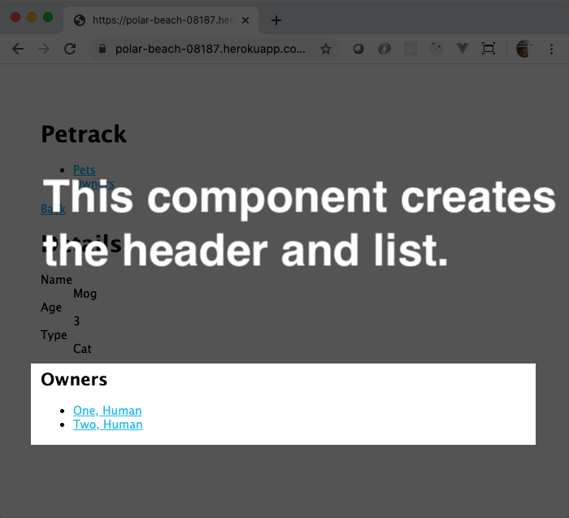
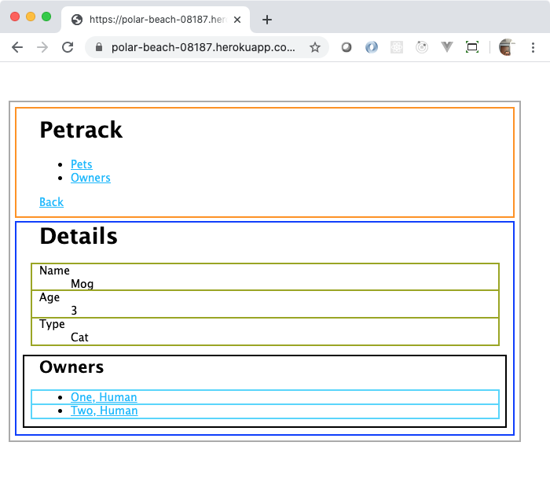

WEEK 14
React
Basic React Learning Objectives
- From JavaScript To DOM
- JavaScript eXtension
- Walk-Through: Creating Elements In React
- Thinking In Components
- JSX Walk-Through: Navigation Component
- JSX Walk-Through: Pet Details, Part 1
- JSX Walk-Through: Pet Details, Part 2
React Class Components Learning Objectives
- Simple React Project
- React Class Components
- Handling Events
- React Forms
- Component Lifecycle
- Official React Documentation
- Calculator Project
- React Widgets Project
React Router Learning Objectives
React Builds Learning Objectives
- React Router Introduction
- React Router Navigation
- React Router Nested Routes
- React Builds
- React Router Documentation
- Rainbow Routes Project
- Exploring React Builds Project
React Context Learning Objectives
Show And Tell
It's time to show off all of the hard work that you've done! Great job! You
worked as a team, pushed hard through the project, coordinated, collaborated,
communicated.
You are a real software development team!
Each presentation should last around 15 minutes. Some things that you may want
to highlight:
- The way that you integrated front- and back-ends
- Anything that you added that went beyond the bound of what you learned in
class and how that went - Reflect on the goods and bads of the experience as a team, talk about what
you would do differently if you could start over with all the knowledge you
have, right now
WEEK-14 DAY-1
Group Projects
React
You've been using what we call vanilla JavaScript (often referred to as
Vanilla.js) to build your front-end applications. And, you may have noticed that
it's hard. Creating strings to put new DOM into the page should be easier.
In this article, you will find out more about React and why you should consider
using it as a way to build separate front-end apps.
A front-end timeline
Lots of JavaScript/CSS libraries and frameworks have been invented to ease the
pain of front-end development. Here's an abbreviated list of some of the more
noteworthy ones in chronological order. Please click on each of the links and
just quickly browse each of these libraries' Web sites to get a feel for the
functionality each provides you.
- [script.aculo.us]: (2005) This is one of the first libraries that started
easing this by adding special effects and dynamic content for client-side
development. - [dojo]: (2005) This toolkit added a log of non-visual and visual components
that allowed developers to rapidly develop AJAX-enabled applications. - [YUI]: (2006) A full framework that provided dynamic loading of scripts,
events, visual components, data binding, and a philosophy on how to build
client-side applications. - [Knockout]: (2010) This is a standalone JavaScript implementation of the
[Model-View-ViewModel] pattern used to build very fast dynamic components for
client-side applications. It is the progenitor of many other libraries,
include React. - [AngularJS]: (2011) This framework from Google built on the success of Knockout
and introduced a full set of utilities and philosophies to build modular
client-side applications. (The current version has been branded [Angular].) In
the rewrite of Angular to make the idea of a component a first-order concept,
many developers left and joined the React community. - [Elm]: (2012) This is an entirely new language used to build front-end
applications. You write your front-end application in Elm. Then, you "compile"
it. The Elm "compiler" translates all of the source code written in Elm to
highly-tuned JavaScript so that it runs really fast in your Web browser. It
claims that by using Elm that your front-end code will have "no runtime
exceptions" which is a bold (and mostly true) claim.
React (2013)
In an effort to make its own Web front-end more maintainable, Facebook decided
to build its own JavaScript-based library to create fast and functional
front-end Web applications. Thus, React was born.
React manages the creation and updating of DOM nodes in your Web page. It
does not do AJAX. It does not do services. It does not do local storage. It does
not provide a pretty CSS framework for you. It just dynamically renders stuff
into the DOM
Because of Facebook's immense popularity as a developer-centric organization,
React was quickly adopted across the software-development industry, eclipsing
the use of all other front-end libraries and frameworks for many years. React is
still considered the standard front-end library to use to build modern Web
applications.
React is unopinionated about many aspects of front-end development. It doesn't
care how you make AJAX calls. It doesn't really care about how your page is laid
out. It has a few simple rules that you must follow, and It Just Works. You'll
learn about those in the next article, React Concepts and Features.
Working with plain old React became a real chore for anything non-trivial, so
they invented a new language to help write React applications. That language is
called JSX, or JavaScript eXtension. It looks like a mixture of JavaScript and
HTML (technically, XML).
Instead of writing Vanilla.js like this to create some DOM elements based on
some data that comes back from an API call. Don't worry about understanding what
you see. You will get the opportunity to learn more about all of this in later
articles, lectures, and projects.
fetch('https://example.com/api/people') .then(response => response.json()) .then(people => { const html = '<ul>'; for (let person of people) { html += `<li>${person.lastName}, ${person.firstName}</li>`; } html += '</ul>'; document.querySelector('#people-list').innerHTML = html; });
You would write something like this using JSX.
function PeopleList(props) { return ( <ul> {props.people.map(person => ( <li>{person.lastName}, {person.firstName}</li> ))} </ul> ); } const peopleListElement = document.querySelector('#people-list'); fetch('https://example.com/api/people') .then(response => response.json()) .then(people => { const props = { people }; ReactDOM.render(<PeopleList props={props}/>, peopleListElement); });
In this "simple" example, you may think, "Well, that's like twice the code! Why
would I do that?" Great question! When you start building lots of components,
lots of different pieces of visual widgets to put together to manage a complex
graphical human interface, it becomes really nice to put each of those functions
(or classes) into their own files and organize the code so you know where
everything is.
Using tools with React
Oh, and the tools! Because software developers constantly look for ways to make
things easier, the tools that have grown up around React are amazing. You'll
install React DevTools, a new tab in the Developer Tools that lets you see how
React actually works in the browser, much like the Elements tab does for just
HTML elements.
![React DevTools]
There is create-react-app, an extensible command-line tool that
helps you generate standard React applications. We'll show you how to use it
with custom templates, too, to help remove some of the over-engineered stuff
that comes with the standard template.
Because browsers only understand JavaScript and not JSX, there is an extra
"build step" involved with creating React-based front-end applications. There
are a variety of tools that software developers use to make this happen. The
most popular, right now, is to use a tool called Webpack. Later this week,
you'll get into some of the details about how that works.
![Webpack.js]
A really popular feature of modern React development is the concept of hot
module replacement (HMR). When you make changes to your source code, right now,
you must refresh your browser to see the changes. HMR sense what has changed and
send the change to the browser without you having to refresh it. The changes are
delivered in real-time, updating the UI for you as you make changes to the
source code. It is almost magic what happens.
After using React on their own massively complex Web interface, React developers
decided they did need to have an opinion about how to architect the state of
their application, that is, how to allow discretely different parts of their Web
page to consume and modify data received from back-end APIs. This introduced the
Flux architecture which you will learn about next week.
![Flux]
Choosing React
Because of the tools, because of the popularity, because (seemingly) everyone
knows React, choosing React to power your front-end is an easy choice. Hundreds
of thousands of other software developes know and love React. Tens of thousands
of companies use React on their Web sites and to power their Web applications.
App Academy's own learning platform that you're reading this on uses React as
the way to render content.
There are other viable modern alternatives to React. However, they are almost
all heavily influenced by React's design and implementation. Learning them is
like learning React and different parts of its vibrant ecosystem. React has
really become the stick by which all other front-end libraries are measured. And
will likely continue to hold that position for the near future.
What you've just seen
In this article, you've discovered that React is one of many front-end libraries
that you can use to build dynamic data-driven front-end JavaScript-based modern
Web applications. You've seen that React has its own language, JSX, to easily
write React applications. In addition to an easy-to-use language to write in,
the React team and community have created a bunch of tools and utilities for you
to use and add to your React application; these will help you inspect and debug
your application as you build it. React is a safe choice because you learn
about it here and in hundreds of other places.
React Concepts And Features
In this article, you will gain insight into why you may want to use React for
the front-end portion of your application, the part that runs in the browser,
as opposed to using plain-old vanilla JavaScript, that is, just the JavaScript
found in the browser.
Modularity
Unlike the mess of code that you can create with event listeners and template
strings in your JavaScript code to manipulate the DOM by adding, updating, and
removing elements from it, React provides modularity from the ground up. If you
see modularity, understanding where code is that's running, then React is for
you.
Easy to start
You don't need any special tools to use basic React. You can just import some
files and get to work using the createElement method that React provides to
define reusable "components" for what appears in the browser. They can be as
simple as a really cool button, or as complex as Facebook's Web UI.
For more complex applications, there are may tools available to you to get a
fully-functioning React application running from a single command on the
command line, tools such as Create React App. This handy tools will create a
full React application with live reload, testing, and support for things like
advanced CSS manipulation.
Declarative programming
In the same way that you use HTML to declare what the user interface should
look like, React provides the same mechanism in its element-based programming
API, either through the createElement method or the higher-level language
known as JSX.
Reusability
React encourages you to think in terms of reusability as you construct the user
interface from elements and components that you create. It works best when you
think of the page as pieces of UI working in harmony with one another. When you
make a list or a button or a product card, you can then reuse those components
to show different data that your UI demands to show.
One-flow of data
React applications are built as a combination of parent and child components. As
the names suggest, each child component has a parent and a parent component will
have one or more child components. Components receive data via an argument
traditionally named props. Parent components can decide the data that its
children should show by passing only a subset of what it has to its children.
Data is never passed up from the child to the parent. Because you always know
which way data flows, you can more easily debug your application to determine
where the data display or event handling code is.
The "virtual DOM"
You may have come to the conclusion that writing things like
el.innerHTML = ` <table> <tbody>` + arr.map(item => `<tr><td>${item.name}</td></tr>`) + `</tbody> </table> `;
is hard to debug, maintain, and use in the long run. React solves this problem
by providing a virtual DOM (in memory) that acts as an agent between the
developer and the real DOM. The virtual DOM is a lot more user-friendly for
developers.
Speed
Due to the use of a virtual DOM, React handles changes to a Web page more
intelligently than just string manipulation. It is constantly monitors the
virtual DOM for changes. It very efficiently reconciles changes in the virtual
DOM with what it has already produced in the real DOM. This is what
makes React one of the speediest front-end libraries available.
What you learned
You'll learn more about these in the upcoming videos and over the next couple
of days. Happy Reacting!
You found out that React has a variety of good points that encourage you to
choose it as the means to build your front-end:
- React encourages modular development
- React is easy to use, easy to start with, and has some great tools
- React follows the declarative programming style
- React encourages reusability in your code
- React has one way that data flows, which makes it much easier to reason about
the code - React uses a "virtual DOM" to make changes to the real DOM very fast and
efficient
Intro to ES6 Modules
Now, you will learn more about ES6 module syntax and how it is used to export
and import items between different files. You'll compare the differences between
managing exports with ES6 module syntax vs CommonJS module syntax. At the end of
this article, you will understand how to manage your exports and imports with
ES6's:
export defaultstatement to export one item per fileexportkeyword to export multiple items per fileimport ... fromstatement to import items from one file to anotherexport defaultstatement to export an unnamed item and rename the item in an
import statementaskeyword (in animport ... fromstatement) to alias and namespace
all of a file's exported items
Exporting one item per file
You cannot export multiple items per file by using an export default statement
with ES6 module syntax. For instance, the example below will only export the
Wallet class from the file.
ES6 modules
export default class Wallet { // ... } // sayHello will not be exported function sayHello() { console.log('Hello!'); }
The export default statement is equivalent to using module.exports to
directly export one item from a file using (instead of an object).
CommonJS modules
class Wallet { // ... } // sayHello will not be exported function sayHello() { console.log('Hello!'); } module.exports = Wallet;
Exporting multiple items per file
You can export multiple items per file by using the export keyword
(without the default keyword) with ES6 module syntax. Using ES6's export,
you have two options for exporting items. You can export each item as you define
it. With ES6 modules, the preferred method to export multiple functions or
classes from a single file is to export each function or class as it's defined.
ES6 modules (parts of an export)
export class Wallet { // ... } export function sayHello() { console.log('Hello!'); } export const sayHi = () => { console.log('Hi!'); };
Alternatively, you can refer to each item by name and export them all within an
object. This is the unpreferred method to export multiple functions or classes.
ES6 modules (export object)
class Wallet { // ... } function sayHello() { console.log('Hello!'); } const sayHi = () => { console.log('Hi!'); }; export { Wallet, sayHello, sayHi, };
Using ES6's export keyword is similar to how you can export classes and
functions as individual parts of an export or an export object with CommonJS
module syntax. Unlike with ES6 modules, the preferred method to export multiple
items from a single file with CommonJS modules is to export an object with
module.exports.
CommonJS modules (export object)
class Wallet { // ... } function sayHello() { console.log('Hello!'); } const sayHi = () => { console.log('Hi!'); }; module.exports = { Wallet, sayHello, sayHi, };
Importing with ES6 vs CommonJS
| ES6 modules | CommonJS modules |
|---|---|
import { Wallet } from './wallet'; |
const { Wallet } = require('./wallet'); |
import * as fs from 'fs'; |
const fs = require('fs'); |
Although calls to the require method can be anywhere in a JavaScript file
using CommonJS modules, this is not the case for ES6 modules. For ES6 modules,
the import statements must always be at the top of the file because imports
have to occur before the rest of the file's code runs.
CommonJS modules
let { Wallet } = require('./wallet'); const wallet = new Wallet(); let fs = require('fs');
ES6 modules
import { Wallet } from './wallet'; import * as fs from 'fs'; const wallet = new Wallet();
Unnamed default imports
You can give unnamed items that are exported with export default any name you
want when importing them. For example, imagine if you export default a
Wallet class from a file name wallet.js. When you import the Wallet class
into newFile.js, you can rename the Wallet class because of how you used
export default to export the class from the wallet.js file.
wallet.js
export default class Wallet { // ... }
newFile.js
import Money from 'wallet.js'; const wallet = new Money();
However, if you used the export instead of export default, you are using a
named export. With named exports, the import names have to exactly match.
wallet.js
export class Wallet { // ... }
newFile.js
import { Wallet } from 'wallet.js'; const wallet = new Wallet();
Aliasing imports
You can use an asterisk (*) to import an entire module's contents. Note that
you must alias your imported object using the as keyword to be able to refer
to it later. Aliasing can be used to namespace all the exported functions,
constants, etc. from a file to wrap them into a single, easily referenced
object.
greetings.js
export function sayHello() { console.log('Hello!'); } export const sayHi = () => { console.log('Hi!'); };
newFile.js
import * as Greetings from 'greetings.js'; Greetings.sayHello(); // Hello! Greetings.sayHi(); // Hi!
You can also use aliasing to rename identically named functions or items from
different files. For example, take the two Wallet classes below. Both classes
are named Wallet, but they come from different files. The Wallet from the
wallet1 file is aliased as W1 while the Wallet from the wallet2 file is
aliased as W2 to differentiate between the two Wallet classes.
import { Wallet as W1 } from './wallet1'; import { Wallet as W2 } from './wallet2'; const w1 = new W1(); const w2 = new W2();
Browser support for ES6 Modules
ES6 modules can only be used when a file is specified as a module. You can use
an HTTP server to serve an HTML file with a <script> tag of type="module".
By running a local web server, you gain browser support for ES6 module syntax by
using a <script> tag in an HTML file to specify a JavaScript file as an ES6
module (not just a normal JavaScript file). Note the <script> tag of
type="module" below:
<script type="module" src="./wallet.js"></script>
Mini-project
Follow the guidelines below to use an HTTP server and import JavaScript files
with ES6 module syntax:
- Create a folder with an
index.htmlfile. Fill in the file with the contents
below. Note the use of thetype="module"attribute in the<script>tag.
You must include the.jsfile extension in the name of the module
(./program.js). The browser needs to know the entire name of the JavaScript
file it will be loading from a server.<html> <head> <meta charset="UTF-8"> <meta name="viewport" content="width=device-width, initial-scale=1.0"> <title>Browser</title> </head> <body> <button id="button">Start Game</button> <div id="message"></div> <script type="module" src="./program.js"></script> </body> </html>
- Create a
game.jsfile with the contents below:export class Game { constructor() { this.gameStartMessage = "Hello! Do you want to play a game?"; } start() { document .getElementById('button') .addEventListener('click', () => { const messageContainer = document.getElementById('message'); messageContainer.innerText = this.gameStartMessage; }); } }
- Create a
program.jsfile with the contents below:import { Game } from './game.js'; window.addEventListener('DOMContentLoaded', () => { const game = new Game(); game.start(); });
- Make sure you are in the directory of your HTML and JavaScript files set up
an HTTP server withpython3 -m http.serverto serve theindex.htmlfile
to the browser. - When the browser reads the
index.htmlfile, it will read the<script>tag
and know that the JavaScript file is using ES6 module syntax
(type="module") to load theprogram.jsfile. - The browser will start reading the
program.jsfile from top to bottom,
reading theimport { Game } from './game.js';statement first. Note that
the.jsfile extension must be present for the browser to know the entire
name of the JavaScript file to load from the server. - The browser will then load the
game.jsfile and all the code in the loaded
JavaScript files will run!
What you've learned
In this reading, you learned about managing exports and imports with ES6 modules
and how using ES6 modules compares to using CommonJS modules. You learned that:
- ES6 has
importandexportkeywords (instead ofrequireand
module.exports) - ES6
importstatements are always at the top of the file - The
exportkeyword to exports multiple items from a file while theexport defaultphrase exports one item from a file - You can rename an item that is exported with
export default - The
askeyword can be used to alias an imported item - The
*character can be used to import an entire module's contents with a
namespace (import * as Namespace from 'fileName.js';) - ES6 modules can only be used when a file is explicitly specified as a
module, either through an HTML file with a<script>tag oftype="module"
or apackage.jsonfile with a"type": "module"field
WEEK-14 DAY-2
React!
Basic React Learning Objectives
Learning React can seem daunting. The documentation available on the main site
is geared toward people who have a lot of experience creating front-end
applications. The basic React objectives gets you over that hump. At the end of
the lessons, you should be able to:
- Explain how React uses a tree data structure called the "virtual DOM" to model
the DOM - Use
React.createElementto create virtual DOM nodes - Use
ReactDOM.renderto have React render your virtual DOM nodes into the
actual Web page - Use JSX to create virtual DOM nodes
- Describe how JSX transforms into
React.createElementcalls - Use
Array#mapto create an array of virtual DOM nodes while specifying a
unique key for each created virtual DOM node
From JavaScript To DOM
The path from JavaScript to actual DOM elements appearing in your HTML document
is not complex thanks to React. However, it is worth reviewing so that there is
no mystery about it.
In this article, you will review how to use React.createElement to get what
you want into React's virtual DOM so that React will convert into real DOM.
There are three steps:
- Invoking
createElementto build the "element tree" - Invoking
renderto let React build its virtual DOM - "Waiting" for React to convert its virtual DOM into real DOM
This article's goal is for React to create the following HTML in the DOM.
<ul> <li class="selected"> <a href="/pets">Pets</a> </li> <li> <a href="/owners">Owners</a> </li> </ul>
Using React
There is one method to consider when building interfaces using low-level React.
From the documentation, the React.createElement function has the following
form:
React.createElement( type, [props], [...children] )
The arguments for it are
- type: the type of element to create, either a string for an HTML element,
or a reference to a function or class that is a React component - props: an object that contains data to render the element, either data to
dynamically show or attributes to put on the element in the HTML - children: the children of the element, as many as you want
Creating elements
For each tag that you want to create with React, you will make a call to
React.createElement. In the HTML above, there are five tags to create:
- One
ulelement - Two
lielements - Two
aelements
Three of those tags have attributes that you want to have appear in the DOM:
- One
lielement has a "class" attribute (which you must translate to
"className" when using in React) - Both
aelements have "href" attributes
Finally, there is a parent-child relationship between the elements.
- The
ulelement is the parent of bothlielements - Both
lielements have a singleaelement child - Both
aelements have "child" text content
To summarize, here are the elements and how you would translate them to their
respective arguments for React.createElement.
| HTML snippet | type | props | children |
|---|---|---|---|
<ul>...</ul> |
'ul' |
null |
Two calls to React.createElement, one for each li child |
<li class="selected">...</li> |
'li' |
{ className: 'selected' } |
One call to React.createElement for the a child |
<li>...</li> |
'li' |
null |
One call to React.createElement for the a child |
<a href="/pets">Pets</a> |
'a' |
{ href: '/pets' } |
The string 'Pets' |
<a href="/owners">Owners</a> |
'a' |
{ href: '/owners' } |
The string 'Owners' |
To create this tree of elements, you will use nested calls to
React.createElement. The standard formatting for this is for elements to have
children, put each argument on its own line, and for elements that have no
children or just text content, put all arguments on a single line.
Since the ul has children, it will have its arguments on separate lines.
Referring to the table above gives you:
React.createElement( 'ul', null, // First li child, // Second li child, );
The first li element has a child. Its call to React.createElement will have
its arguments each go on their own separate lines:
React.createElement( 'ul', null, React.createElement( 'li', { className: 'selected' }, // a child ), // Second li child, );
The anchor element for "Pets" has only one text child. Its call to
React.createElement will have its arguments on one line:
React.createElement( 'ul', null, React.createElement( 'li', { className: 'selected' }, React.createElement('a', { href: '/pets'}, 'Pets'), ), // Second li child, );
The second li element has a child. Its call to React.createElement will have
its arguments each go on their own separate lines:
React.createElement( 'ul', null, React.createElement( 'li', { className: 'selected' }, React.createElement('a', { href: '/pets'}, 'Pets'), ), React.createElement( 'li', null, // a child ), );
The other anchor element, the one for "Owners" has only one text child. Its call
to React.createElement will have its arguments on one line:
React.createElement( 'ul', null, React.createElement( 'li', { className: 'selected' }, React.createElement('a', { href: '/pets'}, 'Pets'), ), React.createElement( 'li', null, React.createElement('a', { href: '/owners'}, 'Owners'), ), );
That's how you translate what you want from simple HTML into well-formatted
calls to React.createElement. That will build the "element tree" for React to
use.
Converting to virtual DOM
To tell React to start the conversion process, you have to use the
React.render method which takes a value returned from React.createElement
and a DOM node in the actual document where React will insert the result of the
conversion into real DOM.
If you wanted to insert what was created in the last section into the main
tag, the most forward way of doing that is like this.
// Put the element tree in a variable const navList = React.createElement( 'ul', null, React.createElement( 'li', { className: 'selected' }, React.createElement('a', { href: '/pets'}, 'Pets'), ), React.createElement( 'li', null, React.createElement('a', { href: '/owners'}, 'Owners'), ), ); // Get a DOM node for React to render to const mainElement = document.querySelector('main'); // Give React the element tree and the target ReactDOM.render(navList, mainElement);
At this point, you have given the element tree that you want created to React.
It will then take that and construct its virtual DOM from it.

Now that it has built it's own model of the virtual DOM using the elements that
you created, it can now take that and turn that into real DOM.

It takes that real DOM and inserts it as the content of the target that you gave
it which, in this case, is the main element in the body of the document.
Updates
When you call React.render again for the same component and target, React
takes the existing virtual DOM it knows about last time it rendered the element
tree, compares it to whatever new thing you want to render, and determines which
(if any) of the living DOM needs to change.
For example, let's say you constructed the same element tree but left off the
"selected" class for the first list element. Then, when you rendered it, again,
by calling React.render, React would compare the new element tree with the old
element tree, figure out that one class was missing on that one li element,
and remove that and only that from the real DOM.
![Virtual DOM diff]
What you've learned
In this article, you learned
- To convert desired HTML into properly-formatted nested calls of
React.createElement - How React takes your element tree and builds its virtual DOM from the elements
that you created - How React takes that virtual DOM and inserts it into the living HTML document
- How React will compare an old virtual DOM tree with a new virtual DOM tree,
figure out what changed, and then change that and only that in the real DOM
[Virtual DOM diff]: images/react-example-virtual-dom-diff.svgimages/react-example-virtual-dom-diff.svg orderedList=false} -->
JavaScript eXtension
Using React.createElement is a bore and a chore when creating React-powered
applications. The developers that used React, both inside and outside of
Facebook, wanted an easier way to interact with the React API and hide all of
the minutiae that comes with using React.createElement. They invented a new
language that sits on top of JavaScript called JavaScript eXtension, or JSX.
In this article, you will learn
- How to use JSX in your application
- The syntax of JSX, and
- How JSX transforms into
React.createElementcalls
How to use JSX
Because browsers don't understand JSX, you have to use some tools to translate
JSX into just plain old JavaScript. The main tool that you will use in almost
every case is one called Babel. It is a tool that can convert versions of
modern JavaScript into old version of JavaScript. It can convert future
features of JavaScript into modern JavaScript. It can convert JSX into modern
(or old) JavaScript.
However, using Babel by itself is like building a house with just a hammer. It'd
be nice to have fancier tools to help you build that house. That's where tools
like Create React App come into play. Create React App uses Babel
underneath and, then, adds a whole lot more. You'll see more of *Create React
App as you progress through the course.
JSX Syntax
Here's a function-based component using React.createElement that has an h1
element with the content "Hello!", a placeholder image, and a link to
some search engine passed in through props.
const ExampleComponent = props => React.createElement( React.Fragment, null, React.createElement('h1', null, 'Hello!'), React.createElement('img', { src: 'images/150' }), React.createElement('a', { href: props.searchUrl }, props.searchText), );
You've likely seen that before. JSX allows you to get rid of all of the calls
to React.createElement and replace them with almost HTML-looking tags. Here's
what the above content looks like in JSX.
const ExampleComponent = props => <React.Fragment> <h1>Hello!</h1> <img src="images/150" /> <a href={props.searchUrl}>{props.searchText}</a> </React.Fragment> ;
You can see Babel in action converting that JSX code above. Here's a link to
Babel already configured for you. Copy and paste that code above to see it
transform back into React.createElement invocations.
HTML-like tags, but...
The React.Fragment element contains the h1, img, and a, just like it
does in the React.createElement version, except instead of using a method call
to do it, it uses more familiar HTML-like tags. There's one super big difference
between the HTML that you know and what JSX expects. Can you see it?
Look at the end of the img tag. See that "/" before the closing angle bracket?
You must include that if the tag that you're using doesn't have a close tag.
If you want to use those HTML element in your JSX, then you have to put the
slash. The following table shows some common tags that you'd use and their
JSX equivalent.
| HTML self-closing tag | JSX equivalent |
|---|---|
<br> |
<br /> |
<hr> |
<hr /> |
<img> |
<img /> |
<input> |
<input /> |
<link> |
<link /> |
Properties and data
When you use the low-level React.createElement function call, you pass the
properties in as an object as the second argument. In JSX, you pass in
properties as if they were attributes on the tag.
When you want to use a static value, just use a string literal like this.
<img src="https://via.placeholder.com/150" />
becomes
React.createElement( 'img', { src: "https://via.placeholder.com/150" } )
And, when you want to pass in some data rather than a sting literal like above,
you use curly braces to turn
<a href={props.searchUrl}>{props.searchText}</a>
into
React.createElement( 'a', { href: props.searchUrl }, props.searchText )
The stuff inside the curly braces is just a JavaScript expression, so you could
do something like this, if you wanted, to make the search text uppercase:
<a href={props.searchUrl}> {props.searchText.toUpperCase()} </a>
Comments
To use comments in JSX, you use curly braces (because that means its just a
normal JavaScript expression) and block-level JavaScript comments.
<div> <h2>This is JSX</h2> {/* This is a comment in JSX */} </div>
Property names
Please read DOM Elements in the React documentation to understand how property
names work, as well as the special property names that React supports. You can
be assessed on the following special attributes:
checkedclassNamedangerouslySetInnerHTMLhtmlForonChangestylevalue
Also, you can be assessed on knowing that React uses camel-case for its
attribute names so attributes like maxlength in HTML are maxLength in React.
The JSX semicolon gotcha
You will also see code like this in other React projects, as well as in code
generated by tools. It is a function-based component that uses the function
keyword rather than an arrow function. Note the return statement.
function App() { return ( <div> <h1>Hello!</h1> <div>Welcome to JSX.</div> </div> ); }
You'll see that the JSX block is wrapped in parentheses. This is due to the way
that JavaScript handles something called "automatic semicolon insertion".
Here's a simple example. What do you think the function returns? (Yes, this is
a "trick question".)
function sum(i, j) { return i + j; }
If the answer isn't obvious, start Node on the command line, type it in exactly
the way it is there, and try calling it with sum(1, 2).
You may be surprised to see that it returns undefined. Here's why: when
JavaScript reads your source code, it tries to be "helpful". When it reads the
lines of your code, it asks, is each line a "complete" line? Is it and the
following lines valid JavaScript expressions? If the answer is "yes", then it
will add a semicolon at the end of the line for you. When it reads the above
"sum" function, the JavaScript runner "thinks" to itself:
- Ok, I have two lines:
returni + j;
- Are each of those valid JavaScript expressions? Yes!
- Now, I will put semicolons at the end of the lines that don't have any
return;i + j;
Now, your function, in the eyes of JavaScript, looks like this.
function sum(i, j) { return; // <- There's a new semicolon! i + j; }
That function never gets to i + j because it always returns "no value" on the
first line. Yikes!
To get around that, you can add parentheses to tell JavaScript that "more is
coming".
function sum(i, j) { return ( i + j ); }
Now, when JavaScript reads the line return (, it "thinks" to itself, "Well,
that's not a complete expression. There must be more coming. I will not put
a semicolon there."
The same is true for functions containing JSX. The above code
function App() { return ( <div> <h1>Hello!</h1> <div>Welcome to JSX.</div> </div> ); }
is equivalent to
function App() { return ( React.createElement( 'div', null, React.createElement('h1', null, 'Hello!'), React.createElement('div', null, 'Welcome to JSX.'), ) ); }
Without the parentheses starting right after the return keyword and ending
after the outer call of React.createElement, JavaScript would just stick a
semicolon after the return keyword and all of the fancy React stuff would get
ignored.
The message is clear: if you use the return keyword in a function to "return
some JSX", then make sure you wrap the JSX in parentheses.
What you've learned
That's really all there is to JSX. You combine your knowledge of HTML and your
knowledge of React.createElement to allow the Babel tool to turn your code
into plain old JavaScript for you. Specifically, you have seen the following
conversions:
| Conversion type | JSX | JavaScript |
|---|---|---|
| tags | <h1></h1> |
React.createElement('h1', null) |
| attributes | <img src="images/foo.png"/> |
React.createElement('img', { src: "foo.png" }) |
| variables | <h1>{message}</h1> |
React.createElement('h1', null, message) |
You've also read about the special property names that React supports.
Finally, you learned about the frustrating side effect of "automatic semicolon
insertion" and, if you do use the return keyword in your functions, that you
should wrap the JSX in parentheses to prevent JavaScript from not returning
your code.
Walk-Through: Creating Elements In React
To start your React journey, you will build your foundational knowledge by
starting out with the basic React.createElement and ReactDOM.render. One of
the compelling features of this type of solution is that you do not need any
extra tools to get your app running in the browser. In the next walk-through,
you will have to install a ton of packages just to get React to properly work.
This project will walk you through how to use a pure JavaScript version of
React. Everything will work right out of the box.
Getting started
Install the React DevTools for Google Chrome.

Create a new directory to contain this new project. In that directory, create
two files: an index.html file and an app.js file. In the index.html
file, create a standard HTML 5 document. In the HTML body (in this order),
create a main element and a script element for your app.js file with
type="module" so you can use ES6 modules.
Serve your files with a local Python server by running the python3 -m http.server command in your terminal. Make sure you are running the command
from within your project directory. You should be able to open
http://localhost:8000 to see the page, empty as it is.
Test that things are working
Get ready! You're going to do the first React thing! You're going to create a
React element that will display "Hello, programmers!". You will then have React
render it to the DOM.
Copy and paste the following JavaScript code into your app.js, refresh your
page, look at the code to get a feel for what it does, try to come up with
explanations on your own, and then continue reading.
import 'https://unpkg.com/react@16/umd/react.development.js'; import 'https://unpkg.com/react-dom@16/umd/react-dom.development.js'; const HelloWorld = () => React.createElement( 'h1', null, 'Hello, programmers', ); const target = document.querySelector('main'); const app = React.createElement(HelloWorld, null); ReactDOM.render(app, target);
Note: You may want to turn on "Disable cache" on the Network tab of your
DevTools and keep the DevTools open while you're doing this to make sure you
always have the newest version of the files.
You should now have Components and Profiler tabs in your DevTools. If you
click on the HelloWorld component in the Components tab, you can see that it
has no props. You'll learn much more about props later. For now, just remember
that the React DevTools extension is a helpful tool for you to view information
about your components and their props.
Walking through the code
Even though there are only five statements in that code block, a lot is going
on. This section carefully walks through each of the statements to help you get
a deeper understanding.
Those wacky import statements
Consider those import statements. These differ in two ways from what you've
seen with ES modules to date.
- They come from another website altogether. When you use
importto bring in
modules from another domain, that request is governed by CORS; that means the
other server must have CORS configured to let you import their code.
Luckily, unpkg.com configures CORS to allow any authority to import their
script files. - They don't seem to import anything. There is no
import { React } from
there. It's justimport 'url'. This is called a side effect import and is
generally frowned upon in modern Web development. But, React does not package
their code in ES6 format. What thoseimportstatements do is add variables
in the global scope. The two variables they add areReactfrom the first
import, andReactDOMfrom the second import. Those global variables can
then be used by your code, which happens withReact.createElementand
ReactDOM.render.
If you were going to move these into production, you would change the URLs that
you import from
import 'https://unpkg.com/react@16/umd/react.development.js'; import 'https://unpkg.com/react-dom@16/umd/react-dom.development.js';
to
import 'https://unpkg.com/react@16/umd/react.production.min.js'; import 'https://unpkg.com/react-dom@16.13.1/umd/react-dom.production.min.js';
Those files contain the minified "production" version of the code, which is just
a smaller version of the "development" versions. If you open up the links to the
react.development.js and react-production.min.js files in your browser,
you'll see JavaScript in both files. Notice how the non-minified version
(react.development.js) includes plain JavaScript you're used to seeing. The
minified version simply compresses that JavaScript.
The odd-looking function
Turn your attention to this statement.
const HelloWorld = () => React.createElement( 'h1', null, 'Hello, programmers!' );
The statement declares the HelloWorld variable and stores a function in it.
This is the way that components look in React. It is a function-based component
because it's a function. It returns the value returned from
React.createElement. If that syntax is weird, it is functionally the same as
this code.
const HelloWorld = () => { return React.createElement('h1', null, 'Hello, programmers!'); }
Because there are a lot of die-hard functional programmers (as opposed to
object-oriented programmers) that like that kind of syntax (arrow functions
without curly braces that span multiple lines), you will see it in a lot of
places while learning React.
The arguments passed to React.createElement are:
- What to create in the DOM.
- If it is a string, it needs to be all lowercase and the name of the HTML
element to create. This example passes in'h1'as the tag to create in the
DOM. - Otherwise, it should be the variable that holds another component. You can
see it being used that way in the later code.
- Any properties/attributes to put on the generated element. This example
passes innullbecause there are no attributes needed. You will see some,
soon. - The child content of the element. The third (and fourth and fifth and...)
arguments contains what React should put as the children of the content of
the element. In this case, the content is'Hello, programmers!'.
Important: Every time this walk-through asks you to create a function-based
component, this is what it will mostly look like. It will look like this or it
will look like this and have a single parameter named props like this.
// Without the need for data const HelloWorldNoData = () => React.createElement( 'h1', null, 'Hello, programmers!' ); // With the need for data has the // props parameter. const HelloWorldWithData = props => React.createElement( 'h1', null, 'Hello, programmers!' );
Putting it in the page
The last three statements in the code block are these.
const target = document.querySelector('main'); const app = React.createElement(HelloWorld, null); ReactDOM.render(app, target);
The first line is something you should be really familiar with. You are
selecting the <main> element and referencing it as target.
The second line is using React.createElement to create an element from the
HelloWorld function-based component discussed in the last section. It has
null properties.
The third line renders the component into the actual Web page, the component
specified by the first argument, which is the one created from the HelloWorld
component. Remember that you can open your DevTools, find the Components tab,
and click it to see the React DevTools show you the "HelloWorld" component
rendered by React.

Before moving on, add some more to that, so you get a feel for how it works.
Replace the content of your app.js with this stuff. The comments to the
right of each line shows what React will do with the stuff only after you call
ReactDOM.render with it.
Note: since you have not included a CSS file to style
#nav-linksand
.is-selectedin your project, theidandclassNamearen't actually being
used for any styling purpose. The code below includes anidandclassName
to shows an example of settingidandclassNamewithReact.createElement
and how it translates to HTML.
import 'https://unpkg.com/react@16/umd/react.development.js'; import 'https://unpkg.com/react-dom@16/umd/react-dom.development.js'; const Links = () => React.createElement( 'ul', // <ul { id: 'nav-links' }, // id="nav-links"> React.createElement( 'li', // <li { className: 'is-selected' }, // class="is-selected"> React.createElement( 'a', // <a { href: 'https://appacademy.io' }, // href="..."> 'App Academy' // App Academy ), // </a> ), // </li> React.createElement( 'li', // <li> null, React.createElement( 'a', // <a { href: 'https://aaonline.io' }, // href="..."> 'a/A Open', // a/A Open ), // </a> ), // </li> ); // </ul> const HelloWorld = () => React.createElement( 'h1', null, 'Hello, programmers', ); // Creates the HelloWorld first and, then, creates // the Links const AllTogether = () => React.createElement( 'div', null, React.createElement(HelloWorld, null), React.createElement(Links, null), ); const target = document.querySelector('main'); const app = React.createElement(AllTogether, null); ReactDOM.render(app, target);
Look at what gets produced in the Elements tab of your DevTools. Look at what
gets produced in the Components tab of your DevTools for all three of your
components. Play around with it: change tags, replace some of those null
second arguments with objects to see what gets presented. Give it a whirl. From
this point on, you'll be working with JavaScript code known as JSX in your
React projects. JSX is just syntactic sugar that translates to creating React
element objects. Although you won't be creating full-scale projects with
React.createElement, it's important to remember that React is actually using
React.createElement under the hood.
Thinking In Components
For the next couple of walk through articles, you will be reproducing a page
from Petrack. Please go to Petrack and click around it so you can see how it
works. Pay special attention to the detail page for the pets. This article will
analyze it so that it can introduce you into how to "think in React".

When you "think in React", you are supposed to "think in components". A
component in React is usually a JavaScript function or a class that returns a
special React object called an "element". There is a very vocal community that
believes that function-based components are far superior than class-based
components because they're easier to understand. You will have the opportunity
to use both in this class and make up your mind which you like better.
In this article, you will gain insight into how to break a UI down into
portions of functionality that React calls "components". The way this article
presents the components is only one way to do it. Other developers may choose to
do it differently. There is usually no wrong way to do it.
Components
In React-speak, a "component" is a chunk of the user interface that can (or
should) be treated as a unit because it may (or likely will) be used more than
once or used to structure a page. That's not a very satisfying definition. This
article will walk you through breaking down the page using the practical
example of the Petrack pet detail page.
When you think of components, it's good to think in terms of the Single
Responsibility Principle. Remember that? It's good to have a component do one
thing and one thing well. In this analysis, it will identify how it fits (or
doesn't fit) in with the Single Responsibility Principle.
If you think in terms of Pug, then a component is kind of like an include, a
big or small amount of code that you could use over and over in your UI. The
main difference is that React is in the browser and handles user events and
HTML generation for you so that you're not creating template strings and adding
them via the innerHTML property or appendChild method. Pug is just on the
server generating HTML.
The navigation component
On all of the pages, there is the same navigation at the top of the page.

If you were working in Pug, that would be in your layout.pug because you
would want it to appear in every page. In React, you will create a reusable
component, maybe call it Navigation, and use it on all of your React-enabled
pages.
This does one thing and one thing well: it shows the static content of the
navigation. There's nothing else it needs to do. Good job, Navigation
component!
What this means is that the code that will create the heading "Petrack", the
links "Pets" and "Owners", and the "Back" link will all be in their own
component, which is just a JavaScript function or class. It could look something
like this, but with real code where it reads "some cool React code here". This
is the skeleton of the code.
// Navigation.js import React from 'react'; const Navigation = props => { /* some cool React code here */ } export default Navigation;
You would put that in a file named Navigation.js. It's capitalized because,
in React world, the names of your custom components are always capitalized.
Don't worry if that doesn't make complete sense, yet. You will be making these
components and their files for the rest of your lives. Or, at least, for the
rest of this course. And, definitely, for the remainder of this module.
The walk through articles that follow this will explain what's going on as well
as what that props parameter is.
The details components
Now, for the remainder of the page.

This could be another component. It would create the "Details" headline, show
the individual details of the pet, create the "Owners" headline, and then create
the links to the owners. It could look something like this.
// PetDetail.js import React from 'react'; const PetDetail = props => { /* some cool React code here */ } export default PetDetail;
This component, the PetDetail component, does too much. It's in charge of
showing two different kinds of information, the details of the pet and the
owners links. That means there's probably an opportunity to create more
components that this component can then use. This is called component
composition.
Breaking it down further
Now, please think like a Pug developer for just a moment. How would you create
this page in Pug? The code for this from the project looks like this.
extends ../layout block content h1 Details dl dt Name dd= pet.name dt Age dd= pet.age dt Type dd= pet.PetType.type h2 Owners ul each owner in pet.Owners li: a(href="/owners/" + owner.id) #{owner.lastName}, #{owner.firstName}
To start thinking in components, ask yourself
- What parts of that page are repeated?
- What parts have the same structure?
You can see that in the Details section of the page, there are repeated
structures of dt and dd elements. You can see in the Owners section, there
is a loop that creates a link to the owners based on the owner information.
Those types of reusable chunks of content are good candidates for being their
own components.
The pet information item component
You can extract the creation of the dt and dd elements into its own
component.

That could look something like this.
// PetInformationItem.js import React from 'react'; const PetInformationItem = props => { /* some cool React code here */ } export default PetInformationItem;
It would be responsible for making that portion of the Web page appear. And, you
would use it over and over for each of the different pieces of data you wanted
to show. As you add more data about pets, you could use that
PetInformationItem to maintain the visual consistency of the Web page, as well
as allowing you to write less code. This component does one thing and does it
well.
The owner link component
Just like extracting the pet information item, you can extract that owner link
into its own component. It would generate the the a and format the
person's name.

Again, the skeleton code would look something like this.
// OwnerLink.js import React from 'react'; const OwnerLink = props => { /* some cool React code here */ } export default OwnerLink;
This component also does one thing and does it well. If you ever need to change
the way owner names appear in lists of links in the application, you can come to
this one component and change it. It would then take effect everywhere! Single
Responsibility Principle for the win!
The owners list component
Now, the thing that manages the list itself and the use of the OwnerLink
component is eligible for being its own component, too.

It's single responsibility is to manage creating the "Owners" header and the
unordered list. It will use the OwnerLink component to do that! Again, this is
called component composition.
// OwnersList.js import OwnerLink from './OwnerLink'; import React from 'react'; const OwnersList = props => { /* some cool React code here */ /** * Use the OwnerLink component, too! */ } export default OwnersList;
Putting the list and details together
If you create the PetInformationItem and the OwnerLink component, then
you will want to use them in your PetDetail component. That is as easy as
using the import statement to allow them to be used by that code.
// PetDetail.js import OwnersList from './OwnersList'; import PetInformationItem from './PetInformationItem'; import React from 'react'; const PetDetail = props => { /* some cool React code here */ /** * Use the OwnersList and PetInformationItem * components, too! */ } export default PetDetail;
Putting it all together
Once you have all of those components, you would create one more component, the
top-level "page" component, that would render the Navigation and PetDetail
components.
// PetDetailPage.js import Navigation from './Navigation'; import PetDetail from './PetDetail'; import React from 'react'; const PetDetailPage = props => { /* some cool React code here */ /** * Use the Navigation and PetDetail * components, too! */ } export default PetDetailPage;
The final analysis in this breakdown of "components" to "think in React" looks
like this.

You can see each of the components that were described in this article. You can
also see how the PetInformationItem and OwnerLink components get used
multiple times on the page.
There is probably more
Take a look at this, again, and think about if there is any "missing" component
before continuing.
You could also create a PetDetailList component, if you want, that would
manage the "Details" header and the definition list. That would reflect the
same structure that the OwnersList has, a component responsible for generating
a header and a list. In the following walk through articles, the PetDetailList
component will also be included in the development.
What you've seen
This is thinking in React. Looking at a Web page and deciding what parts of it
belong in sections, what parts are repeated, and how to group them all together.
The React documentation calls this breaking the UI into a component hierarchy.
That link is to a section in the React documentation entitled Thinking in
React. That section performs the same exercise that this article performed, but
with a lot fewer words and pictures.
In the upcoming exercises, you will create these components in a couple of ways.
The first way is the hard way, but shows you how React works under the covers.
The second way uses the fancy JSX language to make it easier for you.
JSX Walk-Through: Navigation Component
You will now work on creating the PetTrack page.
PetDetailPage: Created in this stepNavigation: Created in this stepPetDetailsPetDetailListPetInformationItemOwnersListOwnerLink

The strategy
This guide will work top-down, in that it will start with the top-most (or
outer-most) component, the PetDetailPage component. Then, it will move to
a next level component, like Navigation. It will just keep adding components
and getting them to work with the data from the AJAX call.
The pet detail page component
The PetDetailPage component will be responsible for showing the navigation
component, the details list component, and the owners list component. None of
those exist, yet, so just stub out a new component to hold the source.
Create a new file named PetDetailPage.js in the src directory. In that
file, type this content into it.
import React from 'react'; const PetDetailPage = () => <div>PetDetailPage component</div> // Temporary so it builds ; export default PetDetailPage;
Here's some analysis.
The import statement
You will notice that the top of the file imports the React object, but you do
not use it anywhere in the file! You have to do this because, remember, each
JSX element, like <header>...</header>, ends up getting translated to
React.createElement calls. Without the import statement, the React object
would not exist and compiling would fail.
The component
The const PetDetailPage = () => ... is just a normal arrow function.
The body of the component is a JSX expression <div></div> which Babel will
translate into an invocation of React.createElement. Here's what it looks like
after passing through Babel.
var PetDetailPage = function PetDetailPage() { return React.createElement("div", null, "PetDetailPage component"); } // Temporary so it builds ;
The export statement
This is just so you can import it into other components for use, which you will
do now.
Using the pet detail page component
Open up src/App.js. Import the newly-created PetDetailPage component.
Remember that this is Webpack that's doing this for you, so you do not need
to put the .js extension on the name of the module that you import.
Replace the <h1>Hello</h1> with <PetDetailPage></PetDetailPage>. Save all of
your files. You should now see this content in your browser and Components
tab.

The content of the src/App.js should look similar to this.
import React from 'react'; import PetDetailPage from './PetDetailPage'; function App() { return ( <PetDetailPage></PetDetailPage> ); } export default App;
Since PetDetailPage has no child content, you could also write that code
like this, with the ending slash.
import React from 'react'; import PetDetailPage from './PetDetailPage'; function App() { return ( <PetDetailPage /> ); } export default App;
The navigation component
Create a new file named Navigation.js in the src directory of your
application. Put this content in there. Please type it rather than copy and
paste it.
import React from 'react'; const Navigation = () => <header> <h1>Petrack</h1> <nav> <ul> <li> <a href="/pets">Pets</a> </li> <li> <a href="/owners">Owners</a> </li> </ul> </nav> </header> ; export default Navigation;
All of the JSX, the html-looking tags, those get converted into the calls to
React.createElement. When Babel gets done with it, it looks like this, which
is just an ugly version of one call to React.createElement for each of the
elements in the JSX.
var Navigation = function Navigation() { return React.createElement("header", null, React.createElement("h1", null, "Petrack"), React.createElement("nav", null, React.createElement("ul", null, React.createElement("li", null, React.createElement("a", { href: "/pets" }, "Pets")), React.createElement("li", null, React.createElement("a", { href: "/owners" }, "Owners"))))); };
Using the navigation component
Back in the src/PetDetailPage.js file, import the Navigation component and
replace the <div>PetDetailPage component</div> with the Navigation component
much like you did in the App component with PetDetailPage.
Once you save your files, you should see the navigation.

What just happened?
You created two new components and added them to the src directory. You
imported them so that other components could use them. It was fast and easy and
(hopefully) painless. JSX is lovely to work with, far easier than the calls to
React.createElement if that didn't exist.
JSX Walk-Through: Pet Details, Part 1
You will now start adding data rendering to the page with the components created
and modified in this step.
PetDetailPage: Modified in this stepNavigation: DonePetDetails: Created in this stepPetDetailList: Created in this stepPetInformationItem: Created in this stepOwnersListOwnerLink
Getting some data
Open the src/index.js file. In it, after the call to ReactDOM.render,
create a fetch call for the RESTful endpoint
https://polar-beach-08187.herokuapp.com/api/pets/2. (You can click on the link
to see the data. That's "Mog", the cat. She is forgetful.) Do all of the normal
stuff that you would do with async functions and what not.
(async () => { const url = 'https://polar-beach-08187.herokuapp.com/api/pets/2'; const response = await fetch(url); if (response.ok) { const pet = await response.json(); console.log(pet); } })();

Now, to pass that data into your React components, you will pass it as a
property. You have to pass it on the element getting rendered. React is all
about rendering things. You can just call another render from inside your
async function. But, this time, you will pass the pet data in as an attribute
of the App component with curly braces to indicate to JSX that it is a data
value and not a string.
(async () => { const url = 'https://polar-beach-08187.herokuapp.com/api/pets/2'; const response = await fetch(url); if (response.ok) { const pet = await response.json(); console.log(pet); ReactDOM.render( <React.StrictMode> <App pet={pet} /> {/* Now, with data */} </React.StrictMode>, document.getElementById('root') ); } })();
This has changed everything! You don't see it, yet, but once the AJAX call
completes, go look at the Components tab of your DevTools. Click on the
App component and look at the values in the right pane. React now
knows about the data that you passed in!
Now, you need to pass that to the PetDetailPage component. In the
src/App.js file, change the function's parameter list to have a single
parameter named "props". Then, pass the value of props.pet into the pet
attribute of the PetDetailPage component, similar to what you did in
src/index.js for the App component. You should be able to see the props
in the Components tab for both the App and PetDetailPage components.

You will use that data to pass down into the detail components that you will now
create.
The pet details component
Note: This section introduces an error that you will fix. It is a common
error, so knowing how to fix it when you see it is good information to have.
The PetDetails component is in charge of rendering the PetDetailList and the
OwnersList components. For now, get a new component working.
Create a new file named src/PetDetails.js. Import the React object. Create
a function-based PetDetails component that has a props parameter, and have
it render an empty div. Export the component as the default export for the
module.
In the PetDetailPage.js file, import the new PetDetails component. Change
the PetDetailPage component to accept a props parameter rather then an
empty parameter list. Then, use the PetDetails component in the body of the
PetDetailPage as a sibling to the Navigation component. You need to pass
the pet data into it. Your code should look like this. (You may have empty tags
rather than the self-closing slash tags. That's fine.)
import React from 'react'; import Navigation from './Navigation'; import PetDetails from './PetDetails'; const PetDetailPage = props => <Navigation /> <PetDetails pet={props.pet} /> ; export default PetDetailPage;
Save all of your files. Look at your browser. There is an error.

This happens because components must have a single top-level element. You can
see that PetDetailPage now has two because both Navigation and PetDetails
are at the top level.
To solve this, you need the two elements in a single element. You could do that
with a div, for example.
const PetDetailPage = props => <div> <Navigation /> <PetDetails pet={props.pet} /> </div> ;
This is fine, except for when you don't want to introduce extra tags for no
reason in your HTML. That is why, in React 16, the developers introduced the
idea of a Fragment. The Fragment is a special placeholder that groups
together JSX elements in the virtual DOM, but does not creating any tags in the
real DOM. You can wrap those two elements (or any number of elements) in a
React.Fragment JSX element like this.
const PetDetailPage = props => <React.Fragment> <Navigation /> <PetDetails pet={props.pet} /> </React.Fragment> ;
If you do that and save the file, the compile error goes away and you see the
content as it should be.
Wrapping things in Fragment elements like that is such a common thing, that
there is a shortcut syntax for it. Since the Fragment does not represent any
real tag, you write it like an HTML tag that has no name.
const PetDetailPage = props => <> <Navigation /> <PetDetails pet={props.pet} /> </> ;
It's pretty weird. But, it's a very React way of doing things.
Create the pet detail list component
Here's some code for you that you can use for your PetDetailList component.
Create a file named src/PetDetailList.js and put it in there. Feel free to copy
and paste it so that you can get on to the neat-o data stuff.
import React from 'react'; const PetDetailList = props => <> <h2>Details</h2> <dl> </dl> </> ; export default PetDetailList;
Back in PetDetails.js, import this new PetDetailList component, and
replace the empty div with it.
// Add the import line import PetDetailList from './PetDetailList.js'; const PetDetails = props => <PetDetailList pet={props.pet} /> ; export default PetDetails;
Refresh your page. You should now see the PetDetailList in the Components
tab. It's props should have all of data for the pet on it. You should also see
the "Details" headline in the rendered HTML, too.
The next step is to create the PetInformationItem component to fill out that
dl just yearning for content in the PetDetailList component.
The pet information item component
Note: The following steps will introduce an error that you will fix. This is
so you can get a feel for what kind of errors you will see when working with
React.
Mira's Note: The following will not actually introduce an error for the
reason provided, because there is no missing pass-down of props in the chain of nested components if you follow the instructions. The error described after it,
however, will show.
Create a new file, src/PetInformationItem.js. It will contain a
function-based component that needs data to render, so stub out the function
with the "props" parameter. Don't forget to import the React. Then, it needs
to render two elements, the dt element and the dd element. Do that by
wrapping a fragment around them.
<dt>Name of property</dt> <dd>Value of property</dd>
So, the code will look something like this.
import React from 'react'; const PetInformationItem = props => <> <dt>{props.name}</dt> {/* Replace this with the dd element and value */} </> ; export default PetInformationItem;
Replace the comment with a dd JSX element that has props.value as its
content, similar to how the dt has props.name as its content.
That implies an expectation that this component needs a property named "name"
that will be used to render the dt element, and it needs a property named
"value" to render the dd element.
Once you have that done, it's time to use it in the PetDetailList components.
Go back to src/PetDetailList.js. Import the PetInformationItem component.
You will use it three times, to show the name, age, and pet type of the pet.
Here's the first one. Just put it in there and save it because you have to
investigate an error.
const PetDetailList = props => <> <h2>Details</h2> <dl> <PetInformationItem name="Name" value={props.pet.name}/> </dl> </> ;
This shows that PetDetailList now has an expectation that props will have a
"name" property, an "age" property, and a "PetType" property that will have a
"type" property on it! That's a lot of expectations...
If you refresh your page, an error might occur.

The Create React App reports the error for you in the browser's main window.
This is nice so that you don't have to go mucking about the console to try to
determine what went wrong.
In the above screen shot, it complains that it cannot get the "property 'name'
of undefined". If you get this error, make sure you are passing down the pet
prop from the App component all the way down to the PetDetailList
component. You can see all the props for each component in the Chrome dev
tools Component tab.
The following conditions trigger that same error but for a different reason.
In the src/index.js file, you render App twice. Once before the fetch call,
and once after the fetch response comes back. NOTE: This is NOT the normal way
to render the App after a fetch call. You will be learning a better way to use
fetch calls with React tomorrow.
Your src/index.js should now look like this:
// ... imports ReactDOM.render( <React.StrictMode> <App /> </React.StrictMode>, document.getElementById('root') ); (async () => { const url = 'https://polar-beach-08187.herokuapp.com/api/pets/2'; const response = await fetch(url); if (response.ok) { const pet = await response.json(); ReactDOM.render( <React.StrictMode> <App pet={pet} /> {/* Now, with data */} </React.StrictMode>, document.getElementById('root') ); } })();
If you refresh your page, you should see the following error.
Can you see where that's happening in the PetDetailList.js
file? Take a moment to figure out where the error is being thrown.
If you identified the expression props.pet.name, then you got it! Remember
that when the React first renders the virtual DOM, it has no data. That
doesn't come until later, after the AJAX call completes. There are so many
ways to fix this but only one is idiomatic React. That is the use of
defaultProps.
Recall that the PetDetailList component has an expectation that the props
value should have a "pet" property that is an object. You can specify a
default value for the "pet" property for the PetDetails component by
putting the following code after the function declaration.
PetDetailList.defaultProps = { pet: {}, };
This tells React that, when the PetDetailList renders, if the "pet"
property of props is undefined, then it should use the default value specified
in the assignment. This is a built-in React feature and fixes the problem.
Refresh the page. You should now see the page render and, when the AJAX call
completes, the name "Mog" to appear.
Now, add the other two PetInformationItem calls. One should have the name
"Age" and the value of props.pet.age. The second should have the name "Type"
and the value of props.pet.PetType.type. That will cause another error, so
take care of it in the defaultProps.

If it's hard to see the before load, comment out the async function in the
src/index.js to see what the page looks like before the fetch call is made.
// ... src/index.js // (async () => { // const url = 'https://polar-beach-08187.herokuapp.com/api/pets/2'; // const response = await fetch(url); // if (response.ok) { // const pet = await response.json(); // ReactDOM.render( // <React.StrictMode> // <App pet={pet} /> {/* Now, with data */} // </React.StrictMode>, // document.getElementById('root') // ); // } // })();
If you want that yucky bumpy load to not happen, consider creating a default
value for the "value" property in PetInformationItem. In the following
screenshot, you can see what happens when you set a default value of
"loading..." for the "value" property in PetInformationItem.

What you've seen
In this part of building a React application, you have
- Passed data from an AJAX call (or really wherever) into a React component
- Accessed data using the conventionally-named
propsparameter in your
function-based components - Passed data from a "parent" component to a "child" component
- Used default values to prevent errors and improve the aesthetic experience of
using your application
Just one more step and you're done!
JSX Walk-Through: Pet Details, Part 2
All you have left is to create a list of owners with links.
PetDetailPage: DoneNavigation: DonePetDetails: Modified in this stepPetDetailList: DonePetInformationItem: DoneOwnersList: Created in this stepOwnerLinkCreated in this step
You're almost done. Now, you get to handle a collection of data from the owners.
Stub out the owners list component
You've done this four other times, so it's pretty straight forward.
- Create the src/OwnersList.js file. In it,
- Import the React object
- Create the function-based component named
OwnersListwith aprops
argument that uses aReact.Fragmentas its element - Add a child that is an 'h2' with the content "Owners"
- Using
defaultProps, add a default property value for "owners" and set it
to an empty array because this component will expect an array of owner data - Export the
OwnersListas the default export
- In the PetDetails.js file,
- Import the
OwnersListcomponent - Add it as another child element of the
PetDetailPagecomponent after the
PetDetailList - Wrap both the
PetDetailListandOwnersListin aFragment. - Pass in the owners to the
OwnersListcomponent in a property named
"owners" like this{props.pet.Owners}which will pass in the
array of owners for the pet - Fix the error with a default value for the "pet" property
- Import the
// src/PetDetails.js import React from 'react'; import OwnersList from './OwnersList'; import PetDetailList from './PetDetailList'; const PetDetails = props => <> <PetDetailList pet={props.pet} /> <OwnersList owners={props.pet.Owners} /> </> ; PetDetails.defaultProps = { pet: { PetType: {}, }, }; export default PetDetails;
Refresh the page and make sure everything still works.

Dealing with the list
Note: This section introduces an error that you will fix. It is a common
error about how to create React elements from lists. You may see it often. This
way, you will know how to fix it, too.
Back in OwnersList.js, you want a ul to follow the h2.
const OwnersList = props => <> <h2>Owners</h2> <ul> {/* Create li elements here */} </ul> </> ;
Here's the thing. You have an array of owners. You want to turn them into some
list items. For each owner, you want to map that to a list item. And, therein
lies the hint. Since the value in props.owners is an array, you can use the
map function to generate another array of React elements and plop them in
there! Give it a go with this code. Replace the comment about where list items
go above with this line of code.
{ props.owners.map(owner => <li>{owner.firstName}</li> )}
Refresh the page. What happens? You should now see "Human" for each of the
list items. That's great! In the console, there's an error. That's sad!
![Petrack with owners list and key error]
In this last step, you've changed the way you're passing children into the
React.createElement. Up until now, you've had discrete single elements as
children, like in PetDetailList.js where you have this code.
const PetDetailList = props => <> <h2>Details</h2> <dl> <PetInformationItem name="Name" value={props.pet.name}/> <PetInformationItem name="Age" value={props.pet.age}/> <PetInformationItem name="Type" value={props.pet.PetType.type}/> </dl> </> ;
Each of PetInformationItem elements is a different, discrete, and separate
child for the dl element.
The code in OwnersList.js, this code,
const OwnersList = props => <> <h2>Owners</h2> <ul> {props.owners.map(owner => <li>{owner.firstName}</li> )} </ul> </> ;
in that, you have created an array of objects. Recall that when you call the
map function on an array, it returns another array. React doesn't care
about this, but it would like a little help in tracking each of those entries
in the virtual DOM that it builds. That's what the error message is about,
giving React a little help by providing a "key" property for each of the
elements that you're creating in the array. The value of the "key" property
must be unique and stable, that is, for a given object (like an owner named
"Human One" with an id of 7), the value returned must always be the same.
Luckily, because you have the id of the owner, you can use that because that id
value is tied to a primary key, somewhere, and should never change for this
object. The name can change, of course. But, the id will likely never change.
Add a "key" property to the li element and set it equal to the id of the owner
object, like this.
<li key={owner.id}>{owner.firstName}</li>
Now, the error in the console goes away.
Back to the OwnersList component, look at the formatting, the indentation that
you see in the code.
const OwnersList = props => <> <h2>Owners</h2> <ul> {props.owners.map(owner => <li key={owner.id}> {owner.firstName} </li> )} </ul> </> ;
That, too, is idiomatic React, the React way of doing things. You'll see that
kind of code all over the React world.
The owner link component
While it's nice, and all, to see the owner's first name in the list, the actual
page has a link to the owner page with the format "last name, first name". Time
to create the (last!) component of this walk-through.
Create a new file named src/OwnerLink.js. In it, do the following:
- Import the React object
- Create a new function-based component named
OwnerLinkthat accepts data that
hasaas its element- An object literal with the property name "href" and the value of the
"href" property passed in through theprops - A string as its child which contains the last name and the first name
- Export the component as the default export
Once you have that, import the OwnerLink component into the
src/OwnersList.js file. Now, replace this line in OwnersList
{owner.firstName}
with an OwnerLink component with three attributes: "href", "firstName", and
"lastName". Those are the three properties expected inside the component. Use
the curly brace syntax to pass in the appropriate values of the owner. This is
something you haven't done, yet. Try to think through the problem of how to pass
in multiple property values. If you get stuck and can't get it after about ten
minutes, ask for help!
Refresh the page. If everything works, you're done!
What you've done, here
In this part of the walk-through, you used a collection to render a collection
of React elements. You found out that using a collection like that requires you
to provide a "key" property that has a stable, unique value. Once you had that,
React would gladly manage that collection of objects in its virtual DOM.
What you've done, overall
You have used JSX to do some amazing things, here.
- You reinforced the best practice of putting one React component in its own
file (module) and exporting it as the default value of the module - You learned that JSX compiles to
React.createElement - You learned that
<>and</>are shorthand literal for the often-used
React.Fragmentelement - You used
defaultPropsto make sure that components always had some valid
values to work with - You used pure functional components all the way through this, which means
that none of the components used any other data than what was given to it - You are intimately familiar with how React creates its elements, now, which
means there will be no magical thinking about JSX when you use it
[Petrack with owners list and key error]: images/react-pet-detail-owners-list-with-key-error.pngimages/react-pet-detail-owners-list-with-key-error.png=6 orderedList=false} -->
All you have left is to create a list of owners with links.
PetDetailPage: DoneNavigation: DonePetDetails: Modified in this stepPetDetailList: DonePetInformationItem: DoneOwnersList: Created in this stepOwnerLinkCreated in this step
You're almost done. Now, you get to handle a collection of data from the owners.
WEEK-14 DAY-3
React With State
React Class Components Learning Objectives
As you've learned the fundamentals of React, you've seen how to use functions to
create components. You can also create components using ES2015 classes. After
reading and practicing, you should be able to:
- Create a simple React application by removing items and content from a project
generated by the Create React App default template - Create a simple React application using a custom Create React App template
- Create a React component using ES2015 class syntax
- Describe when it's appropriate to use a class component
- Initialize and update state within a class component
- Provide default values for a class component's props
- Add event listeners to elements
- Prevent event default behavior
- Safely use the
thiskeyword within event handlers - Describe what the React
SyntheticEventobject is and the role it plays in
handling events - Create a React class component containing a simple form
- Define a single event handler method to handle
onChangeevents for multiple
<input>elements - Add a
<textarea>element to a form - Add a
<select>element to a form - Implement form validations
- Describe the lifecycle of a React component
- Recall that the commonly used component lifecycle methods include
componentDidMount,componentDidUpdate, andcomponentWillUnmount - Use the
componentDidMountcomponent lifecycle method to fetch data from an
API - Utilize official documentation to gain an understanding of how new technology
works
Simple React Project
While creating a new React project using Create React App is easy to do, the
application that the default template generates contains items and content that
aren't essential for learning React. Distilling the generated application down
to its essential items and content removes all distractions and allows you to
focus on the basics.
When you finish this article, you should be able to:
- Create a simple React application using a custom Create React App template;
and, - Create a simple React application by removing items and content from a project
generated by the Create React App default template.
Using a custom template
Deleting files from the standard Create React App template can get tedious. To
help save you time, App Academy has a custom template that you can use with
Create React App to generate a simple React application!
Just run the following command:
npx create-react-app my-app --template @appacademy/simple
Feel free to change my-app to whatever you'd like. Once the command completes,
browse to the generated application folder and run npm start to start your
application!
If you like deleting files...
If you still just want to use the template that comes with Create React App
and want to delete the files yourself, here's that guide for you to follow.
To start, use Create React App to create a new application:
npx create-react-app simple-project
Then open the simple-project folder in your code editor.
Simplifying the public folder
In the public folder, you're only going to keep the index.html file, so
remove all of the following:
favicon.icorobots.txtlogo192.pnglogo512.pngmanifest.json
The favicon.ico and robots.txt files are useful for applications that will
actually be released and used by actual users, but not necessary for learning
projects. The logo192.png and logo512.png image files are referenced in the
manifest.json file and are the icons that browsers use in various
contexts (home screen, application menu, etc.) The
manifest.json file provides the metadata that's used when your web
app is installed on a user's mobile device or desktop.
Now you can simplify the content of the index.html to this:
<!DOCTYPE html> <html lang="en"> <head> <meta charset="utf-8" /> <title>React App</title> </head> <body> <div id="root"></div> </body> </html>
To get to the above HTML, you can:
- Remove the unnecessary lines of code until you're left with the above code; or
- You can remove all of the code and use the
html:5Emmet command to generate
the boilerplate HTML and add a<div>element with anidattribute set to
root(this is the element that your React application will render to).
Simplifying the src folder
In the src folder, you're going to keep the following files:
App.jsindex.cssindex.js
And remove all of the following:
App.cssApp.test.jslogo.svgserviceWorker.jssetupTests.js
The App.css file is where you'd add styles that are scoped to the App
component and the App.test.js file is where you'd write unit tests for the
App component. While you're learning React, styling components and writing
unit tests won't be a focus. If you want to add some basic styles for your
application, you can use the index.css file to add global styles.
The logo.svg file was part of the visual design of the generated application.
The serviceWorker.js file contains code that registers a service worker which allows the application load faster on subsequent visits
if/when the application is released into production. The setupTests.js file
contains a single import statement for a module that helps make it easier to
write unit test assertions on DOM nodes.
Now you can update the contents of the App.js, index.css, and index.js
files to the following:
// ./src/App.js import React from 'react'; function App() { return ( <h1>Hello world!</h1> ); } export default App;
/* ./src/index.css */ /* TODO Add site wide styles */
// ./src/index.js import React from 'react'; import ReactDOM from 'react-dom'; import './index.css'; import App from './App'; ReactDOM.render( <React.StrictMode> <App /> </React.StrictMode>, document.getElementById('root') );
For your reference, here's a repo containing the final simple React project:
react simple project
What you learned
In this article, you learned how to:
- Create a simple React application by removing items and content from a project
generated by the Create React App default template; and - Create a simple React application using a custom Create React App template.
React Class Components
As you've learned the fundamentals of React, you've seen how to use functions to
create components to develop the user interface for a frontend application.
Unsurprisingly, as with most things related to software development, there's
more than one way to create components in React.
When you finish this article, you should be able to:
- Create a React component using ES2015 class syntax;
- Describe when it's appropriate to use a class component;
- Initialize and update state within a class component; and
- Provide default values for props.
Hello class components!
Up to this point, you've written components using functions:
// ./src/Message.js import React from 'react'; const Message = (props) => { return ( <div>{props.text}</div> ); }; export default Message;
But React also allows you to create components using ES2015 classes. Here's the
above function component rewritten as a class component:
// ./src/Message.js import React from 'react'; class Message extends React.Component { render() { return ( <div>{this.props.text}</div> ); } } export default Message;
Every class component must extend (i.e. inherit) from React.Component and have
a render method that returns the element(s) to render for the component.
Class components are used just like function components:
// ./src/index.js import React from 'react'; import ReactDOM from 'react-dom'; import Message from './Message'; ReactDOM.render( <React.StrictMode> <Message text='Hello world!' /> </React.StrictMode>, document.getElementById('root') );
From just the above JSX code in the index.js file, you can't tell if the
<Message> component is written as a function or class component. Which
approach that's used is an internal implementation detail of the component. In
fact, you can switch back and forth between the two approaches provided that you
aren't using a feature that's only available in class components (more about
this in just a bit).
Setting and accessing props
Notice from this example of using the Message class component that props are
set on class components just like you do with function components:
<Message text='Hello world!' />
To access props within a class component, use the this.props property:
class Message extends React.Component { render() { return ( <div>{this.props.text}</div> ); } }
If your class component defines a constructor method that needs access to
props, define a props parameter:
class Message extends React.Component { constructor(props) { super(props); // TODO Initialize state, etc. } render() { return ( <div>{this.props.text}</div> ); } }
Just be sure to call the super method and pass in the props parameter!
Failing to do so will result in the following error:
ReferenceError: Must call super constructor in derived class before accessing
'this' or returning from derived constructor
Remember, a component, whether it's a function or class component, should
never change its own props.
Legacy class component syntax
In the early days of React, before using ES2015 classes was commonplace,
components were usually created using the React.createclass function. You'll
still sometimes see this syntax in the wild. If in the future you ever find
yourself needing to create a component using the React.createclass function
when targeting newer versions of React, you'll need to install a separate React
module named create-react-class.
Stateful components
So far, the above example class component behaves exactly as its function
component counterpart. This might leave you wondering why you'd want or need to
create a class component.
One of the two reasons why you would use a Class component over a Function
component is to add and manage local or internal state to your component. The
second main reason to use a Class component is to use a component's
lifecycle methods. The following sections will focus on how to add and manage
a component's state. You'll learn more about a component's lifecycle (and the
associated component lifecycle methods) later in a future reading.
What is state?
In contrast to props which are provided by the consumer or caller of the
component, state is data that's internal to a component. State is owned by the
component where it's defined and used. That's why we say it's "internal" or
"local" to that component. Whereas props are not to be changed by a component,
state is intended to be updated or mutated (you'll see how to update state in
just a bit). Together, props and state represent the data that's used to
determine how the component should behave and render.
When to use state
State should only be used when it's absolutely necessary. If a bit of data is
never going to change or if it is needed across the entire application, use
props instead.
When you're just learning React, it can be challenging to know when it's okay to
use state and when it's not. State is often used when creating components that
retrieve data from APIs or render forms. You'll see examples of those kinds of
components later in this lesson. To start, we'll look at simple, contrived
example of using state in just a bit.
Function components are the simplest way to declare a component. If a
component doesn't need to use state or lifecycle methods, it should be written
as a function component. A new feature in React, hooks, levels
the playing field between function and class components, so that everything
you can do in a class component can now be done with function components.
You'll learn about React hooks in a future lesson.
Initializing state
When creating a stateful class component, you can use a class constructor
method to initialize the this.state object.
Here's a RandomQuote component that initializes two state properties,
this.state.quotes and this.state.currentQuoteIndex, within its constructor
method:
// ./src/RandomQuote.js import React from 'react'; class RandomQuote extends React.Component { constructor() { super(); const quotes = [ 'May the Force be with you.', 'There\'s no place like home.', 'I\'m the king of the world!', 'My mama always said life was like a box of chocolates.', 'I\'ll be back.', ]; this.state = { quotes, currentQuoteIndex: this.getRandomInt(quotes.length), }; } getRandomInt(max) { return Math.floor(Math.random() * Math.floor(max)); } render() { return ( <div> <h2>Random Quote</h2> <p>{this.state.quotes[this.state.currentQuoteIndex]}</p> </div> ); } } export default RandomQuote;
Notice in the render method, that the state properties are being accessed
using this.state.quotes and this.state.currentQuoteIndex.
If you're following along, be sure to update your application's entry point to
import and render the RandomQuote component:
// ./src/index.js import React from 'react'; import ReactDOM from 'react-dom'; import RandomQuote from './RandomQuote'; ReactDOM.render( <React.StrictMode> <RandomQuote /> </React.StrictMode>, document.getElementById('root') );
If you run your application (i.e. npm start) and view it in the browser,
you'll one of the five quotes displayed. Refreshing the page will display a new
random quote.
Sometimes the same quote will be displayed more than once in a row. You'll see
in a bit how to fix that bug.
Using the React Developer Tools to view a component's state
Assuming you have the React Developer Tools installed,
open up your browser's developer tools and view the "Components" tab. On the
left, you can select the RandomQuote component to view its current props and
state values on the right.

Updating state
Remember earlier when we said that state should only be used if the data is
going to change? Currently, the current quote index doesn't change after it's
been initialized in the constructor method. Using state to track this value
would make more sense if there was a way to trigger the component to update
the current quote index.
To do this, add a <button> element just below the <p> element with the
following attributes and content:
<button type='button' onClick={this.changeQuote}>Change Quote</button>
Notice the onClick={this.changeQuote} bit? This is how you add an event
listener for the onclick event. this.changeQuote is the event handler method
and onClick is the event to listen for.
When adding event listeners, be sure to camelCase the event name (i.e.
onClickinstead ofonclick) and pass a reference to the event handler
method instead of calling it (i.e.this.changeQuoteinstead of
this.changeQuote()). You'll learn more about handling events later in this
lesson.
Now add the changeQuote event handler method to the RandomQuote class:
changeQuote = () => { const newIndex = this.getRandomInt(this.state.quotes.length); this.setState({ currentQuoteIndex: newIndex, }); }
Did you notice the slightly odd looking class property syntax (i.e.
changeQuote = () => { ... }) that's being used to define thechangeQuote
method? Using this experimental syntax for defining a class property in
combination with an arrow function ensures that you can reliably use the
thiskeyword within the method. You'll learn more about this coding pattern
for defining event handlers later in this lesson.
The changeQuote event handler calls the this.getRandomInt method to get a
new random integer and then calls the this.setState method to update the
component's state. The this.setState method accepts an object literal
containing the state properties to update.
After updating the state, React re-renders the component and displays the new
quote (provided that the current quote index actually changed). Because calling
the this.setState method triggers a re-render, it should not be called from
within the render method, as that would trigger an infinite loop.
Notice that the object literal passed into the this.setState method only
contains the state property that needs to be updated. The this.setState method
merges state updates into the current state object, so you only need to provide
the state properties that need to be updated.
Now, instead of refreshing the page, you can click the "Change Quote" button to
display a new random quote!
For your reference, here's the updated RandomQuote component:
// ./src/RandomQuote.js import React from 'react'; class RandomQuote extends React.Component { constructor() { super(); const quotes = [ 'May the Force be with you.', 'There\'s no place like home.', 'I\'m the king of the world!', 'My mama always said life was like a box of chocolates.', 'I\'ll be back.', ]; this.state = { quotes, currentQuoteIndex: this.getRandomInt(quotes.length), }; } changeQuote = () => { const newIndex = this.getRandomInt(this.state.quotes.length); this.setState({ currentQuoteIndex: newIndex, }); } getRandomInt(max) { return Math.floor(Math.random() * Math.floor(max)); } render() { return ( <div> <h2>Random Quote</h2> <p>{this.state.quotes[this.state.currentQuoteIndex]}</p> <button type='button' onClick={this.changeQuote}>Change Quote</button> </div> ); } } export default RandomQuote;
Don't modify state directly
You should always use the this.setState method to update state rather than
setting the this.state property directly:
changeQuote = () => { const newIndex = this.getRandomInt(this.state.quotes.length); // Don't set the `this.state` property directly // anywhere outside of the `constructor` method! // this.state = { // currentQuoteIndex: newIndex, // }; // Always use the `this.setState` method to update state. this.setState({ currentQuoteIndex: newIndex, }); }
Reassigning this.state alone won't trigger re-rendering, leaving your
component out of sync.
If you used Create React App to create your application and your application is
currently running (using the npm start command), you'll receive a warning in
the terminal if you reassign this.state outside of the constructor:
Do not mutate state directly. Use setState() react/no-direct-mutation-state
Properly updating state from the previous state
When testing the RandomQuote component, you might have noticed that sometimes
the same quote will display more than once. This is occurring because the
this.getRandomInt method is returning a random integer that's the same as
the current quote index value. We can fix this bug by calling the
this.getRandomInt method until we get a random integer that's different from
the current quote index value.
On the surface, this appears to be simple fix--just use a loop to call the
this.getRandomInt method until you get a random integer that's different from
the current quote index:
changeQuote = () => { const { quotes, currentQuoteIndex } = this.state; let newIndex = -1; do { newIndex = this.getRandomInt(quotes.length); } while (newIndex === currentQuoteIndex); this.setState({ currentQuoteIndex: newIndex, }); }
The problem with the above solution is that it doesn't take into account that
state updates are handled asynchronously by React. When the currentQuoteIndex
value is retrieved from state (at the start of the method block), you're not
guaranteed that it's the latest value. There could be a state update that hasn't
been applied yet.
To safely update state based upon the previous state, pass an anonymous method
to the this.setState method (instead of an object literal) that defines two
parameters, state and props, and returns an object literal containing the
state properties to update. The state and props parameters give you safe,
predictable access to the previous state and prop values:
changeQuote = () => { this.setState((state, props) => { const { quotes, currentQuoteIndex } = state; let newIndex = -1; do { newIndex = this.getRandomInt(quotes.length); } while (newIndex === currentQuoteIndex); return { currentQuoteIndex: newIndex, }; }); }
Now, if you retest your application, clicking the "Change Quote" button will
display a different random quote every time!
Providing default values for props
Currently, the list of quotes doesn't change once it's initialized in the
constructor method:
constructor() { super(); const quotes = [ 'May the Force be with you.', 'There\'s no place like home.', 'I\'m the king of the world!', 'My mama always said life was like a box of chocolates.', 'I\'ll be back.', ]; this.state = { quotes, currentQuoteIndex: this.getRandomInt(quotes.length), }; }
Given this, it makes more sense for the quotes to be a prop value. Changing the
quotes to a prop would also give the consumer or caller of the RandomQuote
component the ability to customize the list of quotes.
Here's an updated version of the RandomQuote component that defines the list
of quotes as a prop:
// ./src/RandomQuote.js import React from 'react'; class RandomQuote extends React.Component { constructor(props) { super(props); this.state = { currentQuoteIndex: this.getRandomInt(props.quotes.length), }; } changeQuote = () => { this.setState((state, props) => { const { currentQuoteIndex } = state; const { quotes } = props; let newIndex = -1; do { newIndex = this.getRandomInt(quotes.length); } while (newIndex === currentQuoteIndex); return { currentQuoteIndex: newIndex, }; }); } getRandomInt(max) { return Math.floor(Math.random() * Math.floor(max)); } render() { return ( <div> <h2>Random Quote</h2> <p>{this.props.quotes[this.state.currentQuoteIndex]}</p> <button type='button' onClick={this.changeQuote}>Change Quote</button> </div> ); } } export default RandomQuote;
Notice that the constructor method now defines a props parameter and passes
that parameter into the super method call:
constructor(props) { super(props); this.state = { currentQuoteIndex: this.getRandomInt(props.quotes.length), }; }
The changeQuote and render methods were also updated to reference the quotes
using this.props.quotes instead of this.state.quotes.
Now, in the index.js file, the quotes to randomly display can be passed into
the RandomQuote component:
// ./src/index.js import React from 'react'; import ReactDOM from 'react-dom'; import RandomQuote from './RandomQuote'; const quotes = [ 'Toto, I\'ve a feeling we\'re not in Kansas anymore.', 'Here\'s looking at you, kid.', 'There\'s no crying in baseball!', 'Elementary, my dear Watson.', 'Rosebud.', ]; ReactDOM.render( <React.StrictMode> <RandomQuote quotes={quotes} /> </React.StrictMode>, document.getElementById('root') );
Unfortunately, now the consumer or caller of the component must set the
quotes prop or the component will throw an error. You can retain the previous
behavior by defining a default value for the quotes prop using the
defaultProps static property:
import React from 'react'; class RandomQuote extends React.Component { // Code removed for brevity. } RandomQuote.defaultProps = { quotes: [ 'May the Force be with you.', 'There\'s no place like home.', 'I\'m the king of the world!', 'My mama always said life was like a box of chocolates.', 'I\'ll be back.', ], }; export default RandomQuote;
The default quotes prop value will be used if the consumer or caller of the
RandomQuote component doesn't provide a value for the quotes prop.
Now the RandomQuote component can be used without having to provide the
quotes prop:
// ./src/index.js import React from 'react'; import ReactDOM from 'react-dom'; import RandomQuote from './RandomQuote'; ReactDOM.render( <React.StrictMode> <RandomQuote /> </React.StrictMode>, document.getElementById('root') );
What you learned
In this article, you learned how to:
- Create a React component using ES2015 class syntax;
- Describe when it's appropriate to use a class component;
- Initialize and update state within a class component; and
- Provide default values for props.
Handling Events
Event handling is a key part of any dynamic application; without it, you
wouldn't be able to respond to user actions. As with most things in React, how
you add event listeners and handle events is different from how you'd do it in
vanilla JavaScript, it also manages to feel familiar.
In an earlier article, you saw an example of handling button click events. In
this article you'll deepen your understanding how to handle events in React
components.
When you finish this article, you should be able to:
- Add event listeners to elements;
- Prevent event default behavior;
- Safely use the
thiskeyword within event handlers; and - Describe what the React
SyntheticEventobject is and the role it plays in
handling events.
Adding event listeners
To add an event listener to an element, define a method to handle the event and
associate that method with the element event you want to listen for:
// ./src/AlertButton.js import React from 'react'; class AlertButton extends React.Component { showAlert = () => { window.alert('Button clicked!'); } render() { return ( <button type='button' onClick={this.showAlert}>Click Me</button> ); } } export default AlertButton;
In the above example, the showAlert method is the event handler, which simply
calls the window.alert method to display the text "Button clicked!" within a
browser alert dialog. The showAlert event handler is added as a listener for
the <button> element's click event using the onClick attribute (i.e.
onClick={this.showAlert}).
When adding event listeners, be sure to camelCase the event name (i.e. onClick
instead of onclick) and pass a reference to the event handler method instead
of calling it (i.e. this.showAlert instead of this.showAlert()).
Also notice the slightly odd looking class property syntax (i.e.
showAlert = () => { ... }) that's used to define the showAlert method. Using
this experimental syntax for defining a class property in combination with an
arrow function ensures that you can reliably use the this keyword within the
event handler method. We'll exam this issue in more detail in just a bit.
See the official React documentation for a list of the supported
events.
Preventing default behavior
Within the browser, HTML element events often have default behavior associated
with them. For example, clicking an <a> element will navigate to the resource
indicated by the anchor element's href attribute or clicking a <button>
element that's contained with a form will submit the form.
When handling button clicks in the previous example, nothing special had to be
done to prevent the event's default behavior from interfering with our intended
action because a <button> element of type button doesn't have any default
behavior associated with it.
Consider the following example though:
// ./src/NoDefaultSubmitForm.js import React from 'react'; class NoDefaultSubmitForm extends React.Component { submitForm = () => { window.alert('Handling form submission...'); } render() { return ( <form onSubmit={this.submitForm}> <button>Submit</button> </form> ); } } export default NoDefaultSubmitForm;
In this example, a <button> element without a type attribute is rendered
within a <form> element. By default, this button will submit the form when
clicked. This has the unintended consequence of reloading the page when the
button is clicked, instead of allowing the this.submitForm event handler
method to handle the form submission.
In an actual React application, the
this.submitFormevent handler method
would likely use the browser's Fetch API to send aPOSTorPUTrequest to
a REST API when the form is submitted. To keep this example as simple as
possible, thewindow.alertmethod is used to display the text "Handling form
submission...".
To keep the default form submission from occurring, the event handler method can
be updated to this:
submitForm = (e) => { e.preventDefault(); window.alert('Handling form submission...'); }
Notice that a parameter named e has been added to the anonymous method
definition. The e parameter references an event object that's the form
submission event being handled. The e event object provides a method named
preventDefault that when called, prevents the event's default action.
The
eparameter is aSyntheticEventobject type. You'll learn more about
this object type in just a bit.
Using this in event handlers
Earlier, it was mentioned that the class property syntax (i.e.
showAlert = () => { ... }) was being used in combination with an arrow
function so that the this keyword could be reliably used within an event
handler method. To understand why this coding pattern is needed, let's stray
from the "happy path" and make things break.
Here's the example of a button click event handler again that correctly defines
the showAlert event handler method:
// ./src/AlertButton.js import React from 'react'; class AlertButton extends React.Component { showAlert = () => { window.alert('Button clicked!'); } render() { return ( <button type='button' onClick={this.showAlert}>Click Me</button> ); } } export default AlertButton;
To see what this references in the showAlert event handler method, you can
replace the call to the window.alert method with a call to the console.log
method to print this to the console:
showAlert = () => { console.log(this); }
Now when the button is clicked, you'll see the AlertButton component printed
to the console:

To break the this keyword, you can rewrite the showAlert event handler
method to be a regular class method:
showAlert() { console.log(this); }
Now when the button is clicked, you'll see undefined printed to the console:

Reviewing class methods and the this keyword
To understand why this is undefined when an event handler method is defined
as a class method, take a look at the following example:
class Person { constructor() { this.name = 'Jane Smith'; } displayName() { console.log(this.name); } } const p = new Person(); // Calling the method on the instance // works as expected. p.displayName(); // Jane Smith // Storing a reference to the method in a variable // and calling the method using the variable // breaks the `this` keyword's implicit binding // to the class instance. const displayName = p.displayName; displayName(); // TypeError: Cannot read property 'name' of undefined
The first time that the displayName method is called, it's called directly on
p, the instance of the Person class. "Jane Smith" is printed to the console
because the this keyword is implicitly bound to the instance of the class
allowing the name property on the instance to be found and passed to the
console.log method.
The second time that the displayName method is called, a reference to the
class method is stored in a variable and the method is called using the
variable. This breaks the this keyword's implicit binding to the instance of
the class (i.e. p) resulting in the TypeError because this is undefined.
The bind method can be used to explicitly bind the displayName class
method to the p class instance. The bind method returns a
function that's bound to the passed in object. Now the displayName variable
can be successfully called to display the person's name in the console:
const displayName = p.displayName.bind(p); displayName(); // Jane Smith
Even though this is a simple, contrived example, it accurately models what is
happening with the React component's event handler method. When adding an event
listener to a React element, you associate an event handler method with the
element event you want to listen for by passing a reference to the event handler
method:
<button type='button' onClick={this.showAlert}>Click Me</button>
Passing the reference to the this.showAlert class method to the onClick
attribute breaks the this keyword's implicit binding to the instance of the
class (i.e. the instance of the AlertButton component).
The bind method, just like was done with the above Person class example, can
be used in a React component constructor method to explicitly bind event
handler methods to the component instance:
import React from 'react'; class AlertButton extends React.Component { constructor() { super(); this.showAlert = this.showAlert.bind(this); } showAlert() { console.log(this); } render() { return ( <button type='button' onClick={this.showAlert}>Click Me</button> ); } } export default AlertButton;
Understanding the class property + arrow function pattern
To review, the pattern of defining an event handler method using a class
property in combination with an arrow function looks like this:
showAlert = () => { console.log(this); }
What's not apparent from this example is that the class property syntax, which
allows you to define class properties (or fields as they're sometimes called)
outside of the constructor method, is an experimental syntax. Experimental
JavaScript syntax is syntax that's been proposed to add to
ECMAScript (the scripting-language specification for JavaScript)
but hasn't officially been added to the language specification yet.
While some browsers support class property syntax, other browsers don't. To
reliably use class property syntax, your JavaScript code needs to be converted,
or transpiled, into syntax that's broadly supported by browsers.
When using Create React App to create a React application, Babel is configured
on your behalf to transpile your JavaScript code (including JSX) into a version
of JavaScript that's broadly supported. When you run the application using
npm start, the AlertButton component is transpiled by Babel into the
following code:
class AlertButton extends react__WEBPACK_IMPORTED_MODULE_0___default.a.Component { constructor(...args) { super(...args); this.showAlert = () => { console.log(this); }; } render() { return /*#__PURE__*/react__WEBPACK_IMPORTED_MODULE_0___default.a.createElement("button", { type: "button", onClick: this.showAlert, __self: this, __source: { fileName: _jsxFileName, lineNumber: 24, columnNumber: 7 } }, "Click Me"); } }
Notice how the showAlert class property definition has been moved into the
constructor method? The value of the showAlert property is set to the arrow
function that defines the event handler method. Since arrow functions don't have
their own context, the event handler method inherits the surrounding lexical
context, which is the constructor method's context. That results in the this
keyword within the arrow function referring to the instance of the component
that's being initialized by the constructor method.
An arrow function's inherited context can't be lost or changed. When the event
handler method is called later on, when the button is clicked, the this
keyword remains correctly bound to the instance of the component.
You'll learn more about transpilation and Babel in a future lesson. To read
more about Babel and its support for the proposed class property syntax, see
this page.
Pick an approach and be consistent
Feel free to use either approach, class properties and arrow functions or the
bind method, to ensure that the this keyword can be reliably used in your
event handler methods. Just be sure that whatever approach you or your team has
decided to use, that you follow it consistently. Doing so will make it easier to
read and maintain your code.
The SyntheticEvent object
Earlier, an example was shown on how to prevent the default form submission from
occurring when handling the onSubmit form event:
// ./src/NoDefaultSubmitForm.js import React from 'react'; class NoDefaultSubmitForm extends React.Component { submitForm = (e) => { e.preventDefault(); window.alert('Handling form submission...'); } render() { return ( <form onSubmit={this.submitForm}> <button>Submit</button> </form> ); } } export default NoDefaultSubmitForm;
Notice that the submitForm event handler method defines a parameter named e
which references an event object that's the form submission event being handled.
In a React application, event objects are not the native browser event object
types that you'd normally interact with when handling events using JavaScript in
the browser. Instead, they're instances of the React SyntheticEvent object
type.
An instance of the React SyntheticEvent object type wraps the native browser
event object to normalize events across browser vendors. The SyntheticEvent
object type follows the W3C spec for UI events, so you can use
synthetic event objects just like you would if they were the native browser
event objects. This gives you, the developer, a consistent, predictable
experience working with events without having to worry about which browser your
application is running within.
For your reference, the SyntheticEvent object type has the following
attributes:
boolean bubbles
boolean cancelable
DOMEventTarget currentTarget
boolean defaultPrevented
number eventPhase
boolean isTrusted
DOMEvent nativeEvent
void preventDefault()
boolean isDefaultPrevented()
void stopPropagation()
boolean isPropagationStopped()
void persist()
DOMEventTarget target
number timeStamp
string type
Notice that a synthetic event object defines a property named nativeEvent.
This property gives you access to the underlying native browser event, though
you'll rarely (if ever) need to access it.
What you learned
In this article, you learned how to:
- Add event listeners to elements;
- Prevent event default behavior;
- Safely use the
thiskeyword within event handlers; and - Describe what the React
SyntheticEventobject is and the role it plays in
handling events.
React Forms
As you've learned in earlier lessons, HTML forms are an essential and ubiquitous
part of the web. Forms are used to search, create resources (i.e. account,
posts), update resources, and more. Learning how to create forms using React is
an invaluable skill for you to learn and practice.
When you finish this article, you should be able to:
- Create a React class component containing a simple form;
- Define a single event handler method to handle
onChangeevents for multiple
<input>elements; - Add a
<textarea>element to a form; - Add a
<select>element to a form; and - Implement form validations.
Creating a simple form
To learn how to create an HTML form in React, you'll create a ContactUs class
component that'll contain a simple "Contact Us" form. The form will initially
contain just three fields:
- Name - The name of the user filling out the form;
- Email - The user's email; and
- Phone - The user's phone number.
Defining the render method
To start, add a class component named ContactUs and define the render method
to render the HTML form:
// ./src/ContactUs.js import React from 'react'; class ContactUs extends React.Component { render() { return ( <div> <h2>Contact Us</h2> <form> <div> <label htmlFor='name'>Name:</label> <input id='name' type='text' /> </div> <div> <label htmlFor='email'>Email:</label> <input id='email' type='text' /> </div> <div> <label htmlFor='phone'>Phone:</label> <input id='phone' type='text' /> </div> <div> <button>Submit</button> </div> </form> </div> ); } } export default ContactUs;
So far, there's nothing particularly interesting about this form. The only thing
that looks different from regular HTML is that the <label> element's for
attribute is htmlFor in React.
There are a variety of ways to structure the HTML for forms. The above form
layout is compatible with the form CSS classes available in
the Bootstrap CSS framework. While we won't be applying any
styles to the form in this article, the layout that we'll use will make it
easy to use Bootstrap at any point.
If you're following along, be sure to update your React application's entry
point to render the ContactUs component:
// ./src/index.js import React from 'react'; import ReactDOM from 'react-dom'; import ContactUs from './ContactUs'; ReactDOM.render( <React.StrictMode> <ContactUs /> </React.StrictMode>, document.getElementById('root') );
At this point, you can run your application (npm start) and view the form in
the browser. You can even fill out the form, but currently the component doesn't
initialize or update any state.
Adding state to the component
To add state to the ContactUs component, you'll add a constructor method
that'll initialize the this.state object with three properties: name,
email, and phone. Then in the render method you'll retrieve the name,
email, and phone values from state and use them to set the value
attributes on the corresponding form field <input> elements:
// ./src/ContactUs.js import React from 'react'; class ContactUs extends React.Component { constructor() { super(); this.state = { name: '', email: '', phone: '', }; } render() { const { name, email, phone } = this.state; return ( <div> <h2>Contact Us</h2> <form> <div> <label htmlFor='name'>Name:</label> <input id='name' type='text' value={name} /> </div> <div> <label htmlFor='email'>Email:</label> <input id='email' type='text' value={email} /> </div> <div> <label htmlFor='phone'>Phone:</label> <input id='phone' type='text' value={phone} /> </div> <div> <button>Submit</button> </div> </form> </div> ); } } export default ContactUs;
Next, when a form field element value is changed, the associated component state
property needs to be updated. Adding or removing a character within an <input>
element raises the onChange event, which makes it a natural choice for keeping
the component state in sync:
<input id='name' type='text' onChange={this.nameOnChange} value={name} />
Remember that when an event is raised, the associated event handler method is
called and passed an instance of React's SyntheticEvent object type. Here's
the nameOnChange event handler method that's associated with the above "Name"
form field:
nameOnChange = (e) => { // `e` is a `SyntheticEvent` object. }
A reference to the element that raised the event is available through the
SyntheticEvent object's target property. Using the reference to the form
field element, you can retrieve the current value like this:
nameOnChange = (e) => { const name = e.target.value; }
With the current form field value in hand, call the this.setState method to
update the corresponding state value:
nameOnChange = (e) => { const name = e.target.value; this.setState({ name }); }
With a little refactoring, you can condense the event handler method to a single
line of code:
nameOnChange = (e) => { this.setState({ name: e.target.value }); }
Using the same approach to add an onChange event handler to the "Email" and
"Phone" form fields gives you this:
// ./src/ContactUs.js import React from 'react'; class ContactUs extends React.Component { constructor() { super(); this.state = { name: '', email: '', phone: '', }; } nameOnChange = (e) => { this.setState({ name: e.target.value }); } emailOnChange = (e) => { this.setState({ email: e.target.value }); } phoneOnChange = (e) => { this.setState({ phone: e.target.value }); } render() { const { name, email, phone } = this.state; return ( <div> <h2>Contact Us</h2> <form> <div> <label htmlFor='name'>Name:</label> <input id='name' type='text' onChange={this.nameOnChange} value={name} /> </div> <div> <label htmlFor='email'>Email:</label> <input id='email' type='text' onChange={this.emailOnChange} value={email} /> </div> <div> <label htmlFor='phone'>Phone:</label> <input id='phone' type='text' onChange={this.phoneOnChange} value={phone} /> </div> <div> <button>Submit</button> </div> </form> </div> ); } } export default ContactUs;
If you view the form again in the browser and open the React Developer Tools,
you can see the component's state update as you type within each of the form
fields (i.e the <input> elements).

Handling form submissions
Now that the ContactUs component is initializing and updating state when form
field values are changed, it's time to handle form submissions! To start, add an
onSubmit event handler to the form and within the onSubmit event handler
prevent the default behavior so that the page doesn't reload:
<form onSubmit={this.onSubmit}>
onSubmit = (e) => { // Prevent the default form behavior // so the page doesn't reload. e.preventDefault(); }
Then retrieve the name, email, and phone values from state and use those
values to create a new contactUsInformation object literal:
onSubmit = (e) => { // Prevent the default form behavior // so the page doesn't reload. e.preventDefault(); // Retrieve the contact us information from state. const { name, email, phone } = this.state; // Create a new object for the contact us information. const contactUsInformation = { name, email, phone, submittedOn: new Date(), }; // For now, just log the contact us information to the console // though ideally, we'd persist this information to a database // using a REST API. console.log(contactUsInformation); }
Notice that an additional property, submittedOn, is being added to the
contactUsInformation object literal to indicate the date/time that the
information was submitted. Ideally, the contactUsInformation object would be
persist to a database using a REST API, but for now, you'll just log the object
to the console.
Now that the form submission has been processed, call the this.setState method
to reset the name, email, and phone values:
onSubmit = (e) => { // Prevent the default form behavior // so the page doesn't reload. e.preventDefault(); // Retrieve the contact us information from state. const { name, email, phone } = this.state; // Create a new object for the contact us information. const contactUsInformation = { name, email, phone, submittedOn: new Date(), }; // For now, just log the contact us information to the console // though ideally, we'd persist this information to a database // using a REST API. console.log(contactUsInformation); // Reset the form state. this.setState({ name: '', email: '', phone: '', }); }
Putting all of that together gives you this:
// ./src/ContactUs.js import React from 'react'; class ContactUs extends React.Component { constructor() { super(); this.state = { name: '', email: '', phone: '', }; } nameOnChange = (e) => { this.setState({ name: e.target.value }); } emailOnChange = (e) => { this.setState({ email: e.target.value }); } phoneOnChange = (e) => { this.setState({ phone: e.target.value }); } onSubmit = (e) => { // Prevent the default form behavior // so the page doesn't reload. e.preventDefault(); // Retrieve the contact us information from state. const { name, email, phone } = this.state; // Create a new object for the contact us information. const contactUsInformation = { name, email, phone, submittedOn: new Date(), }; // For now, just log the contact us information to the console // though ideally, we'd persist this information to a database // using a REST API. console.log(contactUsInformation); // Reset the form state. this.setState({ name: '', email: '', phone: '', }); } render() { const { name, email, phone } = this.state; return ( <div> <h2>Contact Us</h2> <form onSubmit={this.onSubmit}> <div> <label htmlFor='name'>Name:</label> <input id='name' type='text' onChange={this.nameOnChange} value={name} /> </div> <div> <label htmlFor='email'>Email:</label> <input id='email' type='text' onChange={this.emailOnChange} value={email} /> </div> <div> <label htmlFor='phone'>Phone:</label> <input id='phone' type='text' onChange={this.phoneOnChange} value={phone} /> </div> <div> <button>Submit</button> </div> </form> </div> ); } } export default ContactUs;
If you run your application again and view the form in the browser, you can fill
out each form field and click "Submit" to submit the form. Notice that the page
doesn't reload! And if you look in the developer tool's console, you'll see an
object containing your contact us information.
Controlled components
Congrats! You've completed your first simple React form! In doing so, you used
what's known as "controlled components".
HTML form elements naturally maintain their own state. For example, an input
element will track the state of the value that's typed within it (without any
help from libraries like React). But a React class component uses this.state
to track its internal state. To keep a component's state as the "one source of
truth", onChange event handlers are used on form field elements to update the
component's state when a form element's state has changed.
This approach of making the component's state the "one source of truth" is
called "controlled components".
To help understand how this works, here's an overview of the flow:
- A user types a character within a form
<input>element; - The
<input>element'sonChangeevent is raised; - The event handler method associated with the
<input>element'sonChange
event is called; - The event handler method calls the
this.setStatemethod to update the form
field's value in state; - Updating the component's state causes React to re-render the component (i.e.
therendermethod is called); and - The form
<input>element is rendered with itsvalueattribute set to the
associated value fromthis.state.
While all of the above steps might feel like a lot, in reality, the entire
process happens very quickly. You can test this yourself by playing around with
the ContactUs component. Typing within each of the form fields feels
completely natural.
Handling multiple elements
Adding an onChange event handler method for each form element can become
tedious and quickly bloat the code for your component. Luckily, you can define a
single onChange event handler that'll work for every form element.
Earlier you learned that a reference to the element that raised the onChange
event is available through the SyntheticEvent object's target property.
Using the reference to the form field element, you can retrieve the current
value and name of the element like this:
onChange = (e) => { const { name, value } = e.target; }
If the form field element's name attribute matches the state property name
then you can use it to index into the state object to update its value:
onChange = (e) => { const { name, value } = e.target; this.setState({ [name]: value }); }
This one event handler method can replace all three of the existing onChange
event handler methods: nameOnChange, emailOnChange, and phoneOnChange. To
make this work, add name attributes to each of the form field <input>
elements and update the onChange attributes to reference the new
this.onChange event handler method:
// ./src/ContactUs.js import React from 'react'; class ContactUs extends React.Component { constructor() { super(); this.state = { name: '', email: '', phone: '', }; } onChange = (e) => { const { name, value } = e.target; this.setState({ [name]: value }); } onSubmit = (e) => { // Prevent the default form behavior // so the page doesn't reload. e.preventDefault(); // Retrieve the contact us information from state. const { name, email, phone } = this.state; // Create a new object for the contact us information. const contactUsInformation = { name, email, phone, submittedOn: new Date(), }; // For now, just log the contact us information to the console // though ideally, we'd persist this information to a database // using a REST API. console.log(contactUsInformation); // Reset the form state. this.setState({ name: '', email: '', phone: '', }); } render() { const { name, email, phone } = this.state; return ( <div> <h2>Contact Us</h2> <form onSubmit={this.onSubmit}> <div> <label htmlFor='name'>Name:</label> <input id='name' name='name' type='text' onChange={this.onChange} value={name} /> </div> <div> <label htmlFor='email'>Email:</label> <input id='email' name='email' type='text' onChange={this.onChange} value={email} /> </div> <div> <label htmlFor='phone'>Phone:</label> <input id='phone' name='phone' type='text' onChange={this.onChange} value={phone} /> </div> <div> <button>Submit</button> </div> </form> </div> ); } } export default ContactUs;
Don't forget to remove the nameOnChange, emailOnChange, and phoneOnChange
event handler methods from your class component!
Adding a text area
In a regular HTML form, the value for a <textarea> element is defined by its
inner content:
<textarea>This is the value for the text area element.</textarea>
The <textarea> element, in React, uses a value attribute instead of its
inner content to define its value. This allows the <textarea> element to be
handled in the same way as <input> elements.
To see this in action, add a "Comments" field to the form:
<div> <label htmlFor='comments'>Comments:</label> <textarea id='comments' name='comments' onChange={this.onChange} value={comments} /> </div>
To support this new form field, you'll need to also update the constructor,
onSubmit, and render methods:
// ./src/ContactUs.js import React from 'react'; class ContactUs extends React.Component { constructor() { super(); this.state = { name: '', email: '', phone: '', comments: '', }; } onChange = (e) => { const { name, value } = e.target; this.setState({ [name]: value }); } onSubmit = (e) => { // Prevent the default form behavior // so the page doesn't reload. e.preventDefault(); // Retrieve the contact us information from state. const { name, email, phone, comments } = this.state; // Create a new object for the contact us information. const contactUsInformation = { name, email, phone, comments, submittedOn: new Date(), }; // For now, just log the contact us information to the console // though ideally, we'd persist this information to a database // using a REST API. console.log(contactUsInformation); // Reset the form state. this.setState({ name: '', email: '', phone: '', comments: '', }); } render() { const { name, email, phone, comments } = this.state; return ( <div> <h2>Contact Us</h2> <form onSubmit={this.onSubmit}> <div> <label htmlFor='name'>Name:</label> <input id='name' name='name' type='text' onChange={this.onChange} value={name} /> </div> <div> <label htmlFor='email'>Email:</label> <input id='email' name='email' type='text' onChange={this.onChange} value={email} /> </div> <div> <label htmlFor='phone'>Phone:</label> <input id='phone' name='phone' type='text' onChange={this.onChange} value={phone} /> </div> <div> <label htmlFor='comments'>Comments:</label> <textarea id='comments' name='comments' onChange={this.onChange} value={comments} /> </div> <div> <button>Submit</button> </div> </form> </div> ); } } export default ContactUs;
Adding a select list
To maintain symmetry across React form element types, the <select> element
also uses a value attribute to get and set the element's selected option. To
see this in action, add a <select> element to the right of the <input>
element for the "Phone" form field, to give the user a way to specify what type
of phone number they're providing:
<div> <label htmlFor='phone'>Phone:</label> <input id='phone' name='phone' type='text' onChange={this.onChange} value={phone} /> <select name='phoneType' onChange={this.onChange} value={phoneType}> <option value=''>Select a phone type...</option> <option>Home</option> <option>Work</option> <option>Mobile</option> </select> </div>
In the above <select> list, the <option> elements are statically rendered,
but it's also possible to dynamically render them from an array of values. For
the array of phone type option values, define a default value for a prop named
phoneTypes:
ContactUs.defaultProps = { phoneTypes: [ 'Home', 'Work', 'Mobile', ], };
Then render the <select> list options using the this.props.phoneTypes array:
<div> <label htmlFor='phone'>Phone:</label> <input id='phone' name='phone' type='text' onChange={this.onChange} value={phone} /> <select name='phoneType' onChange={this.onChange} value={phoneType}> <option value=''>Select a phone type...</option> { this.props.phoneTypes.map(phoneType => <option key={phoneType}>{phoneType}</option> ) } </select> </div>
Notice that you can leave the first "Select a phone type..." <option> element
as a static element before rendering the dynamic <option> elements.
To complete this new field, update the constructor, onSubmit, and render
methods just like you did when adding the "Comments" form field:
// ./src/ContactUs.js import React from 'react'; class ContactUs extends React.Component { constructor() { super(); this.state = { name: '', email: '', phone: '', phoneType: '', comments: '', }; } onChange = (e) => { const { name, value } = e.target; this.setState({ [name]: value }); } onSubmit = (e) => { // Prevent the default form behavior // so the page doesn't reload. e.preventDefault(); // Retrieve the contact us information from state. const { name, email, phone, phoneType, comments, } = this.state; // Create a new object for the contact us information. const contactUsInformation = { name, email, phone, phoneType, comments, submittedOn: new Date(), }; // For now, just log the contact us information to the console // though ideally, we'd persist this information to a database // using a REST API. console.log(contactUsInformation); // Reset the form state. this.setState({ name: '', email: '', phone: '', phoneType: '', comments: '', }); } render() { const { name, email, phone, phoneType, comments } = this.state; return ( <div> <h2>Contact Us</h2> <form onSubmit={this.onSubmit}> <div> <label htmlFor='name'>Name:</label> <input id='name' name='name' type='text' onChange={this.onChange} value={name} /> </div> <div> <label htmlFor='email'>Email:</label> <input id='email' name='email' type='text' onChange={this.onChange} value={email} /> </div> <div> <label htmlFor='phone'>Phone:</label> <input id='phone' name='phone' type='text' onChange={this.onChange} value={phone} /> <select name='phoneType' onChange={this.onChange} value={phoneType}> <option value=''>Select a phone type...</option> { this.props.phoneTypes.map(phoneType => <option key={phoneType}>{phoneType}</option> ) } </select> </div> <div> <label htmlFor='comments'>Comments:</label> <textarea id='comments' name='comments' onChange={this.onChange} value={comments} /> </div> <div> <button>Submit</button> </div> </form> </div> ); } } ContactUs.defaultProps = { phoneTypes: [ 'Home', 'Work', 'Mobile', ], }; export default ContactUs;
Implementing validations
One last feature needs to be added before the simple "Contact Us" form is done:
form validation. Without validation, a user can submit the form without
providing a single bit of data. To implement form validation, you'll use vanilla
JS to validate that the "Name" and "Email" form fields have values before
allowing the form to be submitted.
To do that, add a method to your class component named validate that accepts
name and email parameters. Use conditional statements to check the
truthiness of the name and email parameters. If either parameter is false,
add an appropriate validation error message to a validationErrors array and
return the array from the method:
validate(name, email) { const validationErrors = []; if (!name) { validationErrors.push('Please provide a Name'); } if (!email) { validationErrors.push('Please provide an Email'); } return validationErrors; }
Within the onSubmit event handler method, call the validate method and check
the length of the returned array to see if there are any validation errors. If
there are validation errors, then call the this.setState method to update the
component state, otherwise process the form submission:
// Get validation errors. const validationErrors = this.validate(name, email); // If we have validation errors... if (validationErrors.length > 0) { // Update the state to display the validation errors. this.setState({ validationErrors }); } else { // Process the form submission... }
In the render method, use an inline conditional expression with a logical &&
operator to conditionally render an unordered list of validation messages if the
validationErrors array has a length greater than 0:
{ validationErrors.length > 0 && ( <div> The following errors were found: <ul> {validationErrors.map(error => <li key={error}>{error}</li>)} </ul> </div> ) }
You'll also need to update the constructor method to initialize the
validationErrors state property:
constructor() { super(); this.state = { name: '', email: '', phone: '', phoneType: '', comments: '', validationErrors: [], }; }
Putting all of that together, here's what the updated ContactUs class
component should look like now:
// ./src/ContactUs.js import React from 'react'; class ContactUs extends React.Component { constructor() { super(); this.state = { name: '', email: '', phone: '', phoneType: '', comments: '', validationErrors: [], }; } onChange = (e) => { const { name, value } = e.target; this.setState({ [name]: value }); } validate(name, email) { const validationErrors = []; if (!name) { validationErrors.push('Please provide a Name'); } if (!email) { validationErrors.push('Please provide an Email'); } return validationErrors; } onSubmit = (e) => { // Prevent the default form behavior // so the page doesn't reload. e.preventDefault(); // Retrieve the contact us information from state. const { name, email, phone, phoneType, comments, } = this.state; // Get validation errors. const validationErrors = this.validate(name, email); // If we have validation errors... if (validationErrors.length > 0) { // Update the state to display the validation errors. this.setState({ validationErrors }); } else { // Create a new object for the contact us information. const contactUsInformation = { name, email, phone, phoneType, comments, submittedOn: new Date(), }; // For now, just log the contact us information to the console // though ideally, we'd persist this information to a database // using a REST API. console.log(contactUsInformation); // Reset the form state. this.setState({ name: '', email: '', phone: '', phoneType: '', comments: '', validationErrors: [], }); } } render() { const { name, email, phone, phoneType, comments, validationErrors, } = this.state; return ( <div> <h2>Contact Us</h2> { validationErrors.length > 0 && ( <div> The following errors were found: <ul> {validationErrors.map(error => <li key={error}>{error}</li>)} </ul> </div> ) } <form onSubmit={this.onSubmit}> <div> <label htmlFor='name'>Name:</label> <input id='name' name='name' type='text' onChange={this.onChange} value={name} /> </div> <div> <label htmlFor='email'>Email:</label> <input id='email' name='email' type='text' onChange={this.onChange} value={email} /> </div> <div> <label htmlFor='phone'>Phone:</label> <input id='phone' name='phone' type='text' onChange={this.onChange} value={phone} /> <select name='phoneType' onChange={this.onChange} value={phoneType}> <option value=''>Select a phone type...</option> { this.props.phoneTypes.map(phoneType => <option key={phoneType}>{phoneType}</option> ) } </select> </div> <div> <label htmlFor='comments'>Comments:</label> <textarea id='comments' name='comments' onChange={this.onChange} value={comments} /> </div> <div> <button>Submit</button> </div> </form> </div> ); } } ContactUs.defaultProps = { phoneTypes: [ 'Home', 'Work', 'Mobile', ], }; export default ContactUs;
If you run your application again, view the form in the browser, and attempt to
submit the form without providing any form field values, you'll receive two
validation error messages:
The following errors were found:
* Please provide a Name
* Please provide an Email
Overall, this approach to validating the form is relatively simple. You could
validate the data as it changes so that the user would receive feedback sooner
(i.e. not having to wait to submit the form to see the validation error
messages). Sometimes it's helpful to receive feedback in real time, but
sometimes it can be annoying to users. Consider each situation and use an
approach that feels appropriate for your users.
Using a validation library
You can also use a validation library like Validator.js to add more
sophisticated form validations.
First, install the validator npm package:
npm install validator
Then import the email validator into the ./src/ContactUs.js module:
import isEmail from 'validator/es/lib/isEmail';
Now you can use the isEmail validator function to check if the provided
email value is in fact a valid email address:
validate(name, email) { const validationErrors = []; if (!name) { validationErrors.push('Please provide a Name'); } if (!email) { validationErrors.push('Please provide an Email'); } else if (!isEmail(email)) { validationErrors.push('Please provide a valid Email'); } return validationErrors; }
If you run your application again, view the form in the browser, and attempt to
submit the form with an invalid email address, you'll receive the following
validation error message:
The following errors were found:
* Please provide a valid Email
Client-side vs server-side validation
As a reminder, client-side validation like the validations in the ContactUs
class component, are optional to implement; server-side validation is not
optional. This is because client side validations can be disabled or
manipulated by savvy users.
Sometimes the "best" approach is to skip implementing validations on the
client-side and rely completely on the server-side validation. Using this
approach, you'd simply call the API when the form is submitted and if the
request returns a 400 BAD REQUEST response, you'd display the validation error
messages returned from the server.
If you do decide to implement client-side validations, do it with the end goal
of improving your application's overall user experience, not as your only means
of validating user provided data.
What you learned
In this article, you learned how to:
- Create a React class component containing a simple form;
- Define a single event handler method to handle
onChangeevents for multiple
<input>elements; - Add a
<textarea>element to a form; - Add a
<select>element to a form; and - Implement form validations.
Component Lifecycle
When creating a React class component, you define its props and state, how it'll
handle user generated events, and how it'll render, but you don't directly
control when those things occur. And while you can add your component to
another component's render method (making it a child of that component), you
don't control when your component will be loaded into (or unloaded from) the
component tree. You also don't control when your component will be updated and
re-rendered.
The lifecycle of a component is simply a way of describing the key moments in
the lifetime of a component: when it's loading (i.e. mounting), updating, and
unloading (i.e. unmounting).
When you finish this article, you should be able to:
- Describe the lifecycle of a React component;
- Recall that the commonly used component lifecycle methods include
componentDidMount,componentDidUpdate, andcomponentWillUnmount; and - Use the
componentDidMountcomponent lifecycle method to fetch data from an
API.
The lifecycle of a React component
Each class component has several lifecycle methods that you can add to run code
at specific points in a component's lifetime:
componentDidMount- This method is called
after your component has been added to the component tree.componentDidUpdate- This method is called
after your component has been updated.componentWillUnmount- This method is
called just before your component is removed from the component tree.
Let's take a closer look the process that occurs when a component is mounting,
updating, and unmounting.
Mounting
When a class component is being added to the component tree, the following
process occurs:
- The
constructormethod is called; - The
rendermethod is called; - React updates the DOM; and
- The
componentDidMountlifecycle method is called.
Updating
A component will update if it receives new props or if the setState method is
called.
When a component receives new props, the following process occurs:
- The
rendermethod is called; - React updates DOM; and
- The
componentDidUpdatelifecycle method is called.
When a the setState method is called, the following process occurs:
- The
rendermethod is called; - React updates DOM; and
- The
componentDidUpdatelifecycle method is called.
Unmounting
Just before a class component is removed from the component tree, the
componentWillUnmount lifecycle method is called.
To see a visual depiction of the above processes, check out this interactive
lifecycle diagram.
Avoiding the legacy lifecycle methods
In earlier versions of React, there were additional lifecycle methods that you
could use. These methods are now deprecated and are marked as "unsafe" to use
(because they'll eventually be removed from React's API).
The legacy lifecycle methods are:
Sometimes you'll encounter these lifecycle methods in older articles and code
examples when researching React online. To learn more about these lifecycle
methods, see the official React documentation.
Using the class component lifecycle methods
To see the componentDidMount,
componentDidUpdate, and
componentWillUnmount lifecycle methods in
action, you can create a couple of simple React class components.
For the first class component, you'll define the componentDidMount,
componentDidUpdate, and componentWillUnmount lifecycle methods and render an
<h2> element using the this.props.text prop for its content:
// ./src/LifecycleMethods.js import React from 'react'; class LifecycleMethods extends React.Component { componentDidMount() { debugger; } componentDidUpdate() { debugger; } componentWillUnmount() { debugger; } render() { return ( <h2>{this.props.text}</h2> ); } } export default LifecycleMethods;
The debugger statements will cause the browser to break within each of the
lifecycle methods when they're invoked.
For the second class component, you'll create a component that'll use the
LifecycleMethods component:
// ./src/Demo.js import React from 'react'; import LifecycleMethods from './LifecycleMethods'; class Demo extends React.Component { constructor() { super(); this.state = { displayComponent: false, componentText: new Date().toLocaleString(), }; } loadComponent = () => { this.setState({ displayComponent: true }); } unloadComponent = () => { this.setState({ displayComponent: false }); } updateComponent = () => { this.setState({ componentText: new Date().toLocaleString(), }); } render() { return this.state.displayComponent ? ( <div> <div> <button type='button' onClick={this.unloadComponent}>Unload Component</button> <button type='button' onClick={this.updateComponent}>Update Component</button> </div> <LifecycleMethods text={this.state.componentText} /> </div> ) : ( <div> <button type='button' onClick={this.loadComponent}>Load Component</button> </div> ); } } export default Demo;
Notice that the component renders buttons to control when the LifecycleMethods
component is loaded, updated, and unloaded. Having these buttons will allow you
to interactive trigger each of the lifecycle methods defined within the
LifecycleMethods component.
If you're following along, be sure to update your React application's entry
point to render the Demo component:
// ./src/index.js import React from 'react'; import ReactDOM from 'react-dom'; import Demo from './Demo'; ReactDOM.render( <React.StrictMode> <Demo /> </React.StrictMode>, document.getElementById('root') );
Then run your application (npm start) and open the developer tools console in
your browser. Here's the application just after clicking the "Load Component"
button. Notice that execution is paused within the LifecycleMethods
component's componentDidMount lifecycle method!

Fetching data from an API
A common use case for the componentDidMount lifecycle method, is to fetch data
from an API after a component has been mounted to the DOM. Here's an example of
a class component that uses the componentDidMount lifecycle method to retrieve
the public repositories for the provided GitHub username and render the
repositories as an unordered list of links:
// ./src/FetchingData.js import React from 'react'; class FetchingData extends React.Component { constructor() { super(); this.state = { repositories: [], }; } componentDidMount() { const url = `https://api.github.com/users/${this.props.gitHubUsername}/repos`; fetch(url) .then((response) => response.json()) .then((data) => this.setState({ repositories: data })); } render() { const { repositories } = this.state; if (repositories.length === 0) { return ( <div>Fetching data...</div> ); } else { return ( <div> <h2>GitHub Repositories for {this.props.gitHubUsername}</h2> <ul> { repositories.map((repo) => ( <li key={repo.id}> <a href={repo.html_url}>{repo.name}</a> </li> )) } </ul> </div> ); } } } export default FetchingData;
In the above example, the FetchingData component initially renders
<div>Fetching data...</div>. Once the component is mounted to the DOM, the
componentDidMount lifecycle method is called, which in turn uses the Fetch API
to retrieve the public repositories for the provided GitHub username. When the
fetch HTTP request completes and the JSON response is parsed, the
this.setState method is called to update the this.state.repositories
property with the newly acquired data. Updating the state causes React to
re-render the component which then displays an unordered list of links.
If you're following along, be sure to update your React application's entry
point to render the FetchingData component and to set the gitHubUsername
prop on the component to a valid GitHub username:
import React from 'react'; import ReactDOM from 'react-dom'; import FetchingData from './FetchingData'; ReactDOM.render( <React.StrictMode> <FetchingData gitHubUsername='appacademy' /> </React.StrictMode>, document.getElementById('root') );
Here's the component displaying the public repositories for the appacademy
GitHub username:
What you learned
In this article, you learned how to:
- Describe the lifecycle of a React component;
- Recall that the commonly used component lifecycle methods include
componentDidMount,componentDidUpdate, andcomponentWillUnmount; and - Use the
componentDidMountcomponent lifecycle method to fetch data from an
API.
See also...
In addition to the componentDidMount, componentDidUpdate, and
componentWillUnmount lifecycle methods, there are additional rarely used
lifecycle methods. To learn more about these additional lifecycle methods, see
the official React documentation.
Official React Documentation
Now that you've learned the basics of React, the official React documentation is
a great resource to use to reinforce your newly acquired skills.
Reinforcing your new skills
The Main Concepts section of the official documentation is a
great series of articles that cover the basics of React. If you're in the mood
for a step-by-step tutorial, be sure to check out the Intro to React tutorial.
Extending your knowledge
Once you're feeling confident with the basics of React development, you can
extend your knowledge by reviewing the following topics listed under the
"Advanced Guides" section of the official documentation:
The rest of the topics listed under the Advanced Guides section can safely be
ignored for now. Just remember that when you encounter an issue or need to solve
a problem that you haven't solved yet, the official documentation is a great
resource!
Calculator Project
You're going to build a simple calculator app. Our app takes in two numbers and
shows the result of a simple operation on the numbers when you click the
operation button. Take a look at the Live Demo to see the app in action.
Assume that only numbers will be entered.
Phase 1: Setup
Begin by using the create-react-app package. You'll use the command below to
create a React application.
npx create-react-app my-app --template @appacademy/simple
Take note that using the create-react-app command initializes your project as
a Git repository. If you use the ls -a to view the hidden files in your
project, you'll see the .git file.
You'll also see that your package.json file includes four auto-generated
scripts: start, build, test, and eject.
Today, you'll be focusing on writing code in the project's src directory. But
before you begin, let's take a moment to walk through how your view is rendered.
Start your development server with the npm start command and your browser
should open http://localhost:3000/ to render a view. This view is connected to
your entry file (./src/App.js). Open your developer tools and view your HTML
elements in the Elements tab. If you open up your App.js file, you'll see
that the JSX in the file is similar to the HTML in your developer tools.
Although your App.js file is generated as a JavaScript file with a .js
extension, JSX is used to produce and render the React elements. As a reminder,
JSX is a syntax extension that ultimately get converted to vanilla JavaScript.
It is not HTML although the syntax is similar. An example of a difference is the
use of className instead of the HTML class attribute. You'll learn more
about how Babel is used to transpile JSX into JavaScript.
For now, let's refactor and clean up your App component by replacing its
content:
// App.js import React from 'react'; function App() { return ( <div className="App"> <h1>Calculator</h1> </div> ); } export default App;
Since your React app is rendering with JavaScript, you can return your App
component with an arrow function. Replace your App.js file with the code below
and see how the same view is rendered in http://localhost:3000/:
// App.js import React from 'react'; const App = () => { return ( <div className="App"> <h1>Calculator</h1> </div> ); } export default App;
In addition, you can use parentheses to implicitly return the App component:
// App.js import React from 'react'; const App = () => ( <div className="App"> <h1>Calculator</h1> </div> ); export default App;
But how does the JSX in App.js get rendered? Use cmd + shift + f to find
where the <App /> is rendered in your application. You should see the
index.js entry file. At the top of the file, you'll see that the App
component has been imported. Since your App.js file is returning JSX, you can
render the JSX as a <App /> component by using the ReactDOM.render() method
within your entry index.js file. The role of the index.js entry file is to
render your React components.
Notice that the ReactDOM.render() method's second argument is finding an HTML
element with the id of root. Take a moment to use cmd + shift + f to find
id="root". You should now find a <div> element with an id of root in the
index.html file. The ReactDOM.render() method is replacing the <div>
element with the JSX.
Congratulations! You now have a basic React application set up with a component
that you understand how to render.
Phase 2: Creating the Calculator component
Now create a file called Calculator.js within your src directory. Start
with the code skeleton below:
import React from "react"; class Calculator extends React.Component { constructor(props) { super(props); // TODO: Initialize state } render() { return ( <div> <h1>Time for math!</h1> </div> ); } } export default Calculator;
In your App.js file, import the Calculator component and set it to render
underneath the <h1> element. Make sure "Calculator" still shows up in the
browser, this time with "Time for math!" from your Calculator component.
State
Now let's initialize the state of your Calculator component! The state of
your component is just a JavaScript object. For the calculator, it will contain
three keys: the result and two numbers from user input.
Within the constructor() method of your Calculator component, define
this.state with default values for the result and two numbers. The result
should have a default value of 0. You actually want the two numbers to start
out blank, so give num1 and num2 a default value of an empty string:
constructor(props) { super(props); this.state = { // TODO: Set default state }; }
Phase 3: Rendering in your component
The first thing you want to render is your result. Notice how your
Calculator and App components are rendering JSX elements in different ways.
Your Calculator component is a class component, so it needs to use the
render() method to return JSX, while your App component is a function
component so it can directly return JSX. You want to interpolate the result,
which is stored in the component's state, into the JSX. It'll look something
like this:
render() { return ( <div> <h1>Result: {this.state.result}</h1> </div> ); }
Phase 4: Creating input fields
Let's make the input fields. You want the state to receive the new value of
the input field every time something is typed in. You can do this by passing an
onChange event handler as a prop to the input field. Whenever the input
field's value changes (via the user), the input will run its onChange prop,
which should be a callback. Let's create a callback as a method inside your
component. Begin by console logging the change event that is passed into the
callback.
handleFirstNum = e => { console.log(e); };
Add an <input> element underneath your rendered result. Assign the
onChange prop to a handleFirstNum() callback like so:
<input onChange={this.handleFirstNum} placeholder="First number" />
Try typing in your "First number" input field and seeing what is logged in your
developer tools console from the change event. As a reminder, event objects
from your event listeners have target and currentTarget elements. In this
case, both the event.target and event.currentTarget refer to the <input>
element.
Update your handleFirstNum method to use the parsed value of your
event.target to set the num1 state. As a reminder, parsing non-numeric
strings results in a NaN ("Not a Number") output. Also make note that you need
to use this.setState() in order to set a component's state and re-render the
component with the updated state.
handleFirstNum = e => { // TODO: Parse value // TODO: Set state }
You also want your input fields to always reflect the current version of the
state and properly update when you trigger a re-render by changing the state, so
make sure to include value={this.state.num1} in the input tag.
That's one of the inputs! Create a second <input> element and a
handleSecondNum() callback. It should look very similar.
Phase 5: Creating calculator buttons
Time to write the operations. Each one of these is a button, with an onClick
callback set that carries out the operation and sets the state of the result to
the answer. For example, you can create a "+" button with an onClick listener
to invoke an add() method with num1 and num2 to update the result
state.
The current values for num1 and num2 should be properly updated and stored
within the state of your component. Create four methods to handle adding,
subtracting, multiplying, and dividing. Remember to use setState() to set
this.state.result to the correct result.
Clear
It'd also be nice to be able to clear out the input fields. Make a button that
resets the state to its initial values. You can add an onClick listener to
this button to invoke a clearInput method to reset the state, and therefore
clear each input field's value.
This is part of why it's important to set a value on the input fields. By
having the value depend on the state, you ensure that the value will be
re-rendered, and therefore be properly cleared when you set the state of num1
and num2 back to empty strings.
Phase 6: Refactoring your project
You're probably using the values stored in your state a few times in your
render method. Let's DRY it up a little. Destructure the properties stored
in your state in your render method to be able to refer to them by separate
variables. Remember that any JavaScript you do should happen before the return
statement!
render(){ // TODO: destructuring state variables return ( // TODO: refactor variables defined ); }
Congratulations! You've created your first React application!
What you've learned
In this small project, you created your first React class-based component and
used it to store state and handle events.
React Widgets Project
To practice creating React components, you are going to build four simple
widgets. You'll be building a clock widget, an interactive folder widget, a
weather widget, and a simple search input component.
By the end of this project, you will:
- Know how to set up a new React project;
- Be able to create simple React components;
- Know how to incorporate an API into your app; and
- Be able to add basic styling to React components.
Phase 1: Setup
Generate a new React application called "Widgets" with create-react-app by
running npx create-react-app widgets --template @appacademy/simple. Note how
you are using a custom template to generate your React application.
Once your project has been initialized, in the index.js file you'll see that
ReactDOM is rendering a <React.StrictMode> component. StrictMode simply
means that additional checks and warnings will be made in development mode. It's
a helpful tool that highlights potential problems.
// index.js ReactDOM.render( <React.StrictMode> <App /> </React.StrictMode>, document.getElementById('root') );
Let's rename the rendered App component to be a component named Root. Make
sure to update where you have imported App and to update the App.js file
name to Root.js.
The Root component should be a function component because it won't use
internal state or any lifecycle methods. For now, have your Root component
return an empty <div>. You will fill this in with your widget components as
you create them. At this point, your Root.js file should look something like
this:
import React from 'react'; const Root = () => ( <div> </div> ); export default Root;
Phase 2: Clock Widget
The clock component should display the current date and time, updating every
second. Start by creating a new file Clock.js in your src folder importing
React into the file. Define your Clock class to extend from
React.Component and remember to export the class. You will import your Clock
component into your Root.js file and incorporate it into the return value of
your Root. This is the pattern you will follow for all the widgets.
Now it's time to create a render method! Have your clock render a "Clock" title
in an <h1> element and check that this renders correctly on the page.
In the constructor, set the initial state for the time of your clock using new Date() like so:
this.state = { time: new Date() };
Write a method, tick that uses setState to update the time to a new Date(). Remember to define this method using an arrow function or else you'd
need to bind the function in the constructor.
Now you can define a componentDidMount() method to initialize the ticking of
your clock. As a reminder, the componentDidMount() method is one of the
lifecycle methods. When a component is mounted, the render() method will first
return the component's JSX elements. Then componentDidMount() will be called.
You can often house your logic to fetch information that updates state in this
lifecycle method.
For the componentDidMount() method in your Clock component, you'll use
JavaScript's setInterval() method to call your this.tick() method every
second.
You'll also want to store that interval as a property of the Clock class that
you can cancel with clearInterval() in componentWillUnmount(), which gets
called just before the component is removed. Don't store this in the component's
state since it doesn't affect the UI. Instead, just store it directly on
this, like so:
componentDidMount() { this.interval = setInterval(this.tick, 1000); }
In your render method, display the current hours, minutes, and seconds.
Check out all of the Date object methods you can use to display the date and
time in a human-readable string.
Styling
You'll notice that you have an index.css file already imported into your entry
index.js file. Create and include a reset.css file before the line to import
your index.css file.
Feel free to use the following CSS reset file template:
/* reset.css */ a, article, body, button, div, fieldset, footer, form, h1, h2, header, html, i, img, input, label, li, main, nav, p, section, small, span, strong, textarea, time, ul { background: transparent; border: 0; box-sizing: inherit; color: inherit; font: inherit; margin: 0; outline: 0; padding: 0; text-align: inherit; text-decoration: inherit; vertical-align: inherit; } ul { list-style: none; } img { display: block; height: auto; width: 100%; } button, input[type="email"], input[type="password"], input[type="submit"], input[type="text"], textarea { /* Get rid of native styling. Read more here: http://css-tricks.com/almanac/properties/a/appearance/ */ -moz-appearance: none; -webkit-appearance: none; appearance: none; } button, input[type="submit"] { cursor: pointer; }
Now go to Google Fonts and select a nice font for your clock. In the
public/index.html file, update your page to have a title of "Widgets". Now
take the font embed code and paste it into the <head> of your page.
Your index.html file should look something like this:
<!DOCTYPE html> <html lang="en"> <head> <meta charset="utf-8" /> <link href="https://fonts.googleapis.com/css2?family=Orbitron" rel="stylesheet"> <title>Widgets</title> </head> <body> <div id="root"></div> </body> </html>
To use the font, set the font-family of your element to the font name in your
index.css file.
Set the time and date headers to be on one side and the actual time and date to
the other. Refer to the live demo to see what your end goal is. You can achieve
this easily with a flexbox. Take a look at the justify-content property.
Which one do you want to use? Try all of them to understand what they do.
Add a background. Use the background or background-color property to change
the background. Feel free to do this for every widget.
You should now have a clock that displays the current time and date. You used
setInterval() to make sure that the clock updates every second, and
clearInterval() to clear the timer that setInterval() set. Once you have
sufficiently styled your clock, move on to the next widget.
Phase 3: Folder Widget
You're going to add a folder widget that the user can interact with. The folder
tabs should each be labeled with their own title. The selected tab should be in
a bold font. Below the tab, display the contents of the selected tab. The
folder content should update when the user selects different tabs.
Make a Folder component. Root should pass the Folder component a folders
prop. The prop should be an array of JavaScript objects that each have title
and content as properties:
Folder component
<Folder folders={folders} />
Folders prop
const folders = [ {title: 'one', content: 'I am the first'}, {title: 'two', content: 'Second folder here'}, {title: 'three', content: 'Third folder here'} ];
Keep track of the selected tab's index in your Folder component's state. Set
the Folder component's default currentTab state to zero.
In the render method, return an <h1> element with the title of "Folder".
You'll begin by rendering one folder's content, using the currentTab state to
select which folder content to render.
Render a <div> element with two child elements: a header to render folder
titles (you'll make a <Header> subcomponent) and a <div> element to render
the selected tab's content. Define a folder variable by indexing into your
folders prop with your currentTab state. This way you can reference your
selected folder's content with clean code!
At this point, your component's render() method should look something like
this:
render() { const folder = this.props.folders[this.state.currentTab]; return ( <div> <h1>Folder</h1> <div className='tabs'> {/* TODO: render folder titles */} <div className='tab-content'> {folder.content} </div> </div> </div> ); }
Take a moment to observe the syntax for making a comment inside of JSX. If you
use VS Code's keyboard shortcut (cmd + /) to comment, you will not make a
valid comment. You need to use block comment syntax wrapped in curly braces in
order to write comments in JSX!
Remember that JSX interpolation is just syntactic sugar and that it only
supports expressions, so you also can't use if/else inside { }. However,
[ternary conditionals] are valid inside JSX interpolation.
Now create a selectTab() method that takes in a selected folder index. You'll
use this method to update the currentTab state with the input index. For now,
have the method console log the index input.
selectTab = (idx) => { console.log(idx) }
Let's move forward with rendering the folder titles!
Creating a subcomponent
Let's create a Headers subcomponent to render your folder titles! Within your
Folder.js file, create a subcomponent above your Folder class. This
subcomponent will take care of rendering an unordered list of list items
containing clickable tabs.
Plan what information you want to pass as props from your Folder component
into your Headers. You'll want to render each tab's title, so you'll probably
want to thread a titles prop from your Folder component. Map over your array
of folders to define a titles array of folder titles. Now thread your
titles array as a prop to the Headers subcomponent. As a reminder,
"threading props" simply refers to passing props from one component to another.
You also want to pass the currentTab state so that the Headers component can
know which tab to render with different CSS as selected or active.
Lastly, you'll want your Headers component to be able to use the selectTab()
method you have defined in order to update the tab's currentTab state.
Your Folder component should render the Headers subcomponent below:
<Headers titles={titles} currentTab={this.state.currentTab} selectTab={this.selectTab} />
Now let's dive into what your Headers component should render. Begin by
returning an unordered list:
const Headers = (props) => { return ( <ul className='tab-header'> </ul> ); }
Instead of taking in a props argument and referring to all your props like
props.folders or props.currentTab, you can destructure the props you have
received like so:
const Headers = ({ titles, currentTab, selectTab }) => { return ( <ul className='tab-header'> </ul> ); }
Now map your folder titles to list item elements that render each folder's
title. You'll need to pass a unique key property to each
<li> or React will grumble to all your console-reading users about its unfair
working conditions. "How is one supposed to efficiently diff the DOM when one
doesn't even know which list items match up with which!?"
const Headers = ({ titles, currentTab, selectTab }) => { return ( <ul className='tab-header'> {titles.map((title, idx) => { return ( <li key={idx}> {title} </li> ); })} </ul> ); }
To clean up your return, you can extract your list elements as a tabs
variable:
const Headers = ({ titles, currentTab, selectTab }) => { const tabs = titles.map((title, idx) => { return ( <li key={idx}> {title} </li> ); }); return ( <ul className='tab-header'> {tabs} </ul> ); };
Now add an onClick handler to each list item to update the currentTab state
in the Folder component. You'll also want to set the id of the <li>
element to each title's index. You can then reference the index through
e.target.id to use in the selectTab() function.
You might ask why not just preset an argument with an arrow function callback
directly in the onClick. It is actually bad practice to do so! Feel free to
read more here. In this case, it's better to
handle the event and invoke the selectTab() function within the click
handler.
/* BAD PRACTICE */ return ( <li key={idx} id={idx} onClick={() => selectTab(idx)}> {title} </li> ); /* GOOD PRACTICE */ return ( <li key={idx} id={idx} onClick={handleClick}> {title} </li> );
Define a handleClick() function in your Headers component. Reference the
folder's index through e.target.id and parse the id into an integer to
invoke the selectTab() function:
const handleClick = (e) => { const idx = parseInt(e.target.id, 10); selectTab(idx); }
At this point, test your click handler. Click your folder titles and open your
developer tools console. You should see the logging of clicked folder indices.
After you have confirmed your click handler is working, update your
selectTab() function to set the currentTab state using its input.
selectTab = (idx) => { this.setState({ currentTab: idx }); }
Styling
Before you move forward to focusing on a specific tab, add some styling to make
your Folder widget look like folders with tabs! Add a border around each tab
and use border-radius to add nicely curved corners to the top of your tabs.
Use a flexbox to ensure that the tabs all take up the same amount of space. Add
display: flex to your CSS for your folder tabs. Center the folder content,
both horizontally and vertically.
Add a hover effect to change the background color of the tab that's being moused
over. Change the cursor to be a pointer when you're mousing over the tabs to
make it clear that the tabs are interactive.
Using class names to focus
Now let's be able to focus on a specific tab! At this point, you should have a
widget that displays the content of all your folder tabs.
In your Headers subcomponent, you'll want to assign an active class to your
selected tab. The selected tab's label should be bold and the folder content
should update when a different tab is selected. Within the mapping of your
header titles, you can compare the idx of each title to the folder's
currentTab state to decide whether a list item should have the CSS class name
of active.
For example, you can use a ternary operator to assign a headerClass variable
like this:
const headerClass = (idx === currentTab) ? 'active' : '';
Feel free to restyle your Folder component by adding the CSS below into your
index.css file. Play around with changing the .tab-header > li.active class
styling to manipulate the styling of your selected tab!
/* Folder */ .tab-header { margin: 0 20px; display: flex; justify-content: space-between; } .tab-header > li { width: 33%; border-top: 2px solid black; border-left: 1px solid black; border-right: 1px solid black; border-bottom: 2px solid black; border-top-left-radius: 10px; border-top-right-radius: 10px; padding: 5px; text-align: center; cursor: pointer; background-color: lightpink; } .tab-header > li:first-child { border-left: 2px solid black; } .tab-header > li:last-child { border-right: 2px solid black; } .tab-header > li:hover { background-color: lightblue; color: white; } .tab-header > li.active { color: white; font-weight: bold; background-color: lightblue; border-bottom: 0px; } .tabs { width: 240px; } .tab-content { font-weight: bold; color: white; height: 192px; margin: 0 20px; border-left: 2px solid black; border-bottom: 2px solid black; border-right: 2px solid black; display: flex; align-items: center; justify-content: center; background-color: lightblue; }
Phase 4: Weather Widget
In this phase, you will create a weather widget to display the current weather
based on the user's location. You will be using the navigator.geolocation API
to get the user's current location, and the OpenWeatherMap API to get the
current weather.
Make a Weather component, which again, will be incorporated into your Root
component. Now set your component's default state with a null weather object
in your constructor, like so:
this.state = { weather: null };
Review the OpenWeatherMap API documentation. You'll use this API to get the
weather based on your current location (it is recommended to fetch the weather
by geographic coordinates). Upon a successful fetch, you'll update your
component's state.
In order to get the API to accept your HTTP requests, you'll need an API key.
Read up on how to use the API key and sign up for one here. After
signing up, click on the API keys tab to get your key. You may need to open
their welcome email before the API key will work.
In the real world, you should be very careful about placing API keys in frontend
JavaScript or anywhere else they are publicly available and can be scraped (this
includes public Git repositories). Stolen keys can cost you. You have been
warned.
Now let's get your current location! When the component mounts, call
navigator.geolocation.getCurrentPosition() to get it. Read through the
navigator documentation to figure out how to use this method properly. (Make
sure you have location services enabled in your browser, or this won't work.)
From reading the documentation, you know that there are two methods to access a
browser's location data:
getCurrentPosition()watchPosition()
Let's look at the documentation for the
getCurrentPosition() method to find out more about its expected parameters.
You should see a Syntax portion on the documentation with the method
breakdown below:
navigator.geolocation.getCurrentPosition(success[, error[, [options]])
You'll also see that there is a Parameters section below that outlines a
mandatory success callback function, an optional error callback, and an
optional options object. In documentation, square brackets around a parameter
indicates that it is an optional parameter.
Now let's test the getCurrentPosition() method in your developer tools
console. Console log a result as the method's success callback like so:
const success = (res) => console.log(res); navigator.geolocation.getCurrentPosition(success);
You should have received a request to share your location with the browser! Upon
allowing the browser to know your location, you should console log a
GeolocationPosition object when invoking the method again in the console:
navigator.geolocation.getCurrentPosition(success);
Begin by invoking the getCurrentPosition() method in your Weather
component's componentDidMount() method. Upon successfully retrieving your
browser's location, you'll invoke a success callback to query the weather API.
Let's create your success callback! Create a pollWeather() method to take in
your received location result from
navigator.geolocation.getCurrentPosition(). You'll use the latitude and
longitude of your location to make a fetch call to the weather API. Think of
how to extract the latitude and longitude properties from your
GeolocationPosition object. Also think of how you might structure your fetch
URL to include the query parameter for your geographic coordinates.
Navigate to the By geographic coordinates section in the OpenWeatherMap API
documentation. You'll see an example of an API query string using latitude and
longitude coordinates
(api.openweathermap.org/data/2.5/weather?lat=35&lon=139). You'll also see an
example JSON response below.
You can define a toQueryString() helper method to format your query parameters
into a fetch call URL. To think of scaling your "Widgets" project, you can move
this helper function into a utils.js file so that it can be used for other
APIs you might incorporate! Have the function take in a params object. You'll
then iterate through the object to sanitize each query value with
encodeURIComponent(). You can then return a query string like lat=35&lon=139
to build an example API query string above.
In your pollWeather() method, use the Fetch API to make a fetch call to the
OpenWeatherMap API. Remember to parse your response as JSON before updating the
weather state. Upon a successful fetch, update your component's weather
state with the weather property of your JSON response! Use your component's
state to render the current city and temperature on the page.
By default, the OpenWeatherMap API will return the temperature in Standard units
(Kelvin). Convert to Fahrenheit OR peruse the API docs for a way to request
the weather in Imperial units (Fahrenheit)! Give the weather box a nice border
and make sure the elements inside are spaced evenly.
Great work! Now you have three widgets. One that displays the time, another that
allows you navigate folder tabs, and another that displays the weather. You used
the navigator.geolocation API to get your current location, which you then
passed to your fetch request to get the weather from the OpenWeatherMap API.
Phase 5: Autocomplete Widget
Make an Autocomplete component that filters a list of names by the user's
input. Match only names that start with the search input. When a user clicks on
a name, the input field should autocomplete to that name. Create a new file
Auto.js and define your Autocomplete class there. Incorporate it into
Root.
Because your autocomplete widget should be reusable, you shouldn't hard code a
list of names into the component. Instead of hard coding the names, set up your
Autocomplete component to accept names as a prop. Then set the component's
initial state for inputVal as an empty string.
Build your widget in the render method. It should contain an input field and
an unordered list. Render an <li> inside the <ul> for every name that begins
with the value in the input box. Remember to pass your unique key
property to each <li>!
When a user types something into the input, use an onChange event handler to
update the widget's state. Create a handleInput() event handler method to
update the state of inputVal with the typed input value.
Also add an onClick handler to the unordered list. The role of this click
handler is to update the widget's search string (the inputVal state) upon a
user's click of the <li> element you've created for each name. You will need
to turn your <input> into a controlled component for this to work. Would you
access the event's currentTarget or target? Remember to use setState() to
update the widget's search string.
Now you'll want to find the names that match your user's search input. Define a
matches() method to generate an array of name matches based on the
inputVal state. Since you're taking in user input, think of how you could use
regular expressions to match the character combinations between your user's
input string and the list of searchable names. If the input is empty, return the
original, full list of names so that your user can see all the searchable names!
Now let's generate the name matches! Iterate through each name. You'll use the
length of inputVal to slice a segment of each name. Compare the name segment
with the input value. Take into consideration that some users might type
"barney" instead of searching for "Barney".
For example, compare the name segment to the input value in order to match a
search input of "bar" to the "bar" segment of "Barney". Then you could add the
name, "Barney", to your matches array. On the next iteration, the "bar" input
would also match to "Barbara" so that you could add "Barbara" to the matches
array.
If you have no matches, you can add a "No matches" string to your matches
array so that when matches is returned and rendered, your user will be
notified upon searching for a name without matches.
Styling
Give your component a border and make sure all the <li> elements are nicely
padded inside the box. Change the cursor property to display a pointer when
hovering over one of the <li> elements. Center all your widgets using
flexboxes. Which justify-content property would you use for this?
Great job! The autocomplete widget uses an event handler to update the state of
the component when letters are typed into the input field. Once the autocomplete
widget is sufficiently styled, move on to the bonus phase to make your widgets
even better.
Bonus Phase: React-Transitions
Right now, in the autocomplete widget, the matched names instantly appear on the
screen and the filtered names instantly disappear. This is abrupt and ugly. You
want the names to fade out or in when they are entering or leaving the page. How
can you achieve that with React? With React Transition Group!
First you need to import the CSSTransition module into your project. In the
console, run npm install react-transition-group@^4.0.0 --save.
Then you need to import the module in the file. At the top of Auto.js, write
import CSSTransition from 'react-transition-group';.
In your render method, you will need to wrap the group of elements that will
be entering and leaving the screen with the <TransitionGroup> element. In the
case of the autocomplete widget, wrap the results rendered as <li>, within the
<ul>. You are not wrapping each individual <li>, but rather the entire
group.
Now you'll need to wrap each individual <li> with a <CSSTransition> element.
Move the list item's key to the <CSSTransition> element.
<CSSTransition> has three necessary attributes. Read what they are below and
make sure to include them:
classNames: This is the name that's used to create all of the transition
classes. For now, let's set this to "result", but you can pick any name you
like.
timeout: Specifies how long (in ms) the transition should last. This prop
takes in an object with two keys (timeout={{ exit: exitNumber, enter: enterNumber }}).
enter: Length of the transition when the element enters. This needs to be
a number, so you'll have to interpolate the JavaScript number, otherwise
it'll be read as a string. (i.e{500}instead of500).exit: Same as above, except for when an element is leaving the page.
Finally the CSS. Create a new CSS file and paste in the code below. Be sure to
import your new CSS file into your entry index.js file so the transitions are
applied.
The CSS below assumes you've given the classNames attribute to result. If
you gave it a different name, just replace every result with the name you
gave.
/* AutoComplete */ .result-enter { opacity: 0.01; transform: translateY(500%); } .result-enter.result-enter-active { opacity: 1; transform: translateY(0); transition: opacity 500ms, transform 500ms; } .result-exit { opacity: 1; transform: translateY(0); } .result-exit.result-exit-active { opacity: 0.01; transform: translateY(500%); transition: opacity 500ms, transform 500ms; }
Go play with the widget! You'll notice that when names appear, they fade in from
the bottom. When they leave, they fade out and fall to the bottom. Let's break
down the CSS file:
.result-enter: Specifies the initial state of an element that is entering the
page. Since I want the names to start invisible and at the bottom, I've given it
the opacity and transform properties the appropriate values.
.result-enter.result-enter-active: Specifies the final state of an element
that has entered the screen. Looking at the CSS, you can see that I expect the
element to be completely opaque and in it's original y-position when it is done
entering. This is where you also specify the transition property.
.result-exit: Specifies the initial state of an element that is leaving the
page. In almost all cases, the values of this class with match the values in the
result-enter.result-enter-active class.
.result-exit.result-exit-active: Specifies the final state of an element that
has left the screen. This is where you also specify the transition property.
Play around with the CSS file. What kind of interesting transitions can you
create?
Bonus Phase: Resolving StrictMode Warnings
Check out your new transition in the browser. Open up your developer tools and
type something in the "Autocomplete" search input. Your transitions are working,
but wait - you have a warning in the console!
Warning: findDOMNode is deprecated in StrictMode. findDOMNode was passed an
instance of CSSTransitionGroupChild which is inside StrictMode. Instead, add a
ref directly to the element you want to reference. Learn more about using refs
safely here: https://fb.me/react-strict-mode-find-node
This is an example of how StrictMode is a helpful tool that highlights
potential problems. In this case, StrictMode is giving you helpful information
about the deprecation of findDOMNode, which is used under the hood. You are
also given a clickable link to the official React documentation!
According to the documentation, findDOMNode is used "to search the tree for a
DOM node given a class instance." Now is your chance to practice going through
the official React documentation and learning from reading a merged PR in the
official react-transition-group repository! Take a moment to read through the
merged PR to see real-life discussion about implementing the nodeRef feature
as an alternative to having React use findDOMNode under the hood.
In your constructor method, create a ref with React.createRef() and use the
ref to assign a nodeRef prop to the <CSSTransition> that wraps your result
items. Doing this will allow React to reference the <CSSTransition> component,
without using the deprecated findDOMNode method to search through the tree for
the component. Since React is no longer using findDOMNode under the hood,
using a nodeRef will remove the warning in the developer tools console.
Congratulations! You have just read through official documentation. In the
future, you may contribute to an open-source or community managed project, just
like how the use for the merged PR did! Don't be discouraged by reading live
discussion in GitHub issues and pull requests. You'll continue building your
foundation of React knowledge and before you know it, you might even be
contributing to projects yourself!
WEEK-14 DAY-4
React Router and React Builds
React Router Learning Objectives
At this point, you know how to build and render frontend components with React.
Now it's time to learn about frontend routing so that you can connect specific
components to render at specific URL paths. After reading and practicing, you
should be able to:
- Use the
react-router-dompackage to set up React Router in your applications - Create routes using the
<Route>component from thereact-router-dom
package - Generate navigation links with the
<Link>and<NavLink>components from
thereact-router-dompackage - Create
<Switch>routes and manage the order of rendered components - Use the React Router
matchprop to access router parameters - Use the React Router
historyprop to programmatically change the browser's
URL - Redirect users by using the
<Redirect>component in a route - Describe what nested routes are and how to create them
React Builds Learning Objectives
You've been using Create React App to create and build React applications. While
you don't need to understand every detail of the frontend build process that
Create React App provides, having a general understanding will help you to take
full advantage of the features offered by the tool. After reading and
practicing, you should be able to:
- Describe what frontend builds are and why they're needed
- Describe at a high level what happens in a Create React App when you run
npm start - Prepare to deploy a React application into a production environment
React Router Introduction
Now that you know how to render components in a React app, how do you handle
rendering different components for different website pages? React Router is the
answer!
Think of how you have created server-side routes in Express. Take the following
URL and server-side route. Notice how the /users/:userId path corresponds with
the http://localhost:3000/users/2 URL to render a specific HTML page.
// http://localhost:3000/users/2 app.get('/users/:userId', (req, res) => { res.render('userProfile.pug'); });
In the default React setup, you lose the ability to create routes in the same
manner as in Express. This is what React Router aims to solve!
React Router is a frontend routing library that allows you to control which
components to display using the browser location. A user can also copy and paste
a URL and email it to a friend or link to it from their own website.
When you finish this article, you should be able to use the following from the
react-router-dom library:
<BrowserRouter>to provide your application access to thereact-router-dom
library; and<Route>to connect specific URL paths to specific components you want
rendered; and<Switch>to wrap severalRouteelements, rendering only one even if
several match the current URL; and- React Router's
matchprop to access route path parameters.
Getting started with routing
Since you are writing single page apps, you don't want to refresh the page each
time you change the browser location. Instead, you want to update the browser
location and your app's response using JavaScript. This is known as client-side
routing. You are using React, so you will use React Router to do this.
Create a simple react project template:
npx create-react-app my-app --template @appacademy/simple
Then install React Router:
npm install --save react-router-dom@^5.1.2
Now import BrowserRouter from react-router-dom in your entry file:
import { BrowserRouter } from 'react-router-dom`;
BrowserRouter
BrowserRouter is the primary component of the router that wraps your route
hierarchy. It creates a React context that passes routing information down to
all its descendent components. For example, if you want to give <App> and all
its children components access to React Router, you would wrap <App> like so:
// ./src/index.js import React from 'react'; import ReactDOM from 'react-dom'; import { BrowserRouter } from 'react-router-dom'; import App from './App'; const Root = () => { return ( <BrowserRouter> <App /> </BrowserRouter> ); }; ReactDOM.render( <React.StrictMode> <Root /> </React.StrictMode>, document.getElementById('root'), );
Now you can route the rendering of certain components to certain URLs (i.e
https://www.website.com/profile).
HashRouter
Alternatively, you could import and use HashRouter from react-router-dom.
Links for applications that use <HashRouter> would look like
https://www.website.com/#/profile (with an # between the domain and path).
You'll focus on using the <BrowserRouter>.
Creating frontend routes
React Router helps your React application render specific components based on
the URL. The React Router component you'll use most often is <Route>.
The <Route> component is used to wrap another component, causing that
component to only be rendered if a certain URL is matched. The behavior of the
<Route> component is controlled by the following props: path, component,
exact, and render (optional).
Create a simple Users component that returns <h1>This is the users index!</h1>. Now let's refactor your index.js file so that you can create
your routes within the component:
// ./src/index.js import React from 'react'; import ReactDOM from 'react-dom'; import { BrowserRouter, Route } from 'react-router-dom'; import App from './App'; import Users from './Users'; const Root = () => { return ( <BrowserRouter> <div> {/* TODO: Routes */} </div> </BrowserRouter> ); }; ReactDOM.render( <React.StrictMode> <Root /> </React.StrictMode>, document.getElementById('root'), );
Note that BrowserRouter can only have a single child component, so the snippet
above wraps all routes within parent a <div> element. Now let's create some
routes!
component
Begin with the component prop. This prop takes a reference to the component to
be rendered. Let's render your App component:
const Root = () => { return ( <BrowserRouter> <div> <Route component={App} /> </div> </BrowserRouter> ); };
Now you'll need to connect a path to the component!
path
The wrapped component will only be rendered when the path is matched. The path
matches the URL when it matches some initial portion of the URL. For example, a
path of / would match both of the following URLs: / and /users. (Because
/users begins with a / it matches the path /)
<Route path='/' component={App} /> <Route path='/users' component={Users} />
Take a moment to navigate to http://localhost:3000/users to see how both the
App component and Users component are rendering.
exact
If this exact flag is set, the path will only match when it exactly matches
the URL. Then browsing to the /users path would no longer match / and only
the Users component will be rendered (instead of both the App component and
Users component).
<Route exact path='/' component={App} /> <Route path='/users' component={Users} />
render
This is an optional prop that takes in a function to be called. The function
will be called when the path matches. The function's return value is rendered.
You could also define a functional component inside the component prop, but
this results in extra, unnecessary work for React. The render prop is
preferred for inline rendering of simple functional components.
The difference between using component and render is that component
returns new JSX to be re-mounted every time the route renders, while render
simply returns to JSX what will be mounted once and re-rendered. For any given
route, you should only use either the component prop, or the render prop. If
both are supplied, only the component prop will be used.
// This inline rendering will work, but is unnecessarily slow. <Route path="/hello" component={() => <h1>Hello!</h1>} /> // This is the preferred way for inline rendering. <Route path="/hello" render={() => <h1>Hello!</h1>} />
It can be helpful to use render instead of component in your <Route> when
you need to pass props into the rendered component. For example, imagine that
you needed to pass the users object as a prop to your Users component. Then
you could pass in props from Root to Users by returning the Users
component like so:
// `users` to be passed as a prop: const users = { 1: { name: 'Andrew' }, 2: { name: 'Raymond' } };
<Route path="/users" render={() => <Users users={users} />} />
As a reminder, BrowserRouter can only have a single child component. That's
why you have wrapped all your routes within parent a <div> element.
const Root = () => { const users = { 1: { name: 'Andrew' }, 2: { name: 'Raymond' } }; return ( <BrowserRouter> <div> <h1>Hi, I'm Root!</h1> <Route exact path="/" component={App} /> <Route path="/hello" render={() => <h1>Hello!</h1>} /> <Route path="/users" render={() => <Users users={users} />} /> </div> </BrowserRouter> ); };
With this Root component, you will always render the <h1>Hi, I'm Root!</h1>,
regardless of the path. Because of the first <Route>, you will only render the
App component if the path exactly matches /. Because of the second
<Route>, you will only render the Users component if the path matches
/users.
Route path params
A component's props can also hold information about a URL's parameters. The
router will match route segments starting at : up to the next /, ?, or
#. Those matched values are then passed to components via their props. Such
segments are wildcard values that make up your route parameters.
For example, take the route below:
<Route path="/users/:userId"
render={(props) => <Profile users={users} {...props} />} />
The router would break down the full /users/:userId/photos path to two parts:
/users, :userId.
The Profile component's props would have access to the :userId part of the
http://localhost:3000/users/:userId/photos URL through the props with router
parameter information. You would access the the match prop's parameters
(props.match.params). If you are using the render prop of the Route
component, make sure to spread the props back into the component if you want it
to know about the "match" parameters.
// Route's `render` prop allows you to pass the `users` // prop and spread the router `props`. render={(props) => <Profile users={users} {...props} />}
The params object would then have a property of userId which would hold the
value of the :userId wildcard value. Let's render the userId parameter in
a user profile component. Take a moment to create a Profile.js file with the
following code:
// ./src/Profile.js import React from "react"; const Profile = (props) => ( <div> The user's id is {props.match.params.userId}. </div> ); export default Profile;
Notice how it uses the match prop to access the :userId parameter from the
URL. You can use this wildcard to make and AJAX call to fetch the user
information from the database and render the return data in the Profile
component. Recall that your Profile component was rendered at the path
/users/:userId. Thus you can use your userId parameters from match.params
to fetch a specific user:
// ./src/Profile.js import React from "react"; const Profile = ({ users, match: { params } }) => { // In a real-world scenario, you'd make a call to an API to fetch the user, // instead of passing down and keying into a `users` prop. const user = users[params.userId]; return ( <div> The user's id is {params.userId} and the user's name is {user.name}. </div> ); }; export default Profile;
Match
Now that you've seen your React Router's match prop in action, let's go over
more about route props! React Router passes information to the components as
route props, accessible to all components with access to the React Router. The
three props it makes available are location, match and history. You've
learned about props.match.params, but now let's review the other properties of
the match prop!
This is an object that contains important information about how the current URL
matches the route path. Here are some of the more useful keys on the match
object:
isExact: a boolean that tells you whether or not the URL exactly matches the
pathurl: the current URLpath: the route path it matched against (without wildcards filled in)params: the matches for the individual wildcard segments, nested under their
names
When you use React Router, the browser location and history are a part of
the state of your app. You can store information about which component should be
displayed, which user profile you are currently viewing, or any other piece of
state, in the browser location. You can then access that information from
anywhere your Router props are passed to in your app.
Now that you've learned about parameters and route props, let's revisit your
Root component to add an exact flag to your /users route so that it does
not render with your /users/:userId route. Your component should look
something like this:
const Root = () => { const users = { 1: { name: 'Andrew' }, 2: { name: 'Raymond' } }; return ( <BrowserRouter> <h1>Hi, I'm Root!</h1> <div> <Route exact path="/" component={App} /> <Route path="/hello" render={() => <h1>Hello!</h1>} /> {/* Render the `Users` page if no ID is included. */} <Route exact path="/users" render={() => <Users users={users} />} /> {/* Otherwise, render the profile page for that userId. */} <Route path="/users/:userId" component={(props) => <Profile users={users} {...props} />} /> </div> </BrowserRouter> ); };
What you learned
In this article, you learned how to:
- Use components from the React Router library; and
- Create routes to render specific components; and
- Manage the order of rendered routes; and
- Use the
exactflag to ensure that a specific path renders a specific
component; and - Use the React Router
matchprop to access Router params.
React Router Navigation
Now that you know how to create front-end routes with React Router, you'll need
to implement a way for your users to navigate the routes! This is what using
React Router's Link, NavLink, Redirect, and history prop can help you
do.
In this article, you'll be working off of the demo project you built in the
React Router Intro reading. When you finish this article, you should be able to
use the following components from the react-router-dom library:
<Link>or<NavLink>to create links with absolute paths to routes in your
application (like "/users/1"); and,<Redirect>to redirect a user to another path (i.e. a login page when the
user is not logged in); and- React Router's
historyprop to update a browser's URL programmatically.
Adding links for navigation
React Router's <Link> is one way to simplify navigation around your app. It
issues an on-click navigation event to a route defined in your app's router.
Using <Link> renders an anchor tag with a correctly set href attribute.
Link
To use it, update your imports from the react-router-dom package to include
Link:
import { BrowserRouter, Route, Link } from 'react-router-dom';
Note that <Link> can take two props: to and onClick.
The to prop is a route location description that points to an absolute path,
(i.e. /users). Add the following Link components in your index.js file
above your routes:
<Link to="/">App</Link> <Link to="/users">Users</Link> <Link to="/users/1">Andrew's Profile</Link>
The onClick prop is just like any other JSX click handler. You can write a
function that takes in an event and handles it. Add the following Link
before your routes and the following click handler function within your Root
component:
// Link with onClick prop <Link to="/" onClick={handleClick}>App with click handler</Link>
// Click handler function const handleClick = () => { console.log('Thanks for clicking!') };
Now, test your routes and links! If you inspect the page, you'll see that your
links are now rendered as <a> elements. Notice that clicking the App with click handler link logs a message in your console while directing your browser
to render the App component.
NavLink
The <NavLink> works just like a <Link>, but with a little extra
functionality. It has the ability to add extra styling when the path it links to
matches the current path. This makes it an ideal choice for a navigation bar,
hence the name. This styling can be controlled by three extra props:
activeClassName, activeStyle, and exact. To begin using NavLink, update
your imports from the react-router-dom package:
import { BrowserRouter, Route, NavLink } from 'react-router-dom';
The activeClassName prop of the NavLink component allows you to set a CSS
class name for styling the NavLink when its route is active. By default, the
activeClassName is already set to active. This means that you simply need to
add an .active class to your CSS file to add active styling to your link. A
NavLink will be active if its to prop path matches the current URL.
Let's change your "Users", "Hello", and "Andrew's Profile" links to be different
colors and have a larger font size when active.
<NavLink to="/">App</NavLink> <NavLink activeClassName="red" to="/users">Users</NavLink> <NavLink activeClassName="blue" to="/hello">Hello</NavLink> <NavLink activeClassName="green" to="/users/1">Andrew's Profile</NavLink> <NavLink to="/" onClick={handleClick}>App with click handler</NavLink>
For example, this is what the rendered HTML <a> tag would look like when when
the browser is navigated to the / path or the /users path:
<!-- Navigated to the / path (the activeClassName prop is set to active by default) --> <a href="/" class="active">App</a> <!-- NOT navigated to the `/` path --> <a href="/">App</a>
<!-- Navigated to the /users path (the activeClassName prop is manually set to red) --> <a href="/users" class="red">Users</a> <!-- NOT navigated to the `/users` path --> <a href="/users">Users</a>
Import NavLink into your index.js file and take a moment to update all your
Link elements to NavLink elements. Set an activeClassName prop to an
active class. Add the following .active class to your index.css file:
.active { font-weight: bold; } .red { color: red; font-size: 30px; } .blue { color: blue; font-size: 30px; } .green { color: green; font-size: 30px; }
Test your styled links! Notice how the App and App with click handler links
are always bolded. This is because all of your links include the / path,
meaning that the link to / will be active when browsing to /users and
/users/1 because of how users and users/1 are both prefaced by a /.
The activeStyle prop is a style object that will be applied inline to the
NavLink when its to prop matches the current URL. Add the following
activeStyle to your App link and comment out the .active class in your CSS
file.
<NavLink to="/" activeStyle={{ fontWeight: "bold" }}>App</NavLink>
The following html is rendered when at the / path:
<a href="/" style="font-weight:bold;" class="active">App</a>
Notice how your App with click handler is not bolded anymore. This is because
the default active class being applied does not have any CSS stylings set to
the class. Uncomment your .active class in your CSS file to bring back bolding
to this NavLink.
The exact prop is a boolean that defaults to false. If set to true, then
the activeStyle and activeClassName props will only be applied when the
current URL exactly matches the to prop. Update your App and App with click handler links with an exact prop set. Just like in your routes, you can use
the exact flag instead of exact={true}.
<NavLink to="/" exact={true} activeStyle={{ fontWeight: "bold" }}>App</NavLink> <NavLink to="/" exact onClick={handleClick}>App with click handler</NavLink>
Now your App and App with click handler links will only be bolded when you
have navigated precisely to the / path.
Switching between routes
You came across styling issues when the /users and /users/1 paths matched
the / path. Routing can have this issue as well. This is why you need to
control the switching between routes.
React Router's <Switch> component allows you to only render one <Route> even
if several match the current URL. You can nest as many Routes as you wish
between the opening and closing Switch tags, but only the first one that
matches the current URL will be rendered.
This is particularly useful if you want a default component that will only
render if none of our other routes match. View the example below. Without the
Switch, DefaultComponent would always render. Since there isn't set a path in
the DefaultComponent route, it will simply use the default path of /. Now
the DefaultComponent will only render when neither of the preceding routes
match.
<Switch> <Route path="some/url" component={SomeComponent} /> <Route path="some/other/url" component={OtherComponent} /> <Route component={DefaultComponent} /> </Switch>
Import Switch from react-router-dom and add <Switch> tags around your
routes to take care of ordering and switching between your routes! Begin by
adding the following route to the bottom of your routes to render that a 404: Page not found message:
<Route render={() => <h1>404: Page not found</h1>} />
This is what your Root component should look like at this point:
const Root = () => { const users = [ { name: 'andrew' }, { name: 'raymond' } ]; const handleClick = () => { console.log('Thanks for clicking!') }; return ( <BrowserRouter> <h1>Hi, I'm Root!</h1> <div> <NavLink to="/" exact={true} activeStyle={{ fontWeight: "bold" }}>App</NavLink> <NavLink activeClassName="red" to="/users">Users</NavLink> <NavLink activeClassName="blue" to="/hello">Hello</NavLink> <NavLink activeClassName="green" to="/users/1">Andrew's Profile</NavLink> <NavLink to="/" exact onClick={handleClick}>App with click handler</NavLink> <Switch> <Route path="/users/:userId" component={(props) => <Profile users={users} {...props} />} /> <Route exact path="/users" render={() => <Users users={users} />} /> <Route path="/hello" render={() => <h1>Hello!</h1>} /> <Route exact path="/" component={App} /> <Route render={() => <h1>404: Page not found</h1>} /> </Switch> </div> </BrowserRouter> ); };
Now you have control over the precedence of rendered components! Try navigating
to http://localhost:3000/asdf or any other route you have not defined. The
<h1>404: Page not found</h1> JSX of the last <Route> will be rendered
whenever the browser attempts to visit an undefined route.
Redirecting users
But what if you want to redirect users to a login page when they aren't logged
in? The <Redirect> component from React Router helps you redirect users!
The component takes only one prop: to. When it renders, it replaces the
current URL with the value of its to prop. Typically you conditionally render
<Redirect> to redirect the user away from some page you don't want them to
visit. The example below checks whether there is a defined currentUser prop.
If so, the <Route> will render the Home component. Otherwise, it will
redirect the user to the /login path.
<Route
exact path="/"
render={() => (this.props.currentUser ? <Home /> : <Redirect to="/login" />)}
/>
Note: you will learn how to use a more flexible auth pattern - don't directly
imitate this example.
History
You know how to redirect users with a <Redirect> component, but what if you
need to redirect users programmatically? You've learned about the React Router's
match prop, but now let's go over another one of the route props: history!
// Pushing a new URL (and adding to the end of history stack): const handleClick = () => this.props.history.push('/some/url'); // Replacing the current URL (won't be tracked in history stack): const redirect = () => this.props.history.replace('/some/other/url');
This prop lets you update the URL programmatically. For example, suppose you
want to push a new URL when the user clicks a button. It has two useful methods:
push- This adds a new URL to the end of the history stack. That means that
clicking the back button will take the browser to the previous URL. Note that
pushing the same URL multiple times in a row will have no effect; the URL will
still only show up on the stack once. In development mode, pushing the same
URL twice in a row will generate a console warning. This warning is disabled
in production mode.replace- This replaces the current URL on the history stack, so the back
button won't take you to it. For example:
What you learned
In this article, you learned how to:
- Create navigation links for your route paths; and
- Redirect users through using the
<Redirect>component; and - Update a browser's URL programmatically by using React Router's
history
prop.
React Router Nested Routes
Now you know how to create front-end routes and add navigation with React
Router. When initializing Express projects, you declare static routes. Static
routes are routes that are declared when an application is initialized. When
using React Router in your application's initialization, you can declare dynamic
routes. React Router introduces dynamic routing, where your routes are created
as your application is rendering. This allows you to create nested routes within
components!
In this article, let's dive into nested routes! When you finish the article,
you should:
- Describe what nested routes are; and
- Be able to use React Router to create and navigate nested routes; and
- Know how to use the React Router
matchprop to generate links and routes.
Why nested routes?
Let's begin with why you might need nested routes. As you remember, you are
using React to create a single-page application. This means that you'll be
organizing your application into different components and sub-components.
For example, imagine creating a simple front-end application with three main
pages: a home welcome page (path of /), a users index page (path of /users),
and user profile pages (path of /users/:userId). Now imagine if every user had
links to separate posts and photos pages.
You can create those routes and links within the user profile component, instead
of creating the routes and links where the main routes are defined.
What are nested routes?
Now let's dive into a user profile component to understand what are nested
routes! Imagine you have a route in your application's entry file to each user's
profile like so:
<Route path="/users/:userId" component={Profile} />
This means that upon navigating to http://localhost:3000/users/1, you would
render the following Profile component and the userId parameter within
props.match.params would have the value of "1".
const Profile = (props) => { // Custom call to database to fetch a user by a user ID. const user = fetchUser(props.match.params.userId); const { name, id } = user; return ( <div> <h1>Welcome to the profile of {name}!</h1> {/* Links to a specific user's posts and photos */} <Link to={`/users/${id}/posts`}>{name}'s Posts</Link> <Link to={`/users/${id}/photos`}>{name}'s Photos</Link> {/* Routes to a specific user's posts and photos */} <Route path='/users/:userId/posts' component={UserPosts} /> <Route path='/users/:userId/photos' component={UserPhotos} /> </div> ); };
Since this route is not created until the Profile component is rendered, you
are dynamically creating your nested /users/:userId/posts and
/users/:userId/photos routes. Remember that your match prop also has other
helpful properties. You can use match.url instead of /users/${id} in your
profile links. You can also use match.path instead of /users/:userId in your
profile routes. Remember that you can destructure url, path, and params
from your match prop!
// Destructure `match` prop const Profile = ({ match: { url, path, params }) => { // Custom call to database to fetch a user by a user ID. const user = fetchUser(params.userId); const { name, id } = user; return ( <div> <h1>Welcome to the profile of {name}!</h1> {/* Replaced `/users/${id}` URL with `props.match.url` */} <Link to={`${url}/posts`}>{name}'s Posts</Link> <Link to={`${url}/photos`}>{name}'s Photos</Link> {/* Replaced `/users/:userId` path with `props.match.path` */} <Route path={`${path}/posts`} component={UserPosts} /> <Route path={`${path}/photos`} component={UserPhotos} /> </div>} ); };
In tomorrow's project, you'll build a rainbow of routes as well as define nested
routes. In the future, you may choose to implement nested routes to keep your
application's routes organized within related components.
What you learned
In this article, you learned:
- What nested routes are; and
- About creating and navigating nested routes with React Router; and
- How to use the React Router props to generate nested links and routes.
React Builds
A "build" is the process of converting code into something that can actually
execute or run on the target platform. A "front-end build" is a process of
preparing a front-end or client-side application for the browser.
With React applications, that means (at a minimum) converting JSX to something
that browsers can actually understand. When using Create React App, the build
process is automatically configured to do that and a lot more.
When you finish this article, you should be able to:
- Describe what front-end builds are and why they're needed;
- Describe at a high level what happens in a Create React App when you run
npm start; and - Prepare to deploy a React application into a production environment.
Understanding front-end builds
The need for front-end builds predates React. Over the years, developers have
found it helpful to extend the lowest common denominator version of JavaScript
and CSS that they could use.
Sometimes developers extend JavaScript and CSS with something like
TypeScript or Sass. Using these non-standard languages and
syntaxes require you to use a build process to convert your code into standard
JavaScript and CSS that can actually run in the browser.
Browser-based applications also require a fair amount of optimization to deliver
the best, or at least acceptable, experience to end users. Front-end build
processes could be configured to lint code, run unit tests, optimize images,
minify and bundle code, and more--all automatically at the press of a button
(i.e. running a command at the terminal).
JavaScript versions and the growth of front-end builds
Developers are generally an impatient lot. When new features are added to
JavaScript, we don't like to wait for browsers to widely support those features
before we start to use them in our code. And we really don't like when we have
to support older, legacy versions of browsers.
In recent years, JavaScript has been updated on a yearly basis and browser
vendors do a decent job of updating their browsers to support the new features
as they're added to the language. Years ago though, there was an infamous delay
between versions 5 and 6 of JavaScript. It took years before ES6 (or ES2015 as
it eventually was renamed to) to officially be completed and even longer before
browsers supported all of its features.
In the period of time before ES2015 was broadly supported by browsers,
developers used front-end builds to convert or transpile ES2015 features and
syntax to an older version of the language that was more broadly supported by
browsers (typically ES5). The transpilation from ES2015/ES6 down to ES5 was one
of the major drivers for developers to add front-end builds to their client-side
projects.
Reviewing common terminology
When learning about front-end or React builds, you'll encounter a lot of
terminology that you may or may not be familiar with. Here's some of the
terminology that you'll likely encounter:
Linting is process of using a tool to analyze your code to catch common
programming errors, bugs, stylistic inconsistencies, and suspicious coding
patterns. ESLint is a popular JavaScript linting tool.
Transpilation is the process of converting source code, like JavaScript,
from one version to another version. Usually this means converting newer
versions of JavaScript, ES2019 or ES2021, to a version
that's more widely supported by browsers, like ES2015, or even
ES5 or ES3 (if you need to support the browser that your parents
or grandparents use).
Minification is the process of removing all unnecessary characters in your
code (e.g. white space characters, new line characters, comments) to produce an
overall smaller file. Minification tools will often also rename identifers in
your code (i.e. parameter and variable names) in the quest for smaller and
smaller file sizes. Source maps can also be generated to allow debugging tools
to cross reference between minified code and the original source code.
Bundling is the process of combining multiple code files into a single file.
Creating a bundle (or a handful of bundles) reduces the number of requests that
a client needs to make to the server.
Tree shaking is the process of removing unused (or dead) code from your
application before it's bundled. Tree shaking external dependencies can
sometimes have a dramatic positive impact on overall bundled file sizes.
Configuration or code?
Front-end build tools have come and gone over the years; sometimes very quickly,
which helped bring about the phenomenon known as JavaScript fatigue.
Configuration based tools allow you to create your build tasks by declaring
(usually using JSON, XML, or YAML) what you want to be done, without explicitly
writing every step in the process. In contrast, coding or scripting based tools
allow you to, well, write code to create your build tasks. Configuration based
tools can sometimes feel simpler to use while giving up some control (at least
initially) while coding based tools can feel more familiar and predictable
(since you're describing tasks procedurally). Every generalization is false
though (including this one), so there are plenty of exceptions.
Grunt is a JSON configuration based task runner that can be used to
orchestrate the various tasks that make up your front-end build. Grunt was very
quickly supplanted by Gulp, which allowed developers to write JavaScript
to define front-end build tasks. After Gulp, the front-end tooling landscape
became a bit more muddled. Some developers preferred the simplicity of using
npm scripts to define build tasks while others preferred the power of
configuration based bundlers like webpack.
Babel and webpack (yes, that's intentionally a lowercase 'w')
As front-end or client-side applications grew in complexity, developers found
themselves wanting to leverage more advanced JavaScript features and newer
syntax like classes, arrow functions, destructuring, async/await, etc. Using a
code transpiler, like Babel, allows you to use all of the latest and
greatest features and syntax without worrying about what browsers support what.
Module loaders and bundlers, like webpack, also allowed developers to use
JavaScript modules without requiring users to use a browser that natively
supports ES modules. Also, module bundling (along with minification and
tree-shaking) helps to reduce the bandwidth that's required to deliver the
assets for your application to the client.
[Create React App][cra] uses webpack (along with Babel) under the covers to
build your React applications. Even if you're not using Create React App,
webpack and Babel are still very popular choices for building React
applications.
Pulling back the covers (a bit) on the Create React App build process
Running an application created by Create React App using npm start can feel
magical. Some stuff happens in the terminal and your application opens into your
default browser. Even better, when you make changes to your application, your
changes will (usually) automatically appear in the browser!
The Create React App build process
At a high level, here's what happens when you run npm start:
- Environment variables are loaded (more about this in a bit);
- The list of browsers to support are checked (more about this too in a bit);
- The configured HTTP port is checked to ensure that it's available;
- The application compiler is configured and created;
webpack-dev-serveris started;webpack-dev-servercompiles your application;- The
index.htmlfile is loaded into the browser; and - A file watcher is started to watch your files, waiting for changes.
Ejecting
Create React App provides a script that you can run to "eject" your application
from the Create React App tooling. When you eject your application, all of the
hidden stuff is exposed so that you can review and customize it.
The need to customize Create React App rarely happens. Also, don't eject an
actual project as it's a one-way trip! Once a Create React App project has
been ejected, there's no going back (though you could always undo the ejection
process by reverting to an earlier commit if you're using source control).
To eject your application from Create React App, run the command npm run eject. You'll be prompted if you want to continue; type "y" to continue with
the ejection process. Once the ejection process has completed, you can review
the files that were previously hidden from you.
In the package.json file, you'll see the following npm scripts:
{ "scripts": { "start": "node scripts/start.js", "build": "node scripts/build.js", "test": "node scripts/test.js" } }
You can open the ./scripts/start.js file to see the code that's executed when
you run npm start.
If you're curious about the webpack configuration, you can open and review the
./config/webpack.config.js.
Preparing to deploy a React application for production
Before you deploy your application to production, you'll want to make sure that
you've replaced static values in your code with environment variables and
considered what browsers you need to support.
Defining environment variables
Create React App supports defining environment variables in an .env file. To
define an environment variable, add an .env file to your project and define
one or more variables that start with the prefix REACT_APP_:
REACT_APP_FOO: some value
REACT_APP_BAR: another value
Environment variables can be used in code like this:
console.log(process.env.REACT_APP_FOO);
You can also reference environment variables in your index.html like this:
<title>%REACT_APP_BAR%</title>
Important: Environment variables are embedded into your HTML, CSS, and
JavaScript bundles during the build process. Because of this, it's very
important to not store any secrets, like API keys, in your environment
variables as anyone can view your bundled code in the browser by inspecting
your files.
Configuring the supported browsers
In your project's package.json file, you can see the list of targeted
browsers:
{ "browserslist": { "production": [ ">0.2%", "not dead", "not op_mini all" ], "development": [ "last 1 chrome version", "last 1 firefox version", "last 1 safari version" ] } }
Adjusting these targets affect how your code will be transpiled. Specifying
older browser versions will result in your code being transpiled to older
versions of JavaScript in order to be compatible with the specified browser
versions. The production list specifies the browsers to target when creating a
production build and the development list specifics the browsers to target
when running the application using npm start.
The browserl.ist website can be used to see the browsers supported by your
configured browserslist.
Creating a production build
To create a production build, run the command npm run build. The production
build process bundles React in production mode and optimizes the build for the
best performance. When the command completes, you'll find your production ready
files in the build folder.
Now your application is ready to be deployed!
For more information about how to deploy a Create React App project into
production, see this page in the official documentation.
What you learned
In this article, you learned how to:
- Describe what front-end builds are and why they're needed;
- Describe at a high level what happens in a Create React App when you run
npm start; and - Prepare to deploy a React application into a production environment.
React Router Documentation
Now that you've had an introduction to React Router, feel free to explore the
official documentation to learn more! As you become a full-fledged software
engineer, remember that documentation is your friend. You can take a brief
overview for now, as the documentation might include a lot of information at
first. The more you learn about React, the more you should revisit the official
documentation and learn!
Setting up React Router
Routes and Links
Switch and Redirect
React Router Params (ownProps)
Rainbow Routes Project
Today you're going to get our first experience using React Router. The goal is
to create a basic app that displays the colors of the rainbow. This rainbow,
however, has something special about it - some of the colors are nested within
others.
Phase 0: Setup
Begin by creating a new React project:
npx create-react-app rainbow-routes --template @appacademy/simple
Now you'll remove all the contents of your src and all the contents from your
public directory to build the application architecture from scratch! After you
have deleted all your files within the directories, create a new index.html
file in your public folder. Use the html:5 emmet shortcut to generate an
HTML template. Title your page "Rainbow Routes" and create a div with an id
of root in your DOM's <body> element. Create an index.css file in your
src directory with the following code. Now let's create your entry file!
h4 { color: darkblue; cursor: pointer; } h4:hover { text-decoration: underline; } #rainbow { position: absolute; top: 0; left: 300px; } h3 { position: absolute; top: 1px; } .red { background-color: red; width: 100px; height: 100px; } .orange { background-color: orange; width: 100px; height: 50px; } .yellow { background-color: yellow; width: 100px; height: 50px; } .green { background-color: green; width: 100px; height: 100px; } .blue { background-color: blue; width: 100px; height: 100px; } .indigo { background-color: mediumslateblue; width: 100px; height: 50px; } .violet { background-color: darkviolet; width: 100px; height: 100px; } a { display: block; margin-bottom: 10px; }
Create an index.js entry file in the src directory. At the top of the file,
make sure to import React from the react package and ReactDOM from the
react-dom package. Make sure to also import your the index.css file you just
created! This will take care of styling your rainbow routes.
Now you can use the ReactDOM.render() method to render a <Root /> component
instead of the DOM element with an id of root. Lastly, wrap your render
function with a DOMContentLoaded event listener, like so:
document.addEventListener('DOMContentLoaded', () => { ReactDOM.render( <Root />, document.getElementById('root'), ); });
Let's create your Root component right in your entry file! Your Root
component will take care of applying your BrowserRouter to the application.
Applying the BrowserRouter to your Root component allows all the child
components rendering within <BrowserRouter> tags to use and access the Route,
Link, and NavLink components within the react-router-dom package.
const Root = () => ( // TODO: Apply BrowserRouter // TODO: Render rainbow );
Install the react-router-dom package:
npm install react-router-dom@^5.0.0
Now import BrowserRouter from the react-router-dom package, like so:
import { BrowserRouter } from 'react-router-dom';
You're going to be rendering a lot of components, so let's keep your src
directory organized by creating a components directory within. Within your new
./src/components directory, create a Rainbow.js file for your Rainbow
component with the following code:
// ./src/components/Rainbow.js import React from 'react'; import { Route, Link, NavLink } from 'react-router-dom'; const Rainbow = () => ( <div> <h1>Rainbow Router!</h1> {/* Your links should go here */} <div id="rainbow"> {/* Your routes should go here */} </div> </div> ); export default Rainbow;
Your Rainbow component will act as the home page or default path (/) of your
application. Import the Rainbow component into your entry file and have your
Root component render <Rainbow /> wrapped within <BrowserRouter> tags,
like so:
const Root = () => ( <BrowserRouter> <Rainbow /> </BrowserRouter> );
Within your Rainbow component, you'll be rendering <NavLink> and <Route>
components to add different navigation paths to different components. Let's
create all the components you will render!
Create files for the following components in your ./src/components directory:
RedBlueGreenIndigoOrangeVioletYellow
Your Red and Blue components will look something like this:
import React from 'react'; import { Route, Link, NavLink } from 'react-router-dom'; const Color = () => ( <div> <h2 className="color">Color</h2> {/* Links here */} {/* Routes here */} </div> ); export default Color;
Your Green, Indigo, Orange, Violet, and Yellow components will look
something like this:
import React from 'react'; const Color = () => ( <div> <h3 className="color">Color</h3> </div> ); export default Color;
Now start your server and verify you can see the "Rainbow Router!" header from
your Rainbow component. Currently there is no functionality. Let's fix that!
Phase 1: Routes
As a reminder, wrapping the Rainbow component in <BrowserRouter> tags makes
the router available to all descendent React Router components. Now open the
Rainbow.js file. You're going to render some of your color components from
here. Ultimately you want your routes to look like this.
| URL | Components |
|---|---|
/ |
Rainbow |
/red |
Rainbow -> Red |
/red/orange |
Rainbow -> Red -> Orange |
/red/yellow |
Rainbow -> Red -> Yellow |
/green |
Rainbow -> Green |
/blue |
Rainbow -> Blue |
/blue/indigo |
Rainbow -> Blue -> Indigo |
/violet |
Rainbow -> Violet |
This means that the Red, Green, Blue, and Violet components need to
render in the Rainbow component, but only when you are at the corresponding
URL. You'll do this with Route components. Begin by importing the Red,
Green, Blue, and Violet components into your Rainbow.js file. Then add
the necessary Route components inside the div with id="rainbow" in the
Rainbow component. For example to render the Red component with the /red
path, you would use the following Route component:
<Route path="/red" component={Red} />
Test that your code works! Manually type in each URL you just created, and you
should see the color component pop up. Remember, these are React Routes, so the
paths you created will come after the /. For example, your default rainbow
route will look like http://localhost:3000/ while your red route will look
like http://localhost:3000/red.
You want to nest the Orange and Yellow components inside the Red
component, and the Indigo component inside the Blue component. Remember to
import your components to use them in a Route tag. You'll have to go add the
corresponding Route tags to the Red.js and Blue.js files. Make sure to use
the correct nested paths, such as "/red/orange" for the orange Route.
Phase 2: Links
Manually navigating to our newly created routes is tiresome, so let's add
functionality to take care of this process for us. React Router provides the
Link and NavLink components for this purpose.
Add Links to the paths /red, /green, /blue, and /violet in the
Rainbow component. For example, your red link should look like
<Link to="/red">Red</NavLink>
When you are at blue you want to be able to get to /blue/indigo, and then
back to /blue. Add the corresponding Links to the Blue component like
this:
<Link to='/blue' >Blue only</Link> <Link to='/blue/indigo' >Add indigo</Link>
Similarly, add Links to /red, /red/orange and /red/yellow to the Red
component. Test all your links. Navigation is so much easier now!
Phase 3: NavLinks
It would be nice if our links gave us some indication of which route you were
at. Fortunately, React Router has a special component for that very purpose:
NavLink. NavLinks get an extra CSS class when their to prop matches the
current URL. By default this class is called active.
Go ahead and switch all your Links to NavLinks. If you open the app you
won't see any change yet. That's because you haven't added any special styling
to the active class. Go ahead and open the index.css file. Create an
.active class and add the line font-weight: 700. Now your active links will
be bold. Isn't that nice!
The only problem is that now the Blue only link is active even when the path
is /blue/indigo. That doesn't make a lot of sense. Let's add the exact flag
to that link so it will only be active when its to exactly matches the current
path. Now it should look like:
<NavLink exact to="/blue"> Blue only </NavLink>
Do the same for the Red only link. Everything should be working now.
Phase 4 - Changing NavLink's Active Class
You've already set up NavLink to bold the link text using the .active
class in src/index.css. But what if you wanted this class to be something
else? For instance, what if you want your main color links (Red, Green, Blue,
Violet) to be styled differently when active than your sub-route links (Red
Only, Add Orange, Add Yellow, etc.).
You can set the class that React Router sets to an active NavLink by adding
the activeClassName prop.
For instance, when we are at a route matching the below NavLink's to prop,
the component will have a class of .parent-active applied:
<NavLink to="/blue" activeClassName="parent-active" > Blue </NavLink>
This allows much more flexibility to style an active NavLink!
Using the example above, add an activeClassName prop to each of your
NavLinks in src/components/Rainbow.js. Now, add some CSS styling for that
class in your src/index.css to distinguish your main and your sub-route links.
Compare your work to the solution and make sure the behavior is the same. Time
to celebrate! ✨ 🌈 ✨
You can also learn more about using the React Router at reacttraining.com!
Exploring React Builds Project
In this project, you'll use Create React App to create a simple React
application. You'll experiment with some of the features that Create React App
provides and deploy a production build of your application to a standalone
Express application.
Phase 0: Setup
Begin by using the create-react-app package to create a React application:
npx create-react-app exploring-react-builds --template @appacademy/simple
Remember that using the
create-react-appcommand initializes your project
as a Git repository. If you use thels -ato view the hidden files in your
project, you'll see the.gitfile.
Update the App component:
- Wrap the
<h1>element with a<div>element; and - Change the
<h1>element content to something like "Exploring React Builds".
// ./src/App.js import React from 'react'; function App() { return ( <div> <h1>Exploring React Builds</h1> </div> ); } export default App;
Phase 1: Using CSS modules
You've already seen an example of using the import keyword to import a
stylesheet into a module so that it'll be included in your application build.
That's the technique being used to include the global index.css stylesheet:
// ./src/index.js import React from 'react'; import ReactDOM from 'react-dom'; import './index.css'; import App from './App'; ReactDOM.render( <React.StrictMode> <App /> </React.StrictMode>, document.getElementById('root') );
You can also leverage CSS modules in your Create React App
projects. CSS Modules scope stylesheet class names so that they are unique to a
specific React component. This allows you to create class names without having
to worry if they might collide with class names used in another component.
Add a new css-modules folder to the src folder. Within that folder, add the
following files:
HeadingA.jsHeadingA.module.cssHeadingB.jsHeadingB.module.css
Then update the contents of each file to the following:
// ./src/css-modules/HeadingA.js import React from 'react'; import styles from './HeadingA.module.css'; function HeadingA() { return ( <h1 className={styles.heading}>Heading A</h1> ); } export default HeadingA;
/* ./src/css-modules/HeadingA.module.css */ .heading { color: green; }
// ./src/css-modules/HeadingB.js import React from 'react'; import styles from './HeadingB.module.css'; function HeadingB() { return ( <h1 className={styles.heading}>Heading B</h1> ); } export default HeadingB;
/* ./src/css-modules/HeadingB.module.css */ .heading { color: red; }
Notice how the .heading CSS class name is being used within each component to
set the color of the <h1> element. For the HeadingA component, the color is
green, and for the HeadingB component, the color is red. Using the file
naming convention [name].module.css let's Create React App know that we want
these stylesheets to be processed as CSS Modules. Using CSS Modules allows the
.heading class name to be reused across components without any issue.
To see this feature in action, update your App component to render both of
your new components:
import React from 'react'; import HeadingA from './css-modules/HeadingA'; import HeadingB from './css-modules/HeadingB'; function App() { return ( <div> <h1>Exploring React Builds</h1> <HeadingA /> <HeadingB /> </div> ); } export default App;
Then run your application (npm start) to see "Heading A" and "Heading B"
displayed respectively in green and red. If you use the browser's developer
tools to inspect "Heading A", you'll see that the .heading class name has been
modified so that it's unique to the HeadingA component:

CSS Modules is an example of how a front-end build process can be used to modify
code to enable a feature that's not natively supported by browsers.
Phase 2: Using an image in a component
Create React App configures webpack with support for loading images (as well as
CSS, fonts, and other file types). What this means, for you as the developer, is
that you can add an image file to your project, import it directly into a
module, and render it in a React component.
Download any image of off the Web or click here to download
the below image.

Then within the src folder add a new folder named image. Within that folder
add a new component file named Image.js. Also add your downloaded image file
to the image folder (so it's a sibling to the Image.js file).
Update the contents of the Image.js file to this:
// ./src/image/Image.js import React from 'react'; import cat from './react-builds-cat.png'; console.log(cat); // /static/media/react-builds-cat.45f7f4d2.png function Image() { // Import result is the URL of your image. return <img src={cat} alt="images/images/Cat" />; } export default Image;
You can import an image into a component using the import keyword. This tells
webpack to include the image in the build. Notice that when you import an image
into a module, you'll get a path to the image's location within the build. You
can use this path to set the src attribute on an <img> element.
Be sure to update the image
importstatement to the correct file name if
you're using your own image!
Now update the App component to import and render the Image component:
// ./src/App.js import React from 'react'; import HeadingA from './css-modules/HeadingA'; import HeadingB from './css-modules/HeadingB'; import Image from './image/Image'; function App() { return ( <div> <h1>Exploring React Builds</h1> <HeadingA /> <HeadingB /> <Image /> </div> ); } export default App;
If you run your application (npm start) you'll see your image displayed on the
page! You can also open your browser's developer tools and view the "Sources"
for the current page. If you can expand the localhost:3000 > static >
media node on the left, you can see the image file that webpack copied to your
build.

Images in stylesheets
You can also reference images in your CSS files too. Add a CSS file named
Image.css to the ./src/image folder and update its contents to this:
/* ./src/image/Image.css */ .cat { background-image: url(./react-builds-cat.png); width: 400px; height: 400px; }
Then update the Image component to this:
// ./src/image/Image.js import React from 'react'; import './Image.css'; import cat from './react-builds-cat.png'; console.log(cat); // /static/media/react-builds-cat.45f7f4d2.png function Image() { return ( <div> {/* Import result is the URL of your image. */} <img src={cat} alt="Cat" /> <div className='cat'></div> </div> ); } export default Image;
Now you'll see the image displayed twice on the page!
Phase 3: Updating the supported browsers (and its affect on code transpilation)
Earlier you learned about the browerslist setting in the package.json file
and now adjusting these targets affect how your code will be transpiled:
{ "browserslist": { "production": [ ">0.2%", "not dead", "not op_mini all" ], "development": [ "last 1 chrome version", "last 1 firefox version", "last 1 safari version" ] } }
The production list specifies the browsers to target when creating a
production build and the development list specifics the browsers to target
when running the application using npm start. Currently, you're targeting
relatively recent versions of the major browsers when creating a development
build. Targeting older browser versions results in your code being transpiled to
an older version of JavaScript.
To experiment with this configuration option, let's add a class component to the
project. Add a new folder named class-component to the src folder. Within
that folder, add a file named ClassComponent.js containing the following code:
// ./src/class-component/ClassComponent.js import React from 'react'; class ClassComponent extends React.Component { render() { return ( <h1>Class Component</h1> ); } } export default ClassComponent;
Don't forget to update your App component to render the new component:
// ./src/App.js import React from 'react'; import HeadingA from './css-modules/HeadingA'; import HeadingB from './css-modules/HeadingB'; import Image from './image/Image'; import ClassComponent from './class-component/ClassComponent'; function App() { return ( <div> <h1>Exploring React Builds</h1> <HeadingA /> <HeadingB /> <Image /> <ClassComponent /> </div> ); } export default App;
Now run your application using npm start. Open your browser's developer tools
and view the "Sources" for the current page. Expand the localhost:3000 >
static > js node on the left and select the main.chunk.js file. Press
CMD+F on macOS or CTRL+F on Windows to search the file for "Class
Component". Here's what the transpiled code looks like for the ClassComponent
class:
class ClassComponent extends react__WEBPACK_IMPORTED_MODULE_0___default.a.Component { render() { return /*#__PURE__*/react__WEBPACK_IMPORTED_MODULE_0___default.a.createElement("h1", { __self: this, __source: { fileName: _jsxFileName, lineNumber: 7, columnNumber: 7 } }, "Class Component"); } }
Have you wondered yet why you need to use the developer tools to view the
bundles generated by Create React App? Remember that when you runnpm start,
Create React App builds your application usingwebpack-dev-server. To keep
things as performant as possible, the bundles generated by
webpack-dev-serverare stored in memory instead of writing them to the
file system.
The JSX in the component's render method has been converted to JavaScript but
the ClassComponent ES2015 class is left alone. This makes sense though as JSX
isn't natively supported by any browser while ES2015 classes have been natively
supported by browsers for awhile now.
But what if you need to target a version of a browser that doesn't support
ES2015 classes? You can use the "Can I use..." website to
see when browsers started supporting ES2105 (or ES6) classes. Starting with
version 49, Chrome natively supported classes. But imagine that you need to
support Chrome going back to version 30, a version of Chrome that doesn't
support classes.
Change the browserslist.development property in the package.json file to
this:
{ "browserslist": { "production": [ ">0.2%", "not dead", "not op_mini all" ], "development": [ "chrome >= 30", "last 1 firefox version", "last 1 safari version" ] } }
The query chrome >= 30 specifies that you want to target Chrome version 30 or
newer.
The browserl.ist website can be used to see the browsers supported by your
configuredbrowserslist.
Stop your application if it's currently running. Delete the
./node_modules/.cache folder and run npm start again. Then view the
main.chunk.js bundle again in the developer tools:

Now your ES2015 class component is being converted to a constructor function!
Here's the transpiled code for reference:
var ClassComponent = /*#__PURE__*/function (_React$Component) { Object(_Users_jameschurchill_Documents_GitHub_Modular_Curriculum_content_react_redux_topics_react_builds_projects_exploring_react_builds_solution_node_modules_babel_preset_react_app_node_modules_babel_runtime_helpers_esm_inherits__WEBPACK_IMPORTED_MODULE_2__["default"])(ClassComponent, _React$Component); var _super = Object(_Users_jameschurchill_Documents_GitHub_Modular_Curriculum_content_react_redux_topics_react_builds_projects_exploring_react_builds_solution_node_modules_babel_preset_react_app_node_modules_babel_runtime_helpers_esm_createSuper__WEBPACK_IMPORTED_MODULE_3__["default"])(ClassComponent); function ClassComponent() { Object(_Users_jameschurchill_Documents_GitHub_Modular_Curriculum_content_react_redux_topics_react_builds_projects_exploring_react_builds_solution_node_modules_babel_preset_react_app_node_modules_babel_runtime_helpers_esm_classCallCheck__WEBPACK_IMPORTED_MODULE_0__["default"])(this, ClassComponent); return _super.apply(this, arguments); } Object(_Users_jameschurchill_Documents_GitHub_Modular_Curriculum_content_react_redux_topics_react_builds_projects_exploring_react_builds_solution_node_modules_babel_preset_react_app_node_modules_babel_runtime_helpers_esm_createClass__WEBPACK_IMPORTED_MODULE_1__["default"])(ClassComponent, [{ key: "render", value: function render() { return /*#__PURE__*/react__WEBPACK_IMPORTED_MODULE_4___default.a.createElement("h1", { __self: this, __source: { fileName: _jsxFileName, lineNumber: 7, columnNumber: 7 } }, "Class Component"); } }]); return ClassComponent; }(react__WEBPACK_IMPORTED_MODULE_4___default.a.Component);
Luckily it's very rare that you'll need to read the code in your generated
bundles. webpack, by default, is configured to generate sourcemaps. Sourcemaps
are a mapping of the code in a generated file, like a bundle file, to the
original source code. This gives you access to your original source code in the
browser's developer tools:

You can even set a breakpoint in your source within the developer tools to stop
execution on a specific line of code!
Phase 4: Adding environment variables
Earlier you learned that Create React App supports defining environment
variables in an .env file. This gives you a convenient way to avoid hard
coding values that vary across environments.
Let's experiment with this feature so that you can see how the Create React App
build process embeds environment variables into your HTML, CSS, and JavaScript
bundles.
Add an .env file to the root of your Create React App project. Define an
environment variable named REACT_APP_TITLE:
REACT_APP_TITLE=Exploring React Builds
Remember that environment variables need to be prefixed with REACT_APP_ for
Create React App to process them. After defining your environment variable,
you can refer to it within JSX using an expression and process.env:
// ./src/App.js import React from 'react'; import HeadingA from './css-modules/HeadingA'; import HeadingB from './css-modules/HeadingB'; import Image from './image/Image'; import ClassComponent from './class-component/ClassComponent'; function App() { return ( <div> <h1>{process.env.REACT_APP_TITLE}</h1> <HeadingA /> <HeadingB /> <Image /> <ClassComponent /> </div> ); } export default App;
Environment variables can also be referred to in regular JavaScript code:
console.log(process.env.REACT_APP_TITLE);
You can also reference environment variables in your ./public/index.html file
like this:
<!DOCTYPE html> <html lang="en"> <head> <meta charset="utf-8" /> <title>%REACT_APP_TITLE%</title> </head> <body> <div id="root"></div> </body> </html>
Run your application again using npm start. Open your browser's developer
tools and view the "Sources" for the current page. Expand the localhost:3000
node on the left and select (index). Notice that the text %REACT_APP_TITLE%
within the <title> element has been converted to the text literal Exploring React Builds:

If you expand the localhost:3000 > static > js node on the left and select
the main.chunk.js file, you can see how the App component's JSX has been
converted to JavaScript:

Here's a closer look at the relevant React.createElement method call:
/*#__PURE__*/react__WEBPACK_IMPORTED_MODULE_0___default.a.createElement("h1", { __self: this, __source: { fileName: _jsxFileName, lineNumber: 10, columnNumber: 7 } }, "Exploring React Builds")
Again, notice how the environment variable has been replaced with a text
literal. This has important security implications for you to consider. Because
environment variables are embedded into your HTML, CSS, and JavaScript bundles
during the build process, it's very important to not store any secrets, like
API keys, in your environment variables. Remember, anyone can view your bundled
code in the browser by inspecting your files!
Phase 5: Deploying a production build
In the last phase of this project, let's add routing to the React application,
create a production build, and deploy the build to an Express application!
Adding routing
To add React Router to the application, start by installing the
react-router-dom npm package:
npm install react-router-dom@^5.0.0
Then update the App component to this code:
// ./src/App.js import React from 'react'; import { BrowserRouter, Switch, Route, Link } from 'react-router-dom'; import HeadingA from './css-modules/HeadingA'; import HeadingB from './css-modules/HeadingB'; import Image from './image/Image'; import ClassComponent from './class-component/ClassComponent'; function App() { return ( <BrowserRouter> <div> <h1>{process.env.REACT_APP_TITLE}</h1> <nav> <ul> <li> <Link to="/">Home</Link> </li> <li> <Link to="/image">Image</Link> </li> <li> <Link to="/class-component">Class Component</Link> </li> </ul> </nav> <Switch> <Route path="/image"> <Image /> </Route> <Route path="/class-component"> <ClassComponent /> </Route> <Route path="/"> <HeadingA /> <HeadingB /> </Route> </Switch> </div> </BrowserRouter> ); } export default App;
Be sure to run and test your application to ensure that the defined routes work
as expected:
/- Should display theHeadingAandHeadingBcomponents;/image- Should display theImagecomponent; and/class-component- Should display theClassComponentcomponent.
Creating a production build
To create a production build, run the command npm run build from the root of
your project. The output in the terminal should look something like this:
> solution@0.1.0 build [absolute path to your project] > react-scripts build Creating an optimized production build... Compiled successfully. File sizes after gzip: 47.83 KB build/static/js/2.722c16c4.chunk.js 773 B build/static/js/runtime-main.b7d1e5ee.js 745 B build/static/js/main.12299197.chunk.js 197 B build/static/css/main.e9a0d1f8.chunk.css The project was built assuming it is hosted at /. You can control this with the homepage field in your package.json. The build folder is ready to be deployed. You may serve it with a static server: npm install -g serve serve -s build Find out more about deployment here: bit.ly/CRA-deploy
Ignore the comments about using serve to deploy your application (i.e. npm install -g serve and serve -s build). In the next step, you'll create a
simple Express application to server your React application.
Serving a React application using Express
Create a new folder for your Express application outside of the Create React App
project folder.
For example, from the root of your project, use
cd ..to go up a level and
then create a new folder namedexpress-serverby running the commandmkdir express-server. This makes theexpress-serverfolder a sibling to your
Create React App project folder.
Browse into the express-server folder and initialize it to use npm (i.e.
npm init -y). Then install Express by running the command
npm install express@^4.0.0.
App a file named app.js with the following contents:
// ./app.js const express = require('express'); const path = require('path'); const app = express(); app.use(express.static(path.join(__dirname, 'public'))); app.get('*', function(req, res) { res.sendFile(path.join(__dirname, 'public', 'index.html')); }); const port = 9000; app.listen(port, () => console.log(`Listening on port ${port}...`));
This simple Express application will:
- Attempt to match incoming requests to static files located in the
public
folder; and - If a matching static file isn't found, then the
./public/index.htmlfile
will be served for all other requests.
Now add a folder named public to the root of your Express project. Copy the
files from the build folder in your Create React App project to the public
folder in the Express application project. Then run your application using the
command node app.js.
Open a browser and browse to the URL http://localhost:9000/. You should see
your React application served from your Express application! Be sure to click
the navigation links to verify that all of your configured routes work as
expected.
Also, because you configured Express to serve the ./public/index.html file for
any request that doesn't match a static file, you can "deep link" to any of your
React application's routes:
WEEK-14 DAY-5
React Context
React Context Learning Objectives
You've been using a component's state and props to manage the information
rendered in your React applications. However, applications generally use global
state to share the same information across multiple components. After reading
and practicing how to use React Context, you should be able to manage
application-wide data by:
- Use Context to share and manage global information within a React application
- Create a wrapper component with
Context.Providerto set a component's
default context - Create a wrapper component with
Context.Consumerto share the global context
through render props - Create and pass a method through Context to update the global state from a
nested component
React Context
At this point, you know how to manage a component's state and pass information
down an application's component tree by threading props from parent components
to child components. Think of how tedious it could be to pass down information,
like current user data or a UI theme, to every component in an application.
Instead of threading the information as props from a parent component to its
children and grandchildren, you can share information with any of your
application's components by using React Context!
React Context gives you a way to pass data through the component tree without
having to manually thread props. Context gives developers a convenient way to
share and update "global" data across a React application. Now it's time to dive
into application-wide data management!
When you finish this article, you should be able to:
- Use React Context to pass down global information
- Create a Provider wrapper component to set a default context
- Create a Consumer wrapper component to allow child components to subscribe to
a global context - Use the
static contextTypeproperty to access the global context - Update the global context from a nested component
In a future lesson, you'll learn about Redux, a common approach for managing
global state in React applications. The React Context can be thought of as a
lightweight alternative to using Redux.
Using Context
In this demo, you'll create a simple React app that uses Context to allow users
to choose what images/images/images/images/puppy picture to render.
Begin by cloning this starter React app with a folder of pups photos!
git clone https://github.com/appacademy-starters/react-context-pups-starter.git
Now let's import the pup photos into your App.js file and render the speedy
pup:
// App.js import React from 'react'; import speedy from './pups/speedy-pup.jpg' import banana from './pups/banana-pup.jpg' import sleepy from './pups/sleepy-pup.jpg' const App = () => ( <div id="app"> <img src={speedy} alt="pup" /> </div> ); export default App;
Start your application is you'll see a huge and super happy pup that's running!
Take a moment to update your index.css file so that your pup photo isn't so
large:
/* index.css */ body { padding: 50px; } #app { display: flex; flex-direction: column; width: 500px; } img { width: 500px; }
Being able to render a pup photo is great, but what about giving your users the
chance to select a pup photo to render? Let's allow your users to select a pup
photo through a form by passing information through Context!
Creating a Context
You can use the React.createContext method to create a PupContext. In order
to create a context, you can simply import the createContext() function from
react, invoke the function to create a Context object, and export the Context!
// PupContext.js import { createContext } from 'react'; const PupContext = createContext(); export default PupContext;
Note that if you invoke the createContext method with arguments, those
arguments will be set as the default context. In the next step, you'll set up a
component's state to use as the default context.
Adding a Provider to the App component
The Provider component expects value prop to set the context information
passed throughout your application. You need to wrap your child components with
provider component tags to give them access to the context. The context value
will include information to pass to child components by using context Consumer
components. As a reminder, Consumer components must always be nested under
Provider components because the Provider must render first (parent components
always render before children components).
<MyContext.Provider value={/* some value */}> <ChildComponent /> </MyContext.Provider>
Now you'll use Context.Provider to create a wrapper component to set the
value of your PupContext! Let's go into your App.js file to create an
AppWithContext wrapper component that will pass a puppyType prop to
determine what image your App component renders.
Your wrapper component should set up a default puppyType state in its
constructor. Choose one of your imported pup photos (banana, sleepy, or
speedy) to set as the default state.
this.state = { puppyType: speedy, };
Note that you should set the puppyType as speedy instead of "speedy"
(without quotations), or else you'd be setting a string to be the default state,
instead of a default pup photo to be rendered.
Now let's visit the AppWithContext component's render() method! You'll want
to render the App component wrapped with <PupContext.Provider> tags to give
App and all of its children components access to the PupContext:
render() { return ( <PupContext.Provider value={}> <App /> </PupContext.Provider> ); }
Remember that provider components expect to receive a value prop. The value
prop will hold the context information that will be passed throughout the
application. Set the provider component's value prop to be the state of your
AppWithContext component. As you know, a component re-renders when its state
is updated. This is how you'll update an application's context from nested
components. Your AppWithContext component's render() method should look
something like this:
render() { return ( <PupContext.Provider value={this.state}> <App /> </PupContext.Provider> ); }
Since you are rendering the pup image from App, you can pass in the wrapper
component's puppyType state as a prop:
<App puppyType={this.state.puppyType} />
Now you can refactor your App component to use its puppyType prop to render
a specific pup photo!
const App = ({ puppyType }) => ( <div id="app"> <PupForm /> <img src={puppyType} alt="pup" /> </div> );
Don't forget to update the export statement at the bottom of your App.js
file. You'll want to export the AppWithContext component instead of the App
component. Don't worry about changing the App import statement in your
index.js file. Since you are using export default, only the component
explicitly specified in your file's export statement will be exported from the
file. At this point, your full App.js file should look something like this:
// App.js import React from 'react'; import PupContext from './PupContext'; import banana from './pups/banana-pup.jpg' import sleepy from './pups/sleepy-pup.jpg' import speedy from './pups/speedy-pup.jpg' const App = ({ puppyType }) => ( <div id="app"> <img src={puppyType} alt="pup" /> </div> ); class AppWithContext extends React.Component { constructor() { super(); this.state = { puppyType: speedy, }; } render() { return ( <PupContext.Provider value={this.state}> <App puppyType={this.state.puppyType} /> </PupContext.Provider> ); } } export default AppWithContext;
Now start your server and make sure that your cute pup photo is rendering!
Adding a Consumer to a nested component
Before setting up a consumer, let's create a nested child component that will
consume your PupContext! Create a PupForm component that will be be rendered
as a child of your App component. Begin by rendering a dropdown menu for users
to choose which pup photo to render in the app. Feel free to use the PupForm
component defined below:
// PupForm.js import React from 'react'; import banana from './pups/banana-pup.jpg'; import sleepy from './pups/sleepy-pup.jpg'; import speedy from './pups/speedy-pup.jpg'; class PupForm extends React.Component { constructor(props) { super(props); this.state = { selectedPup: 'select', // Set the default select option }; } // Update state with the user's dropdown selection updateSelection = (e) => { this.setState({ selectedPup: e.target.value }); } render() { return ( <form> <select name="pup" onChange={this.updateSelection} value={this.state.selectedPup}> <option value="select">Select a pup!</option> <option value={speedy}>Speedy Pup</option> <option value={banana}>Banana Pup</option> <option value={sleepy}>Sleepy Pup</option> </select> <button onClick={/* TODO: Set up the click handler */}> Submit </button> </form> ); } }
As you can see, the PupForm has a default selectedPup state that will set
the default select option to be "Select a pup!". There is also an
updateSelection method that listens for change events in the dropdown menu to
update the selectedPup slice of state. Now that you have a basic dropdown menu
set up, it's time to create a consumer wrapper so that the PupForm component
can have access to the PupContext!
You'll want to use a Context.Consumer component to wrap your PupForm
component, this way the wrapped component can subscribe to context changes. Note
that the Context.Consumer component expects a function as a child:
<MyContext.Consumer> {(value) => <Component value={value} />} </MyContext.Consumer>
The function has access to the value prop passed into the Context.Provider.
The value prop can then be passed as a render prop into the wrapped component.
Import your PupContext into your PupForm.js file and use the
Context.Consumer component to create a wrapper for your PupForm component
like so:
const PupFormWithContext = () => { return ( <PupContext.Consumer> {(value) => <PupForm value={value} />} </PupContext.Consumer> ); };
Just as you did with your AppWithContext component, you'll want to export the
PupFormWithContext wrapper component in your PupForm.js file.
export default PupFormWithContext;
Now update your App component to render the PupFormWithContext component:
const App = ({ puppyType }) => ( <div id="app"> <PupFormWithContext /> <img src={puppyType} alt="pup" /> </div> );
Take a moment to create a handleClick function for your submit button's
onClick listener. For now, simply prevent the default re-render of the
submitted form and console log your component's props so that you can examine
the value prop passed into the PupForm component:
handleClick = (e) => { e.preventDefault(); console.log(this.props); }
Open up your developer tools and click the submit button! You should see the
context value prop logged in your console:
{value: {...}}
If you expand the prop, you'll then see the puppyType, which is the default
context set by your AppWithContext component's state!
Note that you can also use the static contextType property to access context
value in class components. Take a moment to set the contextType property to
your PupContext in the PupForm class component:
// Rest of file not shown class PupForm extends React.Component { constructor(props) { super(props); this.state = { selectedPup: 'select', }; } static contextType = PupContext; // Rest of file not shown
Now update your handleClick method to console log this.context instead of
this.props:
handleClick = (e) => { e.preventDefault(); console.log(this.context); }
Click the submit button to fire your handleClick method and you should see the
context value object logged in your console:
{puppyType: "/static/media/speedy-pup.d706601f.jpg"}
Note that the static contextType property only works for class components.
Because of this, you'll focus on using Context.Consumer components to manually
pass render props.
Updating the Context from a nested component
Now you can access the context value, but what about updating the context value?
It's a common need to update the global context from a child consumer component.
For example, if your Context is providing the UI theme or language, you might
have a child component that consumes the context and allows a user to select
their preferred theme or language.
Once a user makes a selection, your application will need a way to update the
context value. From the context update fired from the child component, your
application will re-render all of the nested components that depend on that
data.
Let's define an updateContext method in your AppWithContext component! This
method will take care of updating the puppyType slice of state:
updateContext = (puppyType) => { this.setState({ puppyType }); }
You'll then set a reference to the method in the state so that a nested
component (with access to context) can invoke the updateContext method to
update the AppWithContext state (and therefore the global context)!
this.state = { puppyType: speedy, updateContext: this.updateContext, };
At this point, your complete AppWithContext component should look something
like this:
class AppWithContext extends React.Component { constructor() { super(); this.state = { puppyType: speedy, updateContext: this.updateContext, }; } updateContext = (puppyType) => { this.setState({ puppyType }); } render() { return ( <PupContext.Provider value={this.state}> <App puppyType={this.state.puppyType} /> </PupContext.Provider> ); } }
Since your value prop is taking in the component's state, this means that
your updateContext method is also available to any components with access to
context. Let's revisit the PupFormWithContext component! Update the wrapper
component to pass the updateContext method as a render prop to the PupForm:
const PupFormWithContext = () => { return ( <PupContext.Consumer> {(value) => <PupForm updateContext={value.updateContext} />} </PupContext.Consumer> ); };
Now if you update your handleClick method to console log both this.props and
this.context, you'll see the updateContext method you just created and
passed down!
handleClick = (e) => { e.preventDefault(); console.log(this.props); console.log(this.context); }
This means that you can invoke either this.props.value.updateContext or
this.context.updateContext to update the global context. Take a moment to
refactor your handleClick method to invoke the updateContext method by
passing in the selectedPup from the PupForm state:
handleClick = (e) => { e.preventDefault(); this.props.value.updateContext(this.state.selectedPup); }
Now you should be able to use the dropdown menu to select a pup photo to render!
Congratulations, you now know how to use React Context to share and update
global information across your application!
What you learned
In this article, you learned how to:
- Create a Context to share global information with an application; and
- Use the
Context.Providerto create a wrapper and set the default context;
and - Use the
Context.Consumerto create a wrapper that shares the global context
through render props; and - Access the global context through the
contextTypeproperty; and - Pass a method to a nested component to update the global context.
React Context To-do List Project
Today you'll be building a to-do list application with React and local storage.
Instead of threading props from a parent to its children and grandchildren,
you'll use Context to share information with any of your application's
components!
As a reminder, Context gives you a convenient way to pass data through the
component tree without having to manually thread props. This project will also
give you a better understanding of how to share and update "global" data across
a React application.
In this project, you will:
- Create and use a
TodoContextto share global information - Create an
AppWithContextwrapper component that usesProviderto set the
default value ofTodoContextin your application - Create a
TodoFormWithContextwrapper component that usesConsumerto allow
child components to subscribe to the application's globalTodoContext - Use the
static contextTypeproperty to access the globalTodoContextin a
class component - Update the global value of the
TodoContextfrom a nested component - Use a
debuggerto investigate the context value from nested component
Phase 1: Set up your project
Begin by using the create-react-app package to create a React application:
npx create-react-app context-to-do-list --template @appacademy/simple
Next, set up your application file structure based on the file tree below. To
begin, you'll want two subdirectories within src: components and contexts.
├── package-lock.json
├── package.json
├── public
│ └── index.html
└── src
├── App.js
├── AppWithContext.js
├── components
│ ├── Task.js
│ ├── TodoForm.js
│ └── TodoList.js
├── contexts
│ └── TodoContext.js
└── index.js
Within your components directory, you'll want a Task component:
// ./src/components/Task.js import React from 'react'; const Task = () => { const handleClick = () => { // TODO: Delete task } return ( <li> <h1>Hi, I'm a task in your to-do list!</h1> <button onClick={handleClick}>Delete Task</button> </li> ); } export default Task;
You'll also want a TodoList component:
// ./src/components/TodoList.js import React from 'react'; // import Task from './Task'; // TODO: Import context class TodoList extends React.Component { // TODO: Access context render() { return ( <ul> {/* TODO: Render a `Task` component for each of the `tasks` stored in context */} </ul> ); } } export default TodoList;
You'll also want a TodoForm component:
// ./src/components/TodoForm.js import React from 'react'; // TODO: Import TodoContext class TodoForm extends React.Component { constructor(props) { super(props); // TODO: Set default `inputValue` state } handleInputChange = (e) => { // TODO: Update `inputValue` state } handleSubmit = (e) => { e.preventDefault(); // TODO: Create a task based on the `inputValue` } render() { return ( <form onSubmit={this.handleSubmit}> <input type="text" placeholder="Add a todo" value={/* TODO: Set the `inputValue` state as the input's value */} onChange={this.handleInputChange} /> </form> ); } } const TodoFormWithContext = () => ( // TODO: Use a Consumer component to wrap the TodoForm // TODO: Pass the `createTask` method stored in the context value as a prop to TodoForm ); export default TodoFormWithContext;
Now you'll update your App component to render the TodoForm and TodoList
components, along with a "To-do List" header.
// ./src/App.js import React from 'react'; import TodoForm from './components/TodoForm'; import TodoList from './components/TodoList'; const App = () => ( <div> <h1>To-do List</h1> <TodoForm /> <TodoList /> </div> ); export default App;
Create a context
Let's get started on creating the TodoContext that will store your to-do list
application's global information! Within your contexts directory, you'll set
up the TodoContext.js file. Create and export a TodoContext by using the
createContext() method, like so:
// ./src/contexts/TodoContext.js import { createContext } from 'react'; const TodoContext = createContext(); export default TodoContext;
Now that you have a TodoContext set up, you can work on providing the context
value from a parent TodoContext.Provider component. In the next phase, you'll
create an AppWithContext to wrap your App component with a parent
TodoContext.Provider component. This will provide the context value to the
App component and any of its child or grandchildren components.
Phase 2: Provider wrapper component
Create a AppWithContext wrapper component. This wrapper component will take
care of providing the context value. Start off with this code skeleton of the
AppWithContext component:
// ./src/AppWithContext.js import React from 'react'; // TODO: Import TodoContext // TODO: Import App class AppWithContext extends React.Component { constructor() { super(); const storedTasks = JSON.parse(localStorage.getItem('tasks')); // TODO: Set up default state (tasks, createTask, deleteTask) } createTask = (task) => { // TODO: Use the built-in Date `getTime` method to generate the `nextTaskId` for the `newTask` // TODO: Generate a `newTask` object, structured with proper "state shape" // TODO: Update the `tasks` state // TODO: Invoke the `updateLocalStorageTasks` method } deleteTask = (id) => { // TODO: Delete the task based on the task `id` // TODO: Update the `tasks` state // TODO: Invoke the `updateLocalStorageTasks` method } updateLocalStorageTasks = () => { console.log(this.state.tasks); const jsonTasks = JSON.stringify(this.state.tasks); localStorage.setItem('tasks', jsonTasks); } render() { return ( // TODO: Use a Provider component to wrap the App component // TODO: Use the AppWithContext state as the Provider component's `value` ); } } export default AppWithContext;
Begin by importing the TodoContext and App component. Next, you'll want to
set up a default state with tasks, createTask, deleteTask.
Set default state
Set the value of the tasks state to the storedTasks, or an empty object
({}) if storedTasks is null. Notice how storedTasks is simply accessing
the local storage item with a name of tasks, and parsing the JSON string back
to JavaScript.
const storedTasks = JSON.parse(localStorage.getItem('tasks'));
For the createTask state and deleteTask state, you'll want to set the state
values to their prospective methods, like so:
createTask: this.createTask, deleteTask: this.deleteTask,
Create a task
Now you'll define the createTask method. Use the built-in Date getTime
method to generate the nextTaskId for the newTask. You'll also want to
generate a newTask object. You can use square brackets around the nextTaskId
to use the generated integer as a key:
const newTask = { [nextTaskId]: { id: nextTaskId, message: task, }, };
As you might remember, the tasks state is set to the storedTasks, or an
empty object ({}) as default. You might be wondering why you are using an
object instead of an array. You are being prepared to work with normalized
state shape! The byId slice of state in the Redux documentation's example
illustrates the state format you will be building today. Similarly to how each
post has its ID as a key, each task will have its ID as a key, as well as id
and message properties.
byId : { "post1" : { id : "post1", author : "user1", body : "......", comments : ["comment1", "comment2"] }, "post2" : { id : "post2", author : "user2", body : "......", comments : ["comment3", "comment4", "comment5"] } },
In the future, you'll be working with Redux and will manage much more data. Feel
free to view the nested state shape with an array and read more about how
using normalized state shape is an improvement. The documentation explains how
"compared to the original nested format, this is an improvement in several
ways."
After generating a newTask object, you'll want to update the tasks state
with the new object and then update the tasks stored in local storage. First,
let's take a closer look at the updateLocalStorageTasks method. You'll see
that it takes care of logging the tasks to your DevTools console, converting the
JavaScript tasks object into a JSON string, and then storing the tasks in
local storage, under the name tasks.
updateLocalStorageTasks = () => { console.log(this.state.tasks); const jsonTasks = JSON.stringify(this.state.tasks); localStorage.setItem('tasks', jsonTasks); }
You can spread the tasks slice of state and the attributes of the newTask to
generate a collection of updated tasks. When a state update depends on a
previous state value, you need to pass a function into the setState method
to reliably get the previous state value. Since your createTask method relies
on the previous state to produce the next state, the method's setState
invocation will look something like this:
this.setState((state, props) => ({ tasks: { ...state.tasks, ...newTask }, }));
After the tasks slice of state has been updated, you'll want to update the
tasks stored in local storage by invoking the updateLocalStorageTasks method.
The setState() method takes an optional callback as its second parameter so
that you can have asynchronous behavior with setState(). Note that you can't
await on a setState() method since it doesn't return a promise!
Invoke setState with a callback that invokes the updateLocalStorageTasks
method, so that the method is invoked after the state is set:
this.setState((state, props) => ({ tasks: { ...state.tasks, ...newTask }, }), () => this.updateLocalStorageTasks());
Delete a task
Delete a task based on the task's id. Since your tasks state is structured
as an object, you can use the delete operator to delete a specific task.
Although you can delete a specific tasks directly from the tasks slice of
state, it's best practice not to do so.
It's best practice to maintain immutable state, meaning that you should not
directly delete a task from the tasks slice of state with the delete operator.
You can maintain immutable state by making a copy of the tasks slice of state
with spread syntax, and then using the delete operator to delete a specific task
within the setState method.
this.setState((state, props) => { const tasksWithDeletion = { ...state.tasks }; delete tasksWithDeletion[id]; return { tasks: tasksWithDeletion, }; }));
Reminder: when a state update depends on a previous state value, you need
to pass a function into thesetStatemethod to reliably access the previous
state.
Just like how you used an optional callback to invoke the
updateLocalStorageTasks method asynchronously within the createTask method,
you'll do the same for task deletion.
Use a provider component
Now it's time to provide context to your application. Use a Provider component
(<TodoContext.Provider>) to wrap the App component in the render method.
You'll use the AppWithContext state as the Provider component's value.
As a reminder, rendering the Provider component and nesting the App
component as a child within the Provider component will provide the context
value (global state of the application) to your application. The App
component and any of its child or grandchildren components will then be able to
access any information stored within the context value. Since your App
component renders the rest of your application's components, the context value
will be provided to any of its child components as well - even if they were not
directly rendered as a child component of <TodoContext.Provider>!
Lastly, take a moment to update your index.js to render your new
AppWithContext component instead of the App component. This will not result
in any breaking changes, as you have simply replaced the App component with
another component that wraps and renders it.
Phase 3: Consumer wrapper component
It's time to set up a consumer wrapper component to allow the TodoForm
component to consume the TodoContext. Begin by importing TodoContext into
the file and updating the return of the TodoFormWithContext. Within the
TodoFormWithContext, you use a Consumer component (<TodoContext.Consumer>)
to wrap the TodoForm and pass render props.
Pass the createTask method stored in the context value as a prop to the
TodoForm. Since you set the AppWithContext state as the value in the
<TodoContext.Provider>, you can access anything stored in the AppWithContext
state through the value prop referenced within the <TodoContext.Consumer>:
<TodoContext.Consumer> {value => /* TODO: Pass the `createTask` method as a prop to TodoForm */ } </TodoContext.Consumer>
Now that you have the consumer wrapper component set up, it's time to work on
the TodoForm component. Set the default inputValue state to an empty string
and update inputValue state within the handleInputChange method. You'll also
want to set the inputValue state as the form input's value so that the input
is a controlled component.
On form submission, you'll want to create a task based on the inputValue by
invoking the createTask prop passed from the context consumer. As a reminder,
the createTask method updates the tasks stored in the AppWithContext
state. This means that whenever the createTask method is invoked, the global
tasks state will update and any components that subscribe to the context (via
a Consumer component or static contextType) will have access to the updated
tasks.
Before moving onto the next phase, use a debugger to investigate what actions
happen when you submit the TodoForm. Set two debugger statements: one in the
handleSubmit method defined in TodoForm and another in the createTask
method defined in AppWithContext. With these two debugger statements, you can
trace whether invoking this.props.createTask really invokes the createTask
method in the AppWithContext component.

Phase 4: Access context through contextType
Now you'll access context by using the static contextType property instead of
setting up a consumer wrapper component. Uncomment the import statement for
Task and import the TodoContext into your TodoList.js file. Set the
TodoList component's static contextType property to the TodoContext. By
setting the contextType property, the TodoList component gains access to the
context value via this.context. As a reminder, you can use a debugger
statement to investigate this.context to view everything stored as the context
value before moving forward.

Access the tasks and deleteTask method stored within the context value. Map
over each of the tasks and render a Task component for each task. Since your
tasks are currently formatted as an object, you'll need to convert the object to
an iterable array before mapping over them. You can use the Object.values
method to access an array containing the object's property values.
You'll want to set a task ID key for each of the tasks, as well as pass the
task as a prop for each Task component rendered. In order to keep the Task
component as a function component, you'll pass the deleteTask method from
context as a prop into each rendered Task as well. As a reminder, the static contextType property can only be used in class components.
Now have the Task component take in the props. Then update the click handler
to invoke the deleteTask prop with the task's ID. You'll also want to replace
the "Hi, I'm a task in your to-do list!" message with the task's message.
Congratulations! You have just built a to-do list application with React
Context! You used a context provider to set a global context value, used a
context consumer to pass render props into a consuming component, and used the
static contextType property to give a class component access to the context
value. In the next Context project, you'll work on using Context to store a
user's login session information.
React Twitter Lite Project
A few weeks ago, you set up an Express API for tweets and created a client-side
application to render Pug views. Today you'll build a client-side application
with React to render a single-page application that interacts with your backend
Tweets API!
In this project, you’ll build a frontend client to render React components.
You'll use React Context to keep track of a user's login state to protect tweet
resources from unauthenticated users. You'll also use React Router to create
your application's routes and navigation bar.
When you have finished today's project, your application should have the
following features:
- A frontend user registration
- A
UserContextto keep track of the current user - A protected and authenticated routes
- A frontend user log-in
- A home page with protected tweet resources
- A user profile page
Phase 1: Set up your project
Begin by cloning the tweets API you built with Express a few weeks ago:
git clone https://github.com/appacademy-starters/react-twitter-revisited-starter.git
Now go into your backend directory and install all of the application's
packages:
npm install
Now take a moment to create a database and database user by opening psql and
running the following SQL statements:
create database twitter_lite; create user twitter_lite_app with password '«a strong password for the user»'; grant all privileges on database twitter_lite to twitter_lite_app;
Now you'll need to by set your environment variables. Remember you can refer to
the .env.example file to remember what environment variables to set. After you
have set up your database and environment variables, migrate and seed your
database:
npx dotenv sequelize db:migrate npx dotenv sequelize db:seed:all
Take a moment to start your backend server and verify that everything is working
by navigating to http://localhost:8080 and ensuring that you see your API's
index root response. Now you are ready to create a React frontend for your
backend tweets API!
Change out of your backend directory. Now use the command below to generate a
simple React template. You should be generating a sibling twitter-front-end
directory to your twitter-back-end directory.
npx create-react-app twitter-front-end --template @appacademy/simple
Since you'll be make fetch requests from your frontend client to your backend
API, you'll want to set up a proxy to make your frontend client act like it is
being served on a different server. The idea is to follow the same pattern that
you used in Express.
Here are the docs for setting up create-react-app proxying in development.
To set up the proxy, you need to add the following line to the package.json
in your twitter-front-end project.
{ "proxy": "http://localhost:8080" }
This will set up the frontend client's development environment to act like it
is served on http://localhost:8080 (your backend Express server's port is
8080) instead of http://localhost:3000 (create-react-app's default
frontend server port is 3000).
You can append url paths to your proxy URL whenever you need to make a request
to help clean up your code! For example:
// With proxy const res = await fetch(`/tweets`, { method: "POST", headers: { "Content-Type": "application/json", }, }); // Without proxy const res = await fetch(`http://localhost:8080/tweets`, { method: "POST", headers: { "Content-Type": "application/json", }, });
Your backend server is already set up to accept all requests from
http://localhost:3000 using cors:
// in twitter-back-end/app.js app.use(cors({ origin: "http://localhost:3000" }));
Before moving onto the second phase, start your frontend server and make sure
that your backend server is still up and running!
Phase 2: User registration form
Now it's time to create the user registration form! Begin by creating a
components directory to hold all your components in your frontend
application's src directory. Then create a session directory within your
components directory. This folder will hold your registration form component
and login form component. These extra directories are just to help organize your
components. They're not necessary. But, as the number of components that you has
grows, it helps to have them organized like this.
Create a RegistrationForm.js file to render a user sign-up form. You'll be
setting up a default state for your component's input fields, so make
RegistrationForm a class component:
// ./twitter-front-end/src/components/session/RegistrationForm.js import React from 'react'; class RegistrationForm extends React.Component { constructor(props) { super(props); // TODO: Set up default state this.state = {}; } render() { // TODO: Render registration form return ( <form> </form> ); } } export default RegistrationForm;
Take a moment to update your App.js file so that it renders your
RegistrationForm with a "Twitter Lite" title:
import React from 'react'; import RegistrationForm from './components/session/RegistrationForm'; const App = () => ( <div> <h1>Twitter Lite</h1> <RegistrationForm /> </div> ); export default App;
As you might remember from creating your initial frontend client for your tweets
application, you used scripts with event listeners to handle sign up requests.
Instead of using scripts to handle your sign up requests, you'll define an
onChange event handler method to set your component's state to the value of
user input fields. Then you'll create a registerUser method that will house
the logic to use your state and make a POST request to create a user with the
Fetch API.
Begin by setting your RegistrationForm component's default username,
email, and password state to empty strings. Now let's move forward to
rendering the form!
Rendering the form
Return a <form> element within your render() method. Within the form, render
an <h2> with the content "Register", three input fields, and a submit button.
You'll want to create a text type field for your user to input a username. Set
the name of this field to be "username" and the placeholder to be "Enter
Username". You'll also want to set the value of this field to be your
component's username state.
If you try to type in your "username" field right now, you'll notice that you
are unable to. This is because you are setting the value of the field to be
this.state.username, which will always be an empty string unless you update
that slice of state. Note that you can have your render method destructure the
state into all the variables you need before you return the JSX:
render() { const { username, email, password } = this.state; return ( // TODO: Render form ) }
Updating state
This is where creating onChange event handler methods to update state come
into play! You'll want to add an onChange listener to update state with the
user input. Begin by creating an updateUsername method:
updateUsername = (e) => { this.setState({ username: e.target.value }); }
Now update your username input field to have an onChange handler:
<input
type="text"
value={username}
onChange={this.updateUsername}
name="username"
placeholder="Enter Username"
/>
Follow the same pattern to create your email and password fields with their
prospective onChange handler methods to update state. Remember that HTML
inputs have different type attributes (i.e. type="email" and
type="password"). JSX input fields also have access to those different type
attributes.
Now start your server and test your controlled input fields. You should be able
to type and erase within your fields. However if you try submitting the form,
nothing will happen. This is because you haven't added an onSubmit event
listener to your form! Add an onSubmit handler to your form to invoke a
registerUser method that you will define. Your form's opening tag should look
something like this:
<form onSubmit={this.registerUser}>
Alternatively, you could define an onClick event listener to your form's
submit button like so:
<button type="submit" onClick={this.registerUser}> Sign Up </button>
In this case, your component would simply be listening for a click event from
the submit button, instead of a submit event from the form.
Registering a user
Now let's define a registerUser method for your onSubmit listener! As you
have learned in the event handling readings, remember that submit events
automatically prompt a GET request to re-render the page. Make sure to prevent
the form from re-rendering by using e.preventDefault() at the beginning of
your submit event listener. (If you handled the button's click event, you'd want
to do the same, prevent the default action from occurring.)
registerUser = (e) => { e.preventDefault(); // TODO: Send a POST request to create a user }
In your registerUser method, use the Fetch API to create a user. You can do so
by making a POST request to your backend API. As a reminder, a fetch call takes
in the following parameters: an endpoint URL to make a request and an options
object to specify a fetch call's method, body, and headers. Feel free to
reference the Fetch API docs for more reminders.
Use the Fetch API to make a POST request to /users. Remember that you can make
use of proxy to make a request to /users instead of
http://localhost:8080/users.
You'll want to use the user's username, email, and password entries as the body
of the request. You can do so by transforming your component's state into JSON
and setting it as the body property of the fetch call's options object. Since
you are making a POST request with a JSON string body, don't forget to set your
call's headers option to include "Content-Type": "application/json".
Since you'll want to await your fetch call, make your registerUser method an
asynchronous function to do so. Wrap your fetch call in a try/catch statement.
Now remember that the Fetch API does not throw errors, so you'll need to
manually check whether fetch response is valid and throw the response if it is
not:
if (!res.ok) { throw res; }
Don't forget about catching your errors. In the future, you'll use your
application's global state to keep track of and render errors. For now, just
console error the caught error responses in the catch block. You'll see these
errors as the full fetch response thrown from the !res.ok statement.
You'll also want to sign in your users as soon as they register. Take a moment
to remember that you have set up a JSON web token in the backend routes to
manage your user sessions. Remember that you can access the token and
user.id from your fetch response, once it is parsed in JSON. In a later phase, you'll use React Context with cookies to share these values across different
components.
For now, test your registerUser method by console logging the token and
user.id from your fetch response. Make sure that you have parsed your response
in JSON. Upon a successful user registration, you should see a JSON web token
and a user ID in your frontend console!
Now let's set up your frontend routes!
Phase 3: Set up routes
Take a moment to install react-router-dom:
npm install react-router-dom@^5.0.0
Now set up BrowserRouter in your entry file by wrapping your rendered App
component. Then set up the following skeleton files for your LoginForm,
Home, and Profile components. Your Home and Profile components should
live in your components directory, while your LoginForm should live with
your RegistrationForm in the session directory.
LoginForm
// ./twitter-front-end/src/components/session/LoginForm.js import React from 'react'; class LoginForm extends React.Component { constructor(props) { super(props); // TODO: Set up default state } render() { return ( <form> <h2>Log In</h2> </form> ); } }; export default LoginForm;
Home
// ./twitter-front-end/src/components/Home.js import React from 'react'; class Home extends React.Component { constructor(props) { super(props); // TODO: Set up default state } async componentDidMount() { // TODO: Fetch tweets } render() { return ( <div> <h1>Home Page</h1> </div> ); } }; export default Home;
Profile
// ./twitter-front-end/src/components/Profile.js import React from 'react'; class Profile extends React.Component { constructor(props) { super(props); // TODO: Set up default state } async componentDidMount() { // TODO: Fetch user and their tweets } render() { return ( <h1>Profile Page</h1> ); } }; export default Profile;
Create the following routes within a <Switch> component in your App.js file:
| URL Path | Components |
|---|---|
/ |
Home |
/register |
RegistrationForm |
/login |
LoginForm |
/users/:userId |
Profile |
Now that you have your routes set up, take a moment to create a <nav> bar to
render your "Register", "Login", and "Home" navigation links. Note that you
won't be creating a link for the current user's profile yet. Use <NavLink>
components to create your links so that you can style active links. Create an
.active class in your index.css file to style your active links to be bold.
Now you're going to create a ProtectedRoute as a higher order component (a
component that takes in another component as an argument) to ensure that only
logged users can view the Profile and Home pages. Your <ProtectedRoute>
will use your current user context to determine whether your user is logged in.
If the user is not logged in, the route will render a <Redirect> component to
redirect the user to the login page.
You'll use a currentUserId prop to determine whether a route's component or a
<Redirect> is rendered. In the next phase, you'll create a UserContext that
will pass the currentUserId information as a prop into your App component.
Then you can check whether the currentUserId is truthy or falsey to
determine whether your ProtectedRoute renders a protected component (i.e.
Home) or redirects users to the /login path.
Make a new Routes.js file in your src directory. Think of what you'll need
to import to create routes with redirection. Just like how you can use
window.location.href into redirect a user upon an unsuccessful login, you can
use a <ProtectedRoute> component to wrap your <Route> components to redirect
users.
// Excerpt from login script file for previous Twitter frontend client if (res.status === 401) { window.location.href = "/log-in"; return; }
The ProtectedRoute below destructures and distributes its props to the Route
component it returns. Note that the ProtectedRoute will expect to receive
route props (component, path, and exact) as well as an additional
currentUserId prop.
Just like how a Route component references its component, path, and
exact flag props to create a front-end route, the ProtectedRoute will use
the same props to create a protected front-end route as well as check whether
its currentUserId prop is valid. The route's component will be conditionally
rendered based on whether there is a valid currentUserId prop.
Since it is standard to capitalize components, the route below uses the syntax
component: Component to rename the component prop as Component. If the
currentUserId is falsey, then the route would redirect to the /login path
instead of rendering the Component.
export const ProtectedRoute = ({ component: Component, path, currentUserId, exact }) => { return ( <Route path={path} exact={exact} render={(props) => currentUserId ? <Component {...props} /> : <Redirect to="/login" /> } /> ); };
On another note, you also don't want your logged in users to be able to view the
login or registration forms. You can prevent them from viewing the session forms
by creating AuthRoute components that do the opposite of your ProtectedRoute
components. Your AuthRoute will redirect logged in users to the home page
("/") if they try to navigate to the authentication routes ("/login" or
"/register"). Your AuthRoute will also take care of redirecting users to the
home page once they're logged in.
export const AuthRoute = ({ component: Component, path, currentUserId, exact }) => { return ( <Route path={path} exact={exact} render={(props) => currentUserId ? <Redirect to="/" /> : <Component {...props} /> } /> ); };
Notice how both your ProtectedRoute and AuthRoute simply deconstruct the
props that they receive to return a new <Route> that either renders a
specified component (with props) or a <Redirect> to a specified path.
Now that you have created your ProtectedRoute and AuthRoute components, take
a moment to refactor your routes! Import your route wrapper components into your
App.js file. Think of which routes you want to protect and which routes you
want to hide from authenticated users. For example, you would use your
ProtectedRoute to prevent your home page from being viewed by unauthenticated
users:
<ProtectedRoute exact path="/" component={Home} />
Lastly, think of how might you want to order your routes within the <Switch>
tags.
Try navigating to your Home route. If you've set up your routes correctly, you
should be redirected to the /login route. This is because the route's
currentUserId prop is null, meaning that a <Redirect> will be rendered
instead of the <Home> component!
Phase 4: Use React Context
Now that you have your ProtectedRoute and AuthRoute set up, you should
easily be able to tell if your context on a current user's login state is
properly shared across the application. Users will be redirected to the
"/login" page if they aren't logged in, or redirected to the home "/" page
if they are. Let's begin by setting up a UserContext!
Creating a contexts directory in your src directory. This folder will house
the current user context. Create a UserContext.js file and use the
createContext() method to generate a current user context, like so:
// ./twitter-front-end/src/contexts/UserContext.js import { createContext } from 'react'; const UserContext = createContext(); export default UserContext;
Now that you've set up a UserContext, you'll need to assign components that
provide the context and components that consume the context. You can do so
by wrapping your components in a similar way that you wrapped your routes to
create AuthRoute and ProtectedRoute components.
Setting up the parent provider
Since you want your entire application to have access to whether a current user
is logged in, create a wrapper component with Context.Provider for your App
component.
Create an AppWithContext.js file as a sibling to your App.js file. You'll be
using React, the UserContext, and App component, so be sure to import each
of these.
Now create a new class component named AppWithContext:
class AppWithContext extends React.Component { constructor() { super(); // TODO: Set default context } render() { // TODO: Render wrapper component } }
Be sure to export the AppWithContext class as the default export for the
AppWithContext module!
export default AppWithContext;
Start by setting up the component's default state, which will also be the
default context. You'll update this state with the token and user id from
the registration and login fetch responses. Since you'll be storing the
authToken and currentUserId in the the cookie named token, you can persist
user login by having the default state read and decode the cookie.
First, npm install the cookie parsing package js-cookie in your frontend
folder. Then import it at the top of your AppWithContext.js file:
import Cookies from 'js-cookie';
In your initial state, get the user id from the token if the token exists:
let authToken = Cookies.get('token'); // get the cookie with the name of 'token' let currentUserId = null; if (authToken) { try { const payload = authToken.split(".")[1]; // payload of a JWT is after the first period in the token string const decodedPayload = atob(payload); // payload needs to be decoded using the built-in function `atob` const payloadObj = JSON.parse(decodedPayload); // convert the decoded payload into a POJO from a JSON string const { data: { id }} = payloadObj; /* payloadObj will look like: payloadObj = { data: { id: ..., email: ... } } */ currentUserId = id; // set currentUserId equal to the payload's user id } catch(e) { // if there is an error parsing the token, then remove the 'token' cookie authToken = null; Cookies.remove('token'); } } this.state = { authToken: authToken || null, currentUserId: currentUserId, };
This means that if there is an authToken or currentUserId stored in your
browser's cookie, those values will be set as the default state. If your
browser's cookie does not have an authToken or a currentUserId, then
the default state will be set to null.
Now take a moment to render your <App> component wrapped in
<UserContext.Provider> tags so that your UserContext will be provided to
your application:
render() { return ( <UserContext.Provider value={}> <App/> </UserContext.Provider> ); }
As a reminder, your <UserContext.Provider> component expects a value prop to
pass to the application as context. You'll manually pass this prop into your
child components when creating the consumer wrapper components. Take a moment
to update your <UserContext.Provider> to take in the component's state as
its value prop:
render() { return ( <UserContext.Provider value={this.state}> <App /> </UserContext.Provider> ); }
Now you have successfully set up the default context that can be provided to
your application! However, think of where your user login and registration logic
lives. The logic lives in the RegistrationForm and LoginForm components
themselves. Remember that your fetch request returns a token and current user
id in the response. How do you supply your application's UserContext with
information from the fetch response?
You can set the AppWithContext component's state (and therefore the
UserContext) from your RegistrationForm and LoginForm components by
passing in a method to the context value. This method will take care of updating
the AppWithContext component's state, which will then update the context.
Since your value prop is set to the AppWithContext component's state,
updating the component's state will update the entire application's context.
Define an updateContext method that takes in an authToken and
currentUserId. You'll use the method's arguments to update the state of
AppWithContext.
The setState() method takes an optional callback as its second parameter so
that you can have asynchronous behavior with setState(). Note that you can't
await on a setState() method since it doesn't return a promise!
Set an arrow function to console log this.state as the setState() method's
second parameter. This way, you can verify whether your AppWithContext state
is actually being set when your updateContext method is called from a consumer
component.
Your updateContext method should look something like this:
updateContext = (authToken, currentUserId) => { this.setState({ authToken, currentUserId }, () => { console.log(this.state); }); }
Now whenever your updateContext method is called, you should see the token
and id from your fetch response console logged as the state of
AppWithContext!
Registering or logging in a user will set the token cookie on your browser
so you should be logged in upon refreshing the browser if you set the default state of AppWithContext correctly to extract the token and user's id
from the cookie properly. But you will only see those changes on a refresh
because only the initial state reads from the cookie. That's why the
updateContext method is necessary so that we don't need to force a refresh
to see a user logged in right away.
Take a moment to update your default state to include include your
updateContext method, like so:
this.state = { authToken: authToken || null, currentUserId, updateContext: this.updateContext };
Great! Now your AppWithContext wrapper component is all set up. In your
index.js file, replace your rendered <App /> component with the
<AppWithContext /> wrapper component you just created.
Setting up the child consumers
Now it's time to create a wrapper component with Context.Consumer so that your
RegistrationForm component will receive context information. In your
RegistrationForm.js file, you'll create a RegistrationFormWithContext
wrapper component. Begin by importing the UserContext into the file.
Create a RegistrationFormWithContext component that takes in props and returns
your RegistrationForm wrapped with <UserContext.Consumer> tags. Remember
that you passed in a value prop to your <UserContext.Provider> component in
your AppWithContext.js file. Context.Consumer components receive this
value prop to distribute into their rendered child components. As a reminder,
Context.Consumer components require a function as a child to pass a provided
value prop as a render prop:
// MyContext.Consumer example from ReactJS docs: <MyContext.Consumer> {value => /* render something based on the context value */} </MyContext.Consumer>
In your RegistrationFormWithContext wrapper, you will render the
RegistrationForm component with the value.updateContext method passed as an
updateContext prop:
<UserContext.Consumer> {value => <RegistrationForm /* TODO: Pass props */ />} </UserContext.Consumer>
Don't forget to also spread and pass in props received by the wrapper component
({...props})! Make sure to update the export default statement to export the
RegistrationFormWithContext instead of the RegistrationForm. Since you are
using export default, you won't need to manually rename component references
in import statements. If a component is exported with export default, then
that component is the only component that is actually exported from the file, no
matter what their import reference is named.
This means that if you use export default RegistrationFormWithContext instead
of export default RegistrationForm, your import RegistrationForm from './components/session/RegistrationForm' statement in App.js will actually be
importing your RegistrationFormWithContext component. By updating the export
statement, your route will render your RegistrationFormWithContext wrapper
component instead of the RegistrationForm component.
Because you passed an updateContext prop in your wrapper component, you can
now update the state of AppWithContext from within your RegistrationForm
component by simply invoking this.props.updateContext with arguments from the
fetch response (token and user id)!
Updating context
Now let's revisit the registerUser method in your RegistrationForm
component. As you might remember, you last left off on accessing the token and
user.id of your fetch response (after parsing it to JSON):
const { token, user: { id }, } = await res.json();
Now, you'll invoke the updateContext method passed as a prop to update the
state of AppWithContext so that your entire app knows that a user has been
logged in.
this.props.updateContext(token, id);
Congratulations, you just set up a connection between the App and
RegistrationForm components by using React Context! Now let's share the
currentUserId context with your routes so that you can test your user
registration.
Sharing currentUserId context with the routes
Let's review the routes in your App.js file. At this point, your routes should
either be AuthRoute or ProtectedRoute components, each with a path prop
and a component prop. You'll notice that your AuthRoute and ProtectedRoute
wrapper routes expect a currentUserId prop. But where does this
currentUserId prop come from? Let's revisit your AppWithContext.js file to
pass the currentUserId into App.
Since your routes need access to the updated currentUserId, pass the
currentUserId state (from your AppWithContext wrapper component) as a prop
to your App component. This way your routes can simply reference
props.currentUserId to know whether there is a truthy or falsey current
user! Lastly, update your rendered routes to take in a currentUserId prop set
to the value of the App component's currentUserId prop.
Now you can navigate to http://localhost:3000/register and create a new user.
Upon successfully creating a user, you should receive a 201 status response in
your backend terminal and be redirected to the home page!
Phase 5: User login form
Creating your login form will be very similar to creating your registration
form. You'll want to render a <form> with a <h2> title of "Log In", two
input fields (email and password), and a <submit> button. You'll also want to
define the default email and password slices of state and create onChange
handlers to set the state with input value from your login form. As a reminder,
you can destructure your state into the email and password variables you
need in the render() method:
render() { const { email, password } = this.state; return( // TODO: Render form ) }
Updating state
Instead of creating two different methods to update specific slices of state,
you can use interpolation with the event target's name ([e.target.name]) to
dynamically set the slice of state you want to update. Since you are referencing
both the name and value of your event target, you can destructure those
values to update state. For example, you could define and reuse the following
method for all your input onChange handlers:
update = (e) => { const { name, value } = e.target; this.setState({ [name]: value }); };
Now each input field's onChange prop should look something like this:
<input
type="text"
value={this.state.email}
onChange={this.update}
name="email"
placeholder="Enter email"
/>
Feel free to refactor your onChange handlers in your RegistrationForm
component as well! Remember that you need to add an onSubmit handler to your
form to invoke a loginUser method (like your registration form's
registerUser method).
Logging in a user
In your loginUser method, make a fetch request to log in a user. You'll do so
by making a POST request to /users/token. You'll use the component's email
and password state as a JSON string for your fetch request body. Since
you're sending a JSON string in your POST request, don't forget to set your
fetch request headers option to include "Content-Type": "application/json".
Remember that you'll be awaiting your fetch call, so you need to make your
loginUser method an asynchronous function. Then wrap your fetch call in a
try/catch statement. You'll need to throw an error within the try block if
your response is unsuccessful (!res.ok). Like in your registration form,
you'll console error any unsuccessful fetch responses that were caught as errors
in the catch block.
To iterate, normally you would use your application's global state to keep track
of and render your application's errors. But for today, you'll simply console
error any unsuccessful fetch requests.
Remember that you want to use the JSON web token and current user id from
your fetch response to update the UserContext. Take a moment to create a
LoginFormWithContext wrapper to access value, the render prop of your
UserContext.Consumer component. Make sure to spread and pass in the props it
receives, as well as pass an updateContext prop with the updateContext
method from the context value. Lastly, don't forget to update the export
statement in your LoginForm.js file.
Now let's return to your loginUser method. Begin by parsing your fetch
response in JSON. Next you'll want to access the token and user.id from your
JSON response. Remember that you have passed an updateContext prop into the
LoginForm through the LoginFormWithContext wrapper.
You can now update the UserContext by invoking the updateContext prop with
the token and user.id from the fetch response. Invoking the method will set
the state of the AppWithContext component (so that these values can be shared
across your application).
Now it's time to test your user login! Create a new user and return to the login
form to verify that the login process works. You should have received a 200
status response in your backend terminal and have been redirected to the home
page!
Creating login and logout methods
Now that you have a successful user login through the updateContext method,
let's rename the method to login to give the method a more descriptive name.
As a reminder, you can use cmd + shift + f to search through all of your
project directory for whenever you use the updateContext method. Take a moment
to refactor so that the updateContext method is renamed to be your login
method.
Now test your user login to ensure that your refactorization didn't create any
bugs. Once you have a working login method, you can easily create a logout
method with similar logic! Instead of setting authToken and currentUserId
values, you can reset them to be null. Make sure to also remove the token
cookie once the setting of the state is complete (use the Cookies.remove
method from the js-cookie package):
logout = () => { this.setState({ authToken: null, currentUserId: null }, () => { console.log(this.state); Cookies.remove('token'); }); }
Take a moment to set your logout method in the AppWithContext state to pass
the method into the UserContext value. In the next phase, you'll build more
functionality in your home page by rendering a button that logs out a user upon
click and rendering a tweets index.
Phase 6: Authenticated home page
When a user is redirected to the home page after logging in, a fetch request for
all tweets should be made in the componentDidMount() method to update the
Home component's tweets state. Notice how your componentDidMount() is
prefaced by the async keyword. This is to explicitly identify your code within
the life cycle method to be asynchronous. Now take a moment to set the default
tweets state to an empty array.
Accessing context through contextType
Remember that you have created a logout method in your AppWithContext
component and passed it into the UserContext through setting the method in the
AppWithContext state. You also set the authToken as a slice of state in your
AppWithContext component. This means that you should be able to receive the
logout method and the authToken through the UserContext!
You created wrapper components for your RegistrationForm and LoginForm
components to access context. For your home page component, you'll use the
static contextType property to make a this.context object available to the
class component.
In your Home component, set the component's context type to be the
UserContext with the static contextType property:
// ./twitter-front-end/src/components/Home.js import React from 'react'; import UserContext from '../contexts/UserContext'; class Home extends React.Component { constructor(props) { super(props); this.state = { tweets: [], } } static contextType = UserContext; async componentDidMount() { // TODO: Fetch tweets } render() { return ( <div> <h1>Home Page</h1> </div> ); } }; export default Home;
In your componentDidMount() method, try console logging this.context to see
what is available in the component's context object. You should see authToken
and logout. You'll use the authToken in your fetch request's authorization
header and the logout method to log out users upon click of a button!
Note that using the static contextType property is an alternative way to
access context. It is still important to know how to manually pass render props
through Context.Consumer components, as the static contextType property is
only available for class components.
Fetching home page tweets
Write a fetchTweets method that will be invoked in your componentDidMount()
method! If you simply made a fetch request to /tweets without setting request
headers, the fetch call would would fail even though a current user is logged
in. This is because your fetch call doesn't know if your current user is logged
in unless you explicitly set an authorization header.
Think of how you can access the authToken from your application's
UserContext and set the authorization header. Set the Authorization header
to the JSON web token that was stored in your UserContext, like so:
const res = await fetch(`/tweets`);
Rendering home page tweets
Upon a successful fetch, parse the response in JSON and return the tweets from
the response. Then you can invoke and await the response of your fetchTweets
method to set your component's tweets state in your asynchronous
componentDidMount(). Remember that setting the component's tweets state will
update the state before triggering a re-render. Now you can use the updated
tweets state to render an unordered list of tweets! You should map over the
tweets from state to generate the list of tweets, like so:
render() { return ( <div> <h1>Home Page</h1> <ul> {this.state.tweets.map((tweet) => { const { id, message, user: { username }} = tweet; return ( <li key={id}> <h3>{username}</h3> <p>{message}</p> </li> )})} </ul> </div> ); }
Think of how you would handle errors for unsuccessful fetch responses. Remember
that you'll need to manually throw responses, as the Fetch API does not throw
errors of unsuccessful requests. For now, you can use console.error() to log
any error responses. Think of what you might return in your fetchTweets
method's catch block to indicate that there were no tweets fetched.
Logging out a user
Now it's time to render a logout button! Have your application render a
<button> underneath the "Home Page" header. Add an onClick event listener to
the button. Upon a user's click, your component should invoke the
this.context.logout method.
Once you have a logout button set up, test your application's user login and
logout flow! Once you are logged in, you should see an list of fetched tweets.
Take a moment to also notice how your application does not allow you to browse
to the /login and /register routes when you are logged in. This is due to
the AuthRoute components you created to wrap those routes!
Phase 7: User profile page
In the profile page, you'll want to see a user's username as well as tweets they
have written. Since you'll be fetching information to render within a component,
you'll want to use state. Set a default user state to an empty object
literal and a default tweets state to an empty array. Now create a wrapper
component for your Profile component to access the UserContext. Make a fetch
request to /users/:userId/tweets to fetch a specific user's tweets. Since
you'll need authorization to make successful fetch requests for a current user
and their tweets, pass the authToken and currentUserId from your context as
props.
In your Profile component, you'll define a method to fetch the current user
from the database. You'll invoke your fetch request in the asynchronous
componentDidMount() method. Remember that you can use the match prop to
access your router's params and receive the value of the :userId parameter
from the /users/:userId URL. Then you could use the :userId parameter to
make a fetch request to the correct route.
For today, use the currentUserId passed from your context so that a logged in
user can only see their personal profile. Make sure to include an
Authorization header that uses the authToken prop passed from the
AppWithContext wrapper component.
Once you have successfully fetched the current user, you'll want to save the
user as a slice of state and render the user's username in <h1> tags. The
next step is to fetch all of the tweets that belong to the user. Think of how
you might structure your asynchronous componentDidMount() method to make
multiple fetch calls before updating state. You'll want to fetch a user's tweets
only after successfully fetching a user from the database.
Before moving onto the bonus phase, check that your user profile correctly
fetching the current user's data from the backend API! Console log the Profile
component's state as the second optional callback in the this.setState() call
in your componentDidMount():
this.setState( { user, tweets }, () => console.log(this.state), );
Once you have a user slice of state with fetched data successfully logged in
your developer tools console, move forward to the bonus phase where you will set
up a way to create and delete tweets!
Bonus: Creating and deleting tweets
Great! Now after successfully fetching your current user's tweets, you can
render the tweets in an unordered list like in your Home component. But what
about creating and deleting tweets?
Create a method to make createTweet requests from your Home component. Below
your home page's navigation bar, render a form create a tweet. Think how what
headers you might need to set to create tweets (hint: you'll need not one, but
two headers). The endpoint for creating a tweet is /tweets.
After implementing tweet creation, create a method to make deleteTweet
requests from your Profile component. Have your Profile component render a
delete <button> for each tweet rendered. The endpoint for deleting a tweet is
/tweets/:tweetId.
Think of how you might update your tweets state upon tweet creation and
deletion. What might you render if a home page or profile has no fetched tweets?
After you have rendered your user profile, add a navigation link titled "My
Profile" to the /users/${currentUserId} path. Only have the navigation link
render if there is a valid current user logged in!
Now test your tweet creation and deletion. The update to your tweets slice of
state should be rendered to the Profile page without a manual browser refresh.
Bonus: Higher order components
As a brief introduction, higher order components (HOC) are a pattern for
reusing component logic. Ultimately, higher order components allow you to
dynamically generate wrapper components. Your ProtectedRoute and AuthRoute
components are higher order components that used a function to return a new
wrapped Route component. A higher order component is just a component that
takes another component as an argument.
Take a moment to think of how you could refactor your context wrapper components
by using the following withContext higher order component below:
// ./twitter-front-end/src/contexts/withContext.js import React from 'react'; import UserContext from './UserContext'; const withContext = (Component) => { return function ContextComponent(props) { return ( <UserContext.Consumer> {value => <Component {...props} value={value} />} </UserContext.Consumer> ); } } export default withContext;
As you learn about implementing Redux with React, you'll see more design
patterns like higher order components. For example, you'll become familiar with
Redux's connect() function that wraps functions to connect with your
application's Redux store.